금융
전주시 2030년까지 시설 투자에 시비 1조7,604억 원 필요…시의회서 '시민참여 공공투자 펀드' 제안
김인철 의원 "공공 유휴부지 발전시설 등 수입 안정적인 사업부터"…서울은 태양광 82억5,000만 원·연료전지 114억 원 시민 투자 모아

병원 '실손보험 된다' 허위·과장 광고 금지 추진…환자 알선 의료인 자격정지 2개월→6개월
의료법 시행령·시행규칙 개정안 규제합리화위원회 본심사 앞둬…보험업계 "과잉진료 줄 것" 기대, 병원협회 "기준 불명확, 과도한 규제" 반발

강원 접경 4개 군 "군 유휴부지·햇빛·물로 에너지 연대"…영농형 태양광 군민펀드·발전 수익 기본소득 제안
철원·화천·양구·인제 정책포럼…"철원 농지 60%가 외지인 소유, 발전 수익 밖으로 샌다", 철원 태양광·화천 양수발전 잇는 '접경지역 에너지 협력권' 구상
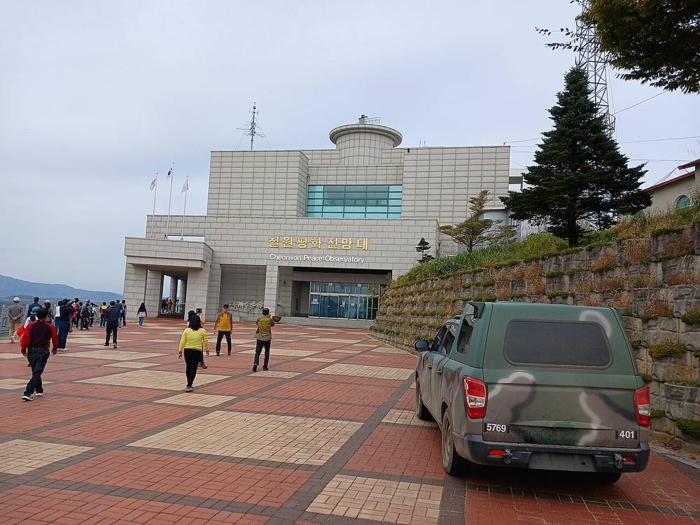
남호주 아파트 주민도 '공동 태양광·배터리'…연방·주정부 1,780만 호주달러 지원, 설치비 절반 보조에 나머지 무이자 융자
'StrataCharge' 사업, 공동주택 한 곳당 보조금·융자 각 최대 4만7,500호주달러…집주인·세입자 모두 전기요금 절감, 남호주 12명 중 1명이 공동주택 거주


해외 화석연료에 37조 원 대 준 한국, 국제 기후재원은 7조7,600억 원…녹색연합 "납부 실적 세계 최하위권"
2018~2022년 화석연료 금융이 기후재원의 4.8배…손실과 피해 기금 30.7%·녹색기후기금 23.3%만 납부

울산 375MW 부유식 해상풍력 '이스트블루파워', 동서발전·오션윈즈·금양그린파워 기술·금융 협력 점검
12일 기술교류회·경영진 간담회…포르투갈·프랑스 운영 경험 공유, 국내 기업 참여·유지보수 인력 양성도 논의
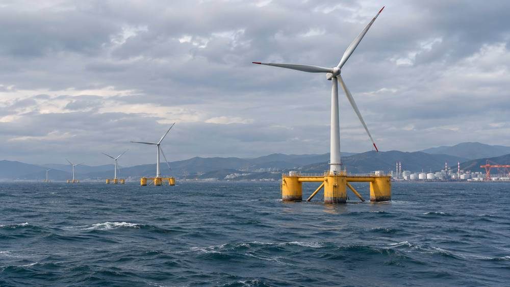
국회 정무위, 17일 금융법안 심사 재개…해킹 과징금·워크아웃법 연장 연내 처리 주목
여야, 소위 안건 협의 중…예금자보호법 특별계정 1년 연장·청년 보금자리론 위한 주금공법도 대기

제주 이창흠 초대 기후경제부지사 "풍력·햇빛 이익을 도민 소득으로"…주민참여형 사업을 도민펀드로 넓힌다
2035년 탄소중립 목표, 약 2GW 추자해상풍력 최우선…신규 발전사업 주민 채권·펀드 투자, 공유화기금은 취약계층·공동체 재원

예산소위 앞두고 여야 '미래대응기금' 공방…국힘 "정부 쌈짓돈, 전면 백지화" 민주 "삭감 외치며 지역구 사업은 증액 요구"
초과세수를 별도 기금으로 운용하는 정부안 놓고 국회 예산통제 권한 논쟁

울산 750MW 부유식 해상풍력 '문무바람' 모회사, 25일 청산 여부 주총…자금 확보가 관건
스웨덴 헥시콘, 이사회는 존속 제안했지만 '운영자금 조달 중대한 불확실성' 명시…감사인은 의견 내지 않아

독일 바이에른 이젠 시민풍력조합, 조합원 470명·출자금 80만 유로 모아…"착공은 몇 년 뒤, 지금은 준비 단계"
'시민에너지 이젠탈' 경험 나눔 행사…풍력 7기 주민 소유 푹스탈 전 군수 "돈이 마을에 남는다"

162조 미래대응기금 8개 사업 4조3,472억 원, 정부는 '신규'·국회 보고서는 '계속'…예산 심사 쟁점으로
청년일자리도약장려금 9,012억 원 중 70.1%는 옛 채용자 잔여분…기획예산처 "확대 개편으로 기금 차원 신규"

산자위, 반도체·미래대응기금 이견에 내년 예산안 의결 못 하고 정회
국민의힘 "서남권 반도체 1조5,000억 원 전액 삭감" vs 민주당 "4조5,000억 원 늘려 6조 원"

수원햇빛발전㈜ 밑그림 나왔다…공영주차장 13곳 5MW부터 20MW·328억 원, 공공 배당은 기후대응기금으로
수원시·수원도시공사·에너지협동조합 참여, 시민펀드로 이익 나눠…16일 수원시의회서 창립설명회

캐나다 캘거리 전기·가스 판매사, 이익 100%를 지역 성소수자 단체에…"요금이 공동체 기금이 된다"
사회적기업 Q-TILITIES, 대표는 월급 안 받고 5년 안에 10만 달러 이상 환원 목표

독일 조합원 4만2,000명 에너지협동조합 프로콘에 통신사도 출자…지분 1,266좌·6만3,300유로, "배당도 다시 출자"
아미바 운영사 STROTH Telecom 조합원 가입…"지분 수와 관계없이 1인 1표 민주적 구조에 끌렸다"
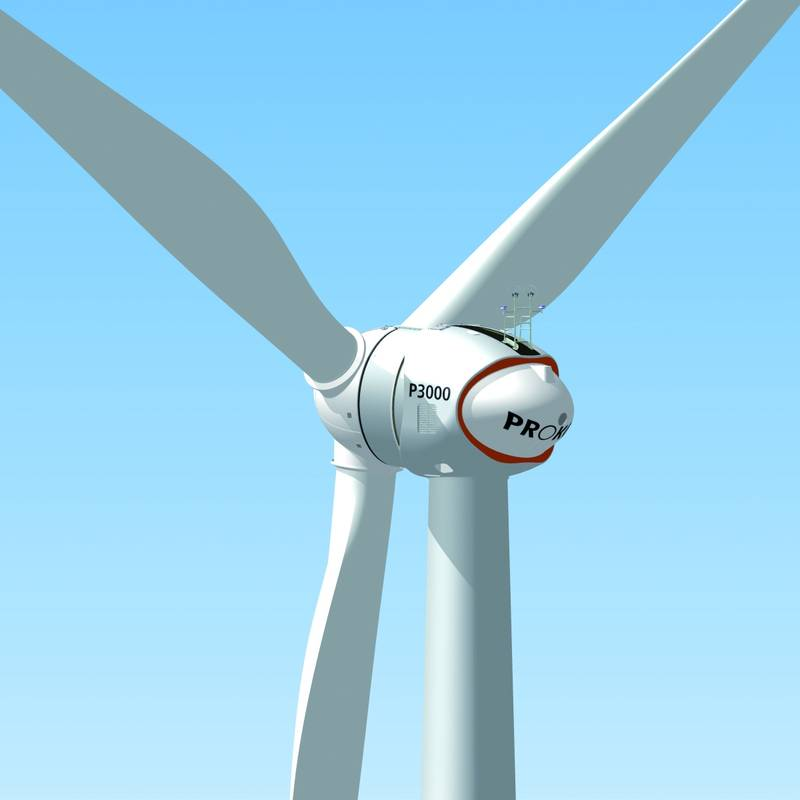
강원도 108억 원 현물출자한 대관령 풍력단지, 연 순이익 3억 원 그쳐…도의회 행감서 "경제성·주민 피해 다시 따져야"
강원개발공사 운영 단지 예상 매출 21억 원…유지보수·인건비 오르면 수익 더 줄 수도, 소음·저주파·그림자 깜박임 등 사회적 비용도 거론

눈의 고장 일본 나가오카에서 시민 65명이 '시민공동발전소'…출자금으로 지붕·농지 위 태양광, 수익은 출자자에게
2023년 설립한 일반사단법인 '나가오카 자연에너지', 학교 출장수업·소수력 체험도…"연간 일사량 간토의 약 80%"

스코틀랜드 송전망 회사 500만 파운드 '넷제로 기금', 주민 주도 사업 26곳 지원 마쳐…"1파운드 넣어 사회적 가치 2.85파운드"
SP에너지네트웍스 기금, 중부·남부 공동체 건물 단열·저탄소 난방·친환경 교통 지원…워크숍 32회 450여 명, 22곳 전문 자문, 이산화탄소 2만5,000톤 넘게 줄여

공공이 앞장선 제주·나주의 에너지 전환…풍력 공유화기금·나주형 햇빛연금으로 이익 나눴지만 전력망 포화가 숙제
제주에너지공사 풍력 59.53MW 운영·한림해상풍력 주민 1,009명 1인당 연 351만 원…나주 허가받고 못 짓는 태양광 약 2,700곳

스코틀랜드 SSEN 트랜스미션, 송전설비 인근 주민에게 162만 파운드 지역기금 설계 의견 묻는다
레어그·로가트 주민 대상 설문 11월 16일~12월 14일, 설명회 3회…'사우스 로크신 지역기금'은 2027년 문 열 예정

영국 내셔널그리드, 블라이스 변전소 증설 지역에 최대 106만 파운드 공동체 기금…쓰임새는 주민 의견 받아 정한다
데이터센터·버윅뱅크 해상풍력 연결용 변전소 1·2단계에 53만 파운드씩, 12월 6일까지 4주간 의견 수렴…기금은 내년 여름 출범
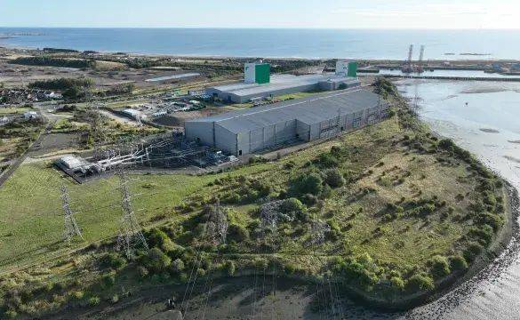
용인시정연구원 "반도체 RE100 수요를 시민 소득으로"…시민 투자·주민 참여·공공자산 태양광 담은 이익공유 모델 제안
이슈리포트 'YRI Insight 119호'…발전 수익 공유, 시공·유지관리 주민 참여, 정책금융·시민투자 연계, 인접 시군과 광역 협력 등 5가지 방안

신협, 시민 태양광에서 해상풍력·햇빛소득마을까지 재생에너지 금융 넓힌다…마을 발전시설 자금 최대 85% 대출
안산시민햇빛발전협동조합 발전소 60곳 짓는 데 힘 보탠 경험 살려 고창 해상풍력 1,000억 원 연계대출 참여, 에너지공단 이차보전으로 마을 이자 부담 덜어

호주 연구진 "재생에너지 지역 혜택, 반짝 지원 말고 오래 남는 유산으로"…지역기금 2030년 2억1,300만 호주달러 전망
시드니공과대 분석 "지역 고용 효과 아직 뚜렷하지 않아"…원주민 지분·수익 5% 공유 입찰, 지역 훈련, 영농형 태양광 계획 인정 제안

일본 사가시, 시가 52% 출자한 지역 전력회사 세워…청소공장 전기를 공공시설 113곳에 직접 판다
자본금 5,000만 엔 중 시 2,600만 엔·민간 6개사 400만 엔씩…연 약 1만6,000MWh 판매, 시 밖으로 새던 전기요금 지역에 남긴다

체코 풍력 마을 3곳 "소음·건강 걱정 현실 안 돼"…수익은 투자자와 맺은 조건 따라 갈려, 쓰레기 수수료 없앤 곳·한 번 받고 끝난 곳
그루나 2006년부터 4기·베주니체 2009년부터 2기·아넨스카 스투단카 6기, 주민 민원 없어…경관 반대는 남아, 세 곳 모두 "착공 전 주민 소통과 투자자 선택이 가장 중요"
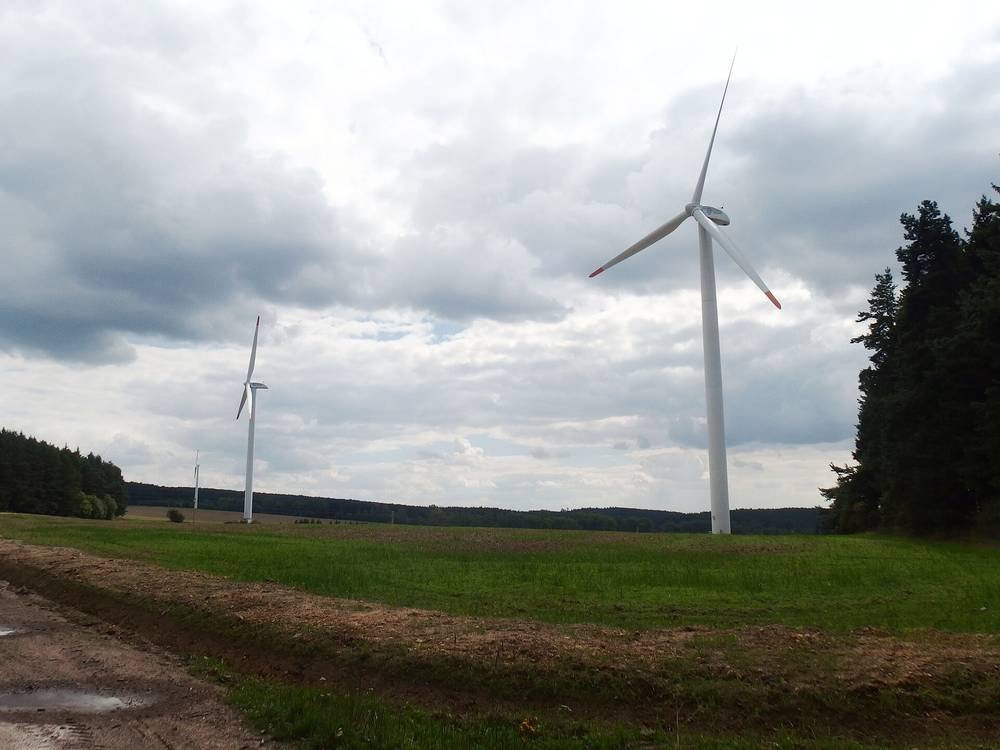
평창 운두령풍력, 600억 원 사업에 주민 30억·군 18억 원 출자…주민 연 4억~5억 원 수익으로 7년 만에 원금 회수 기대
4.2MW 5기 21MW, 태백 가덕산 방식 '주민주도형' 업무협약…군은 2029년 가동부터 연 3억 원 수익, 10년 안에 연 200억 원 기본소득 재원 목표
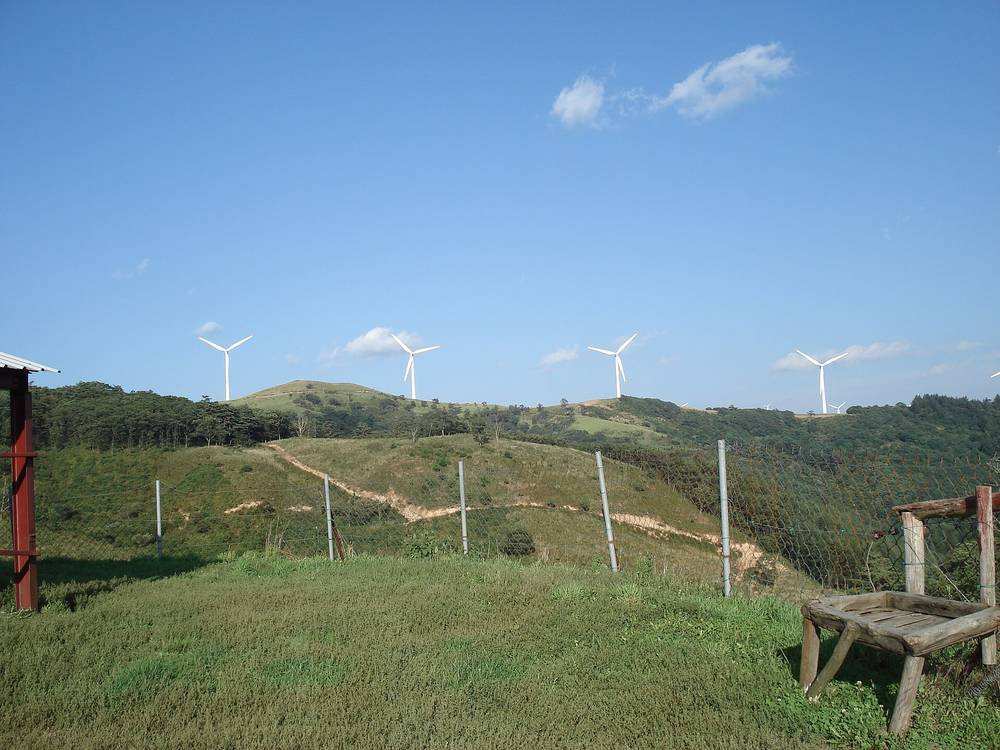
호주 사파이어 풍력단지 공동체 기금, 인버렐 지역 15개 사업에 약 14만2,000호주달러…구조대 장비·학교 놀이터 지원
23건 신청 중 15건 선정, 가장 큰 2만 호주달러는 배터리 구조 장비에…다음 신청은 2027년 1월 11일부터
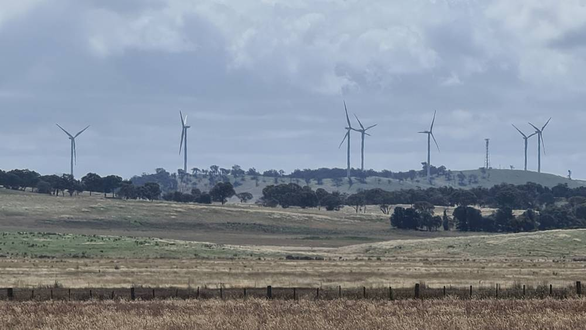
스코틀랜드 베리번 풍력 공동체 기금, 주민 단체 17곳에 8만7,814파운드…마을 정원 태양광·자원봉사 차량 지원
29기 풍력단지 운영사가 해마다 물가 연동 26만6,187파운드 내고, 지역 주민 11명이 심사…이번이 38번째 배분
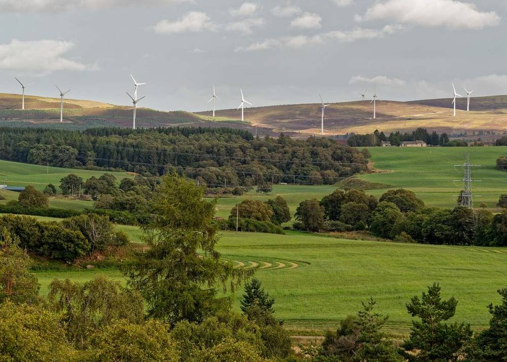
앱으로 모은 개인 투자자 2만2,000명, 공장 지붕 태양광 7,000곳에 4,000억 원 넘게 넣어
에이치에너지 '모햇', 투자금으로 협동조합 세워 공장 지붕에 발전소…기업은 싼 전기, 투자자는 판매 수익 배당
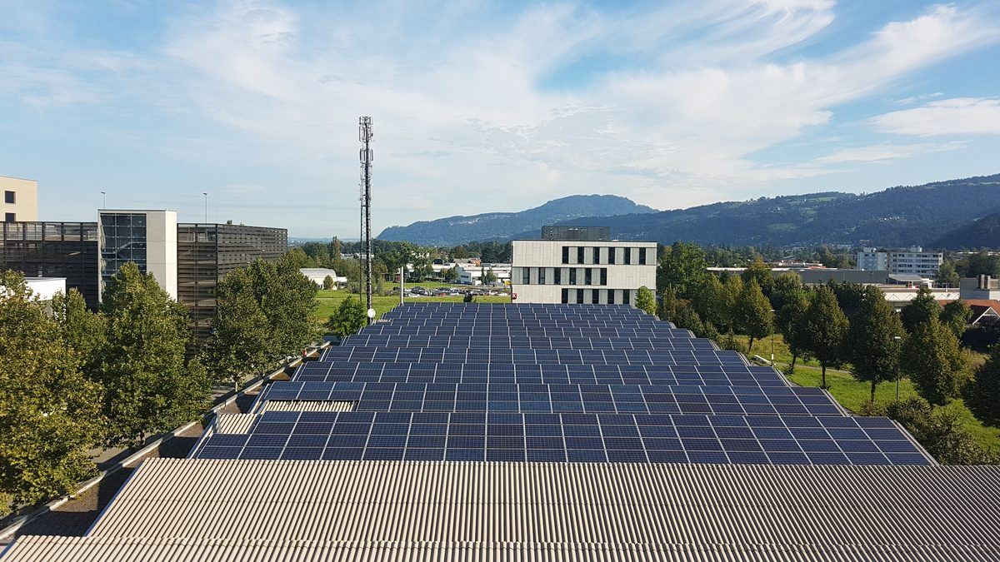
익산시, 12월 영농형 태양광 법 시행 앞두고 "햇빛소득마을과 묶어 금융·ESS 지원"
최정호 시장 "설비 면적은 농지의 20% 안팎, 발전 소득이 더 커"…인허가·설치비·계통 연계는 과제로 남아
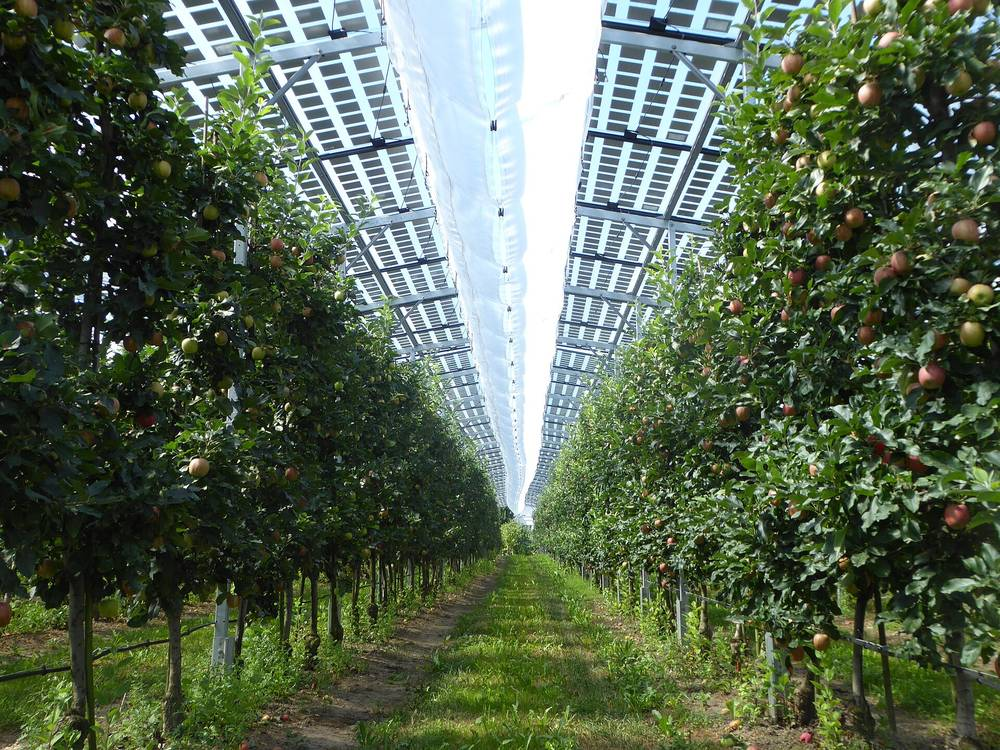
스코틀랜드 아가일·킨타이어 송전선 지역기금 첫 지원…9곳에 59만2,770.85파운드, 주민 대표 6명이 심사
송전망 회사 SSEN의 320만 파운드 기금, 마을회관·청소년 시설·저탄소 난방 등에 배분
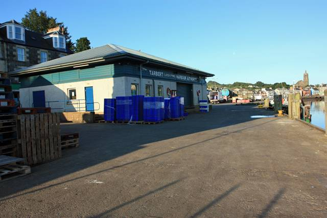

시민·사회연대경제 조직이 함께 출자하는 '가치금융신협' 설립 추진…11일 국회서 포럼
사회주택·의료돌봄·재생에너지에 자금 공급 구상…국회의원 5명 공동 주최, 행안부·신협중앙회 후원
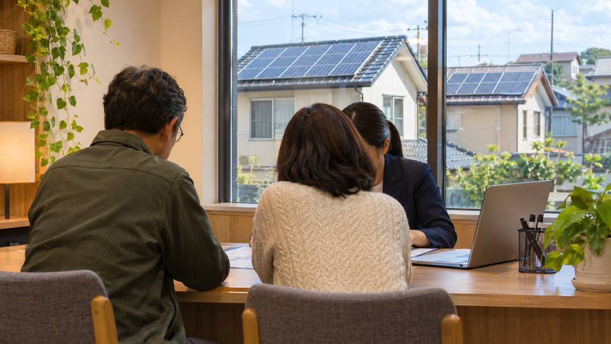
양산 원동면 대리·선리·장선마을, 낙동강수계 기금으로 햇빛소득마을 추진…행안부 공모 신청 남아
낙동강수계관리위 '2027년 재생에너지 특별지원사업' 대상에 포함…설비 대리 360kW·선리 999.45kW·장선 998.46kW, 주민 동의율 90%·72.9%·71%, 내년 지원 예정액 20억2,700만 원
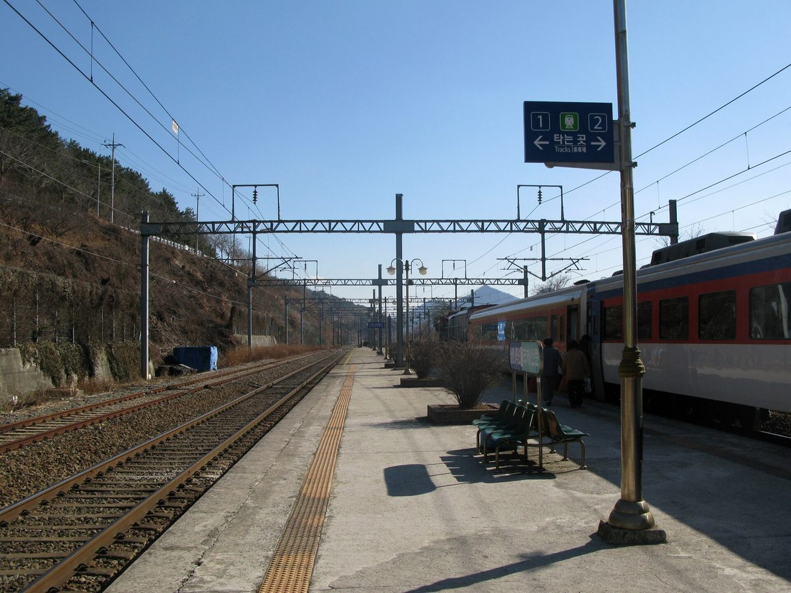
여수 최동익 의원 "햇빛소득마을 육성기금 2조 원 조성하자"…시의회 5분 발언서 제안
4년간 매년 5,000억 원, 주민 초기 자기자본·장기저리 융자에 쓰고 상환금은 다른 마을에 재대출
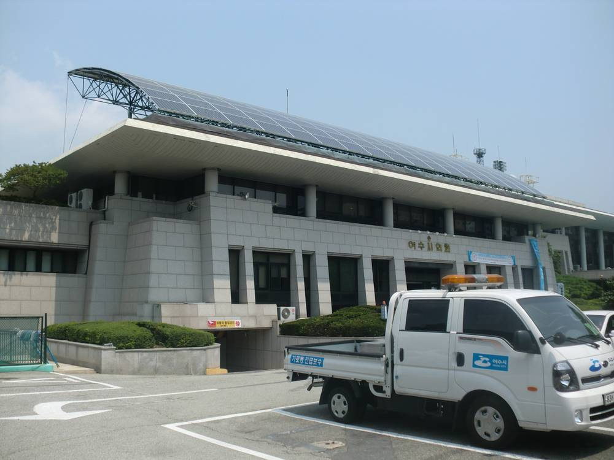
이탈리아 에너지협동조합 ènostra, 2029년까지 자체 발전 3배·조합원 2만8,000명 목표…새 발전 투자 450만 유로는 조합원 출자로
10월 말 조합원 웨비나서 2026~2029 전략계획 발표…고객 공급 전력 약 60GWh→100GWh, 출처 추적 전력 비중 20%→40%, '사회적기업' 전환도 검토

스코틀랜드 화이트로 브레 육상풍력, 지역에 공동체이익기금 연 28만5,000파운드·주민 지분 매입 기회 약속…연내 계통 연결
Thrive Renewables·TopCashback 합작사 소유, 연 최대 14만9,400MWh 생산 전망…차액계약 7차 입찰 낙찰 뒤 SmartestEnergy와 전력구매계약, 지분 규모·시기는 아직 안 나와
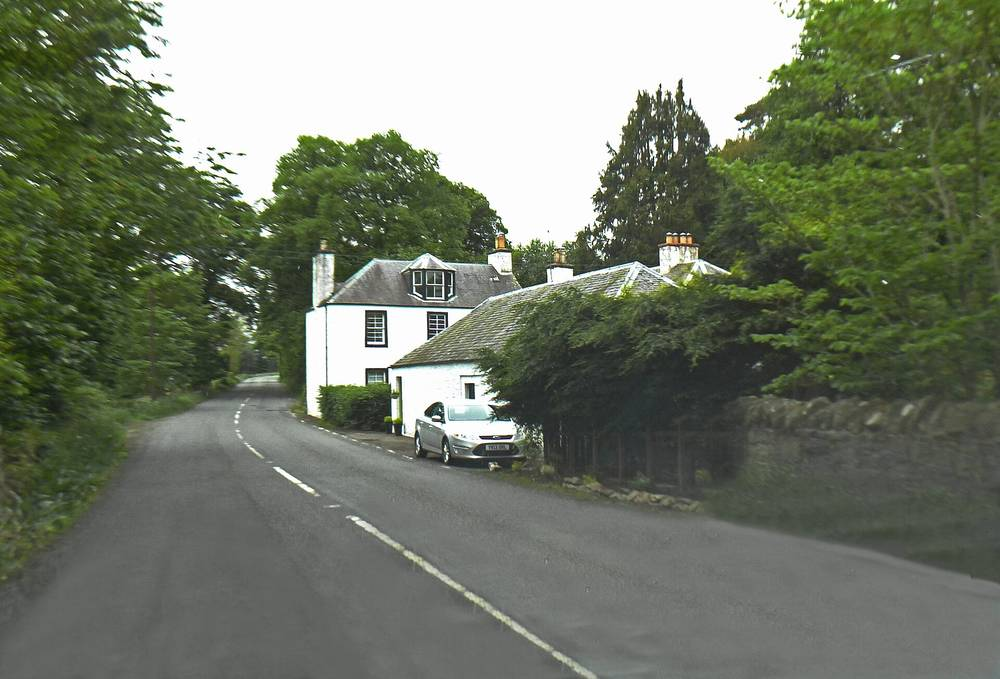
일본 후쿠오카현 고가시, 지역 기업·은행 등 16곳과 함께 출자한 지역에너지회사 '코가네이로' 세워
5월 25일 설립·7월 23일 기념식, 자본금 990만 엔…전력 중개·태양광 PPA·탈탄소 지원 플랫폼 운영 맡아, 사장은 시내 에너지 지출 연 약 150억 엔의 일부라도 지역에 돌리겠다고 밝혀
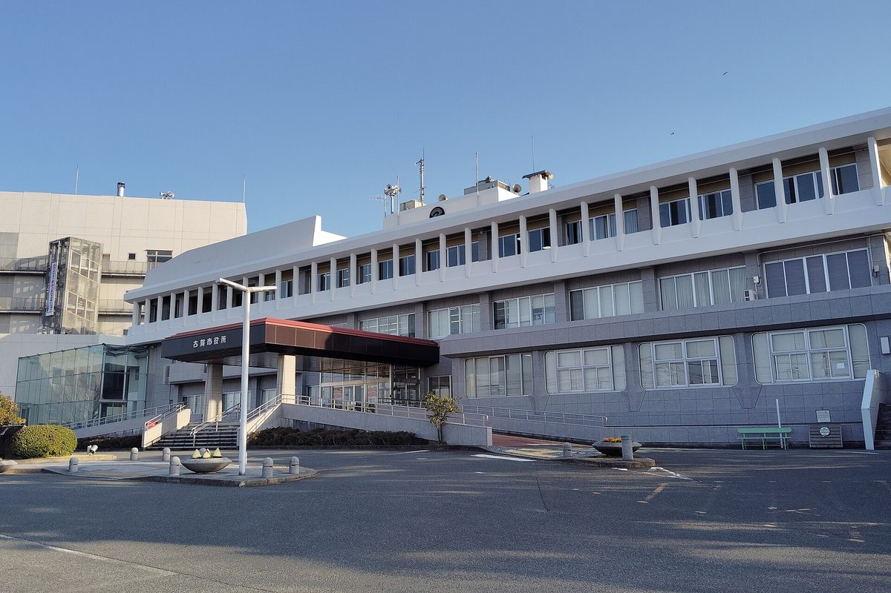
루마니아 갈라치 군, 정의로운 전환 기금 770만 유로로 재생에너지공동체 공모…군의회가 시·면 동반 사업 이끈다
태양광·태양열·히트펌프·저장장치·망 연결 지원, 85%는 EU 정의로운 전환 기금·15%는 국가 예산…취약 가구 우선, 2027년 3월 31일까지 신청
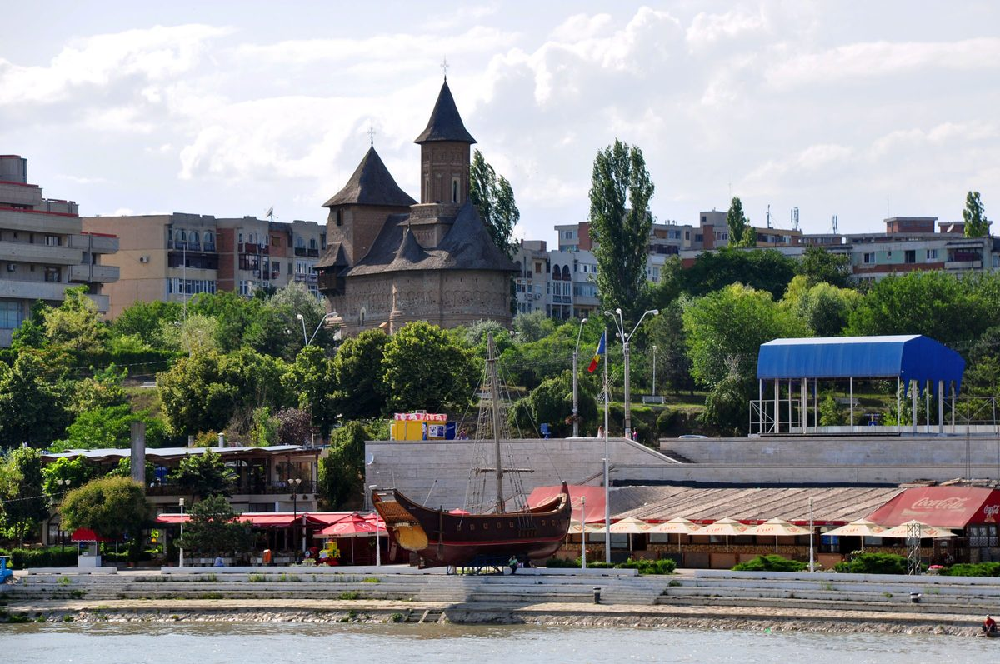
몰도바 의회, 에너지공동체법 2차 독회 가결…주민·지자체·아파트 소유자협회가 함께하는 비영리 결사체, 이익 배당 금지하고 재투자
회원인 지자체는 소유 부동산·에너지 기반시설을 공동체에 쓰게 할 수 있어…관보 게재 한 달 뒤 시행, 기존 공동체는 24개월 안에 새 규정으로 재편
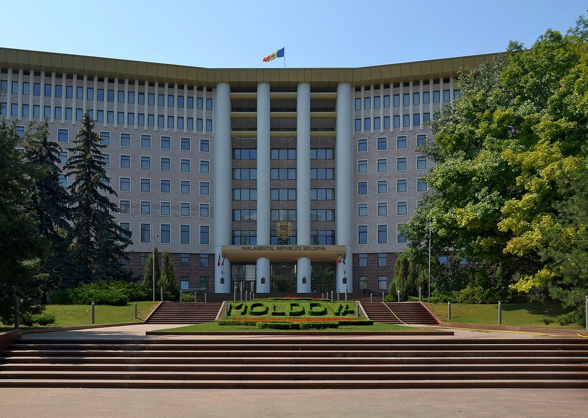
프랑스 생루이시, 생샤를 성당 지붕 20년간 시민 태양광 협동조합에 내줘…약 35kWc 설비에 시민 출자 1만5,000~1만7,000유로 모금
연 3만5,000kWh로 13가구 소비량, 총사업비 5만5,000~6만 유로…2027년 하반기 가동 목표, 시장 "시 시설이 이 전기를 쓰는 데 관심"
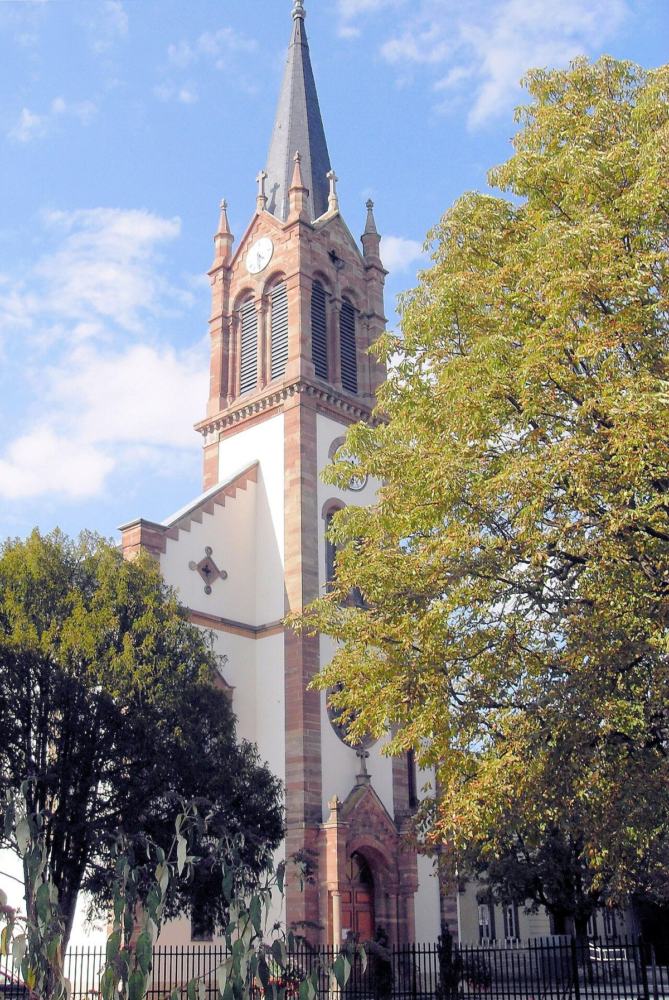
전남광주시의회, 대통령직속 기본사회위와 간담회…신안 햇빛연금 전역 확대·공유부 기금 조성 논의
햇빛·바람 활용한 에너지 기본소득, AI 시대 공유부 배당·국부펀드도 거론…송형곤 의장은 조례 제정·기금 조성 등 자치입법 추진 밝혀, 구체안은 아직
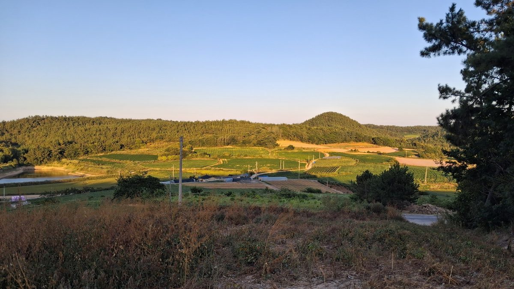
3조5,000억 원 규모 완도 장보고 해상풍력, 전남개발공사 출자금 부족으로 공공 지분 줄어들 우려
전남광주시의회 행정사무감사서 출자 가능 재원 약 1,300억 원 중 약 1,000억 원 필요 지적…의원 추산 주민 수익 완도 연 267억·신안 216억 원, 집행부는 출자 요청 받은 적 없다고 답변
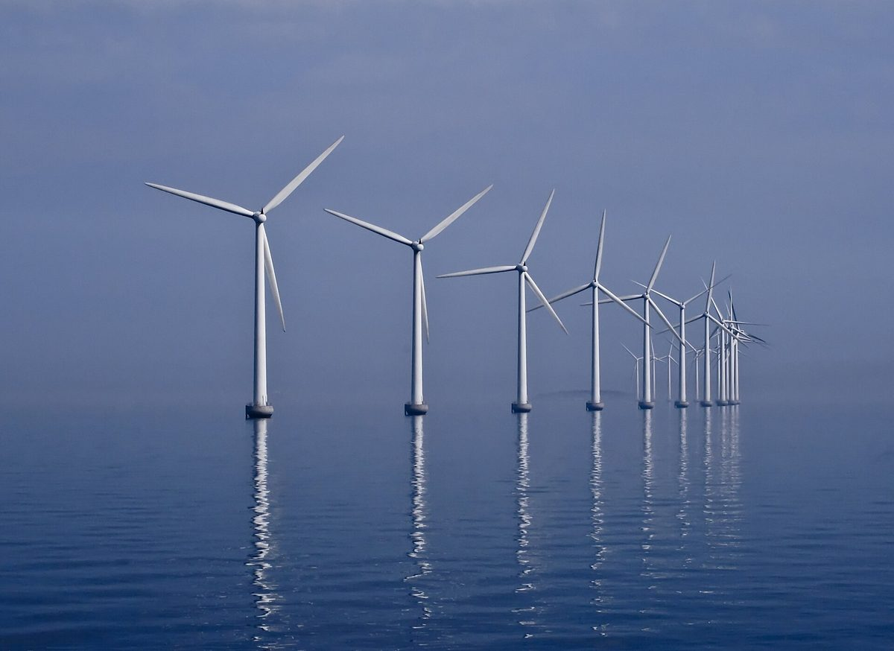
프랑스 알자스 '세 나라 국경' 주민 4명, 시민에너지 모임 EC3F 꾸려…한 주 108유로 출자로 지붕 태양광 공동 소유 추진
2022년 생루이 광역연합 설명회에서 처음 만나 2023년 말 독립, 시민 협동조합 '에네르지 파르타제 앙 알자스'의 지역 모임으로 활동…한 달에 한 번 모여 태양광 올릴 지붕 찾고 집단 자가소비 사업 준비

폴란드 오도라누프 등 3개 지자체 에너지 클러스터, 공적 자금 3,000만 즈워티로 주민 태양광 627곳…주민 부담은 설치비 10%
2027년 6월까지 저장장치도 함께 설치, 시장 "클러스터 전체로는 1,500곳 가까이"…세 지자체는 주민에게 재생에너지 설비를 보여 줄 '에너지 아카데미'도 추진

영국 웨일스 포트탤벗, 내셔널그리드 변전소 2곳 지역 기금 106만 파운드…쓰임새 주민 설문으로 정한다
타타스틸 제철소 전기로 전력 공급용 '마검 연결' 사업에 딸린 보상 성격 기금, 정부 지침 '변전소 1곳당 53만 파운드'와 같은 수준…연료비 지원 등 6가지 후보 내놓고 11월 26일까지 의견 받아, 지급 방식·심사 주체는 미정
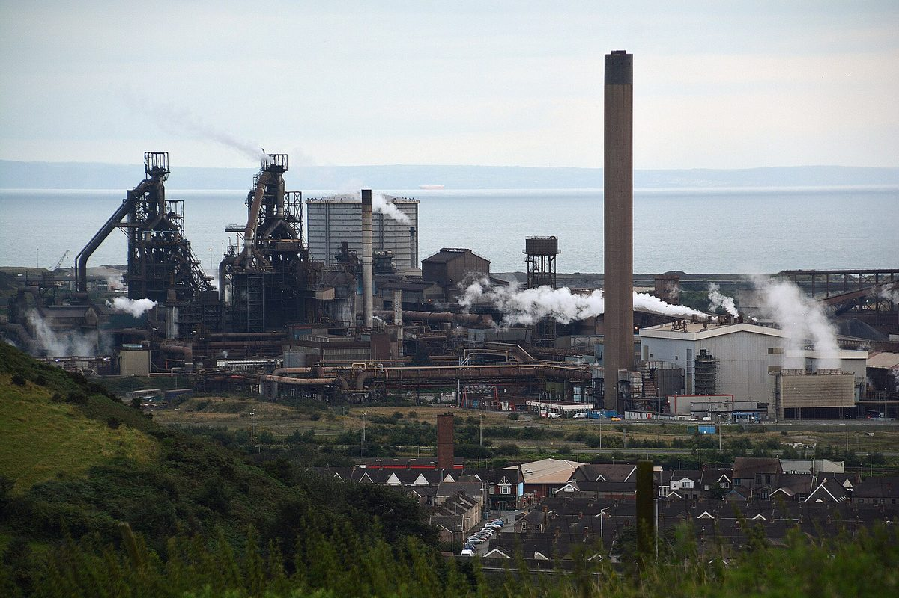
미국 11월 3일 지역 에너지 주민투표 첫 집계…키챕 공영전력·투손 민간 전력사 영업권 반대 우세, 유진 대기업 부담 클린에너지 기금은 찬성 앞서
키챕 '제안 1호' 반대 약 60.5%, 민영 전력사 240만 달러 대 찬성 쪽 약 9,000달러…투손 '제안 421' 초기 개표 반대 53.3%로 TEP 430만 달러 운동 밀려, 유진 '메저 20-388' 찬성 약 58%에 발의 쪽 승리 선언, 앤아버 시영 전력 안은 비공식 집계서 반대 51.83%로 부결
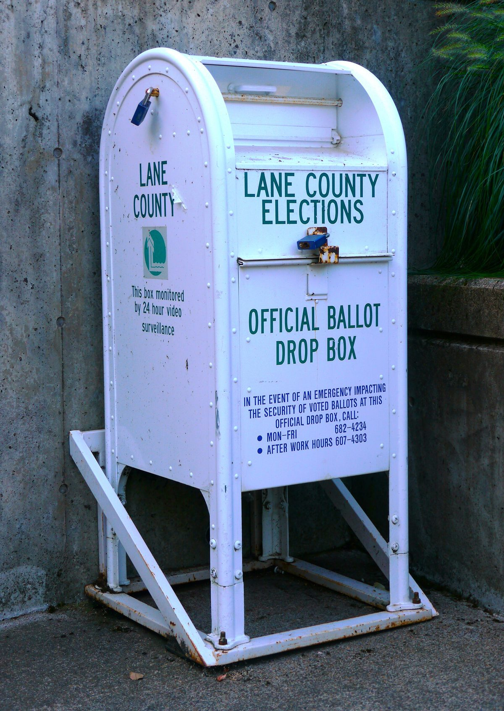
조국혁신당, 초광역특구법안 당론 발의…재생에너지 사업은 총사업비 4% 이상 주민 투자 기회 먼저
주민·노동자 참여 상생협의회, 송·배전 공동접속설비 국가 지원 담고 주 52시간제 예외·지주회사 규제 완화는 빼…규제특례엔 5년 유효기간, 발의 단계
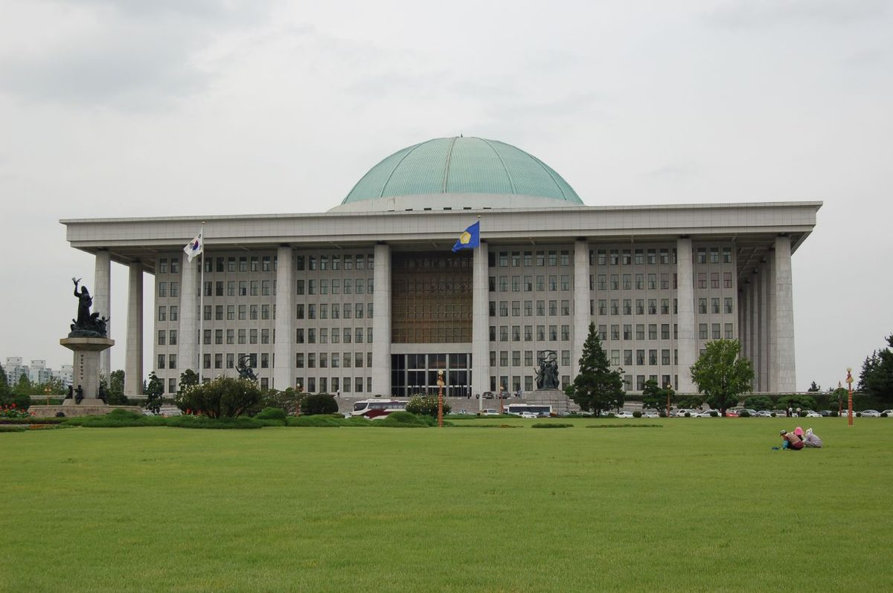
뉴질랜드 애슈버턴 지역의회, 오르는 전기요금에 태양광 검토…연 40만 달러 절감에 500만 달러 넘는 선투자 놓고 의원 이견
연 전기료 약 177만 달러, 다음 주 장기계획 예산 심의서 부서별 태양광 안 검토…"그 돈 도로에 쓰는 게 낫나" 대 "건물 지붕에 조금씩"
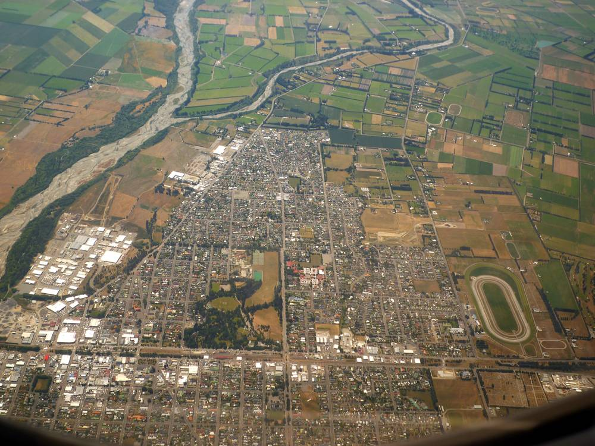
스코틀랜드 SSEN, 스카이 송전선 보강 지역에 546만 파운드 기금…신청은 내년 2월 10일까지
첫해 최대 180만 파운드, 신청 1건당 최대 10만 파운드…주택·공동체 자산 등 5개 분야 우선 심사
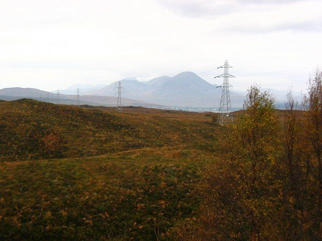
이탈리아 폼페이아나 시, 학교·시청·공영주차장 태양광과 재생에너지공동체(CER)를 한 묶음 민간투자 입찰…공사비 65만7,099유로, 21년 계약
양허 전체 추정가치 141만1,638유로, 시가 운영사에 해마다 2만9,585유로 내는 구조…응찰 11월 27일 마감·30일 개찰, 제안사 우선권은 EU 판결 따라 없애

용인시정연구원 "재생에너지 혜택은 시민에게"…시민투자·주민 일자리·공공자산 태양광 담은 '용인형 이익공유 모델' 제안
이슈리포트 'YRI Insight 119호'…반도체 산단 전력설비 약 15GW 전망 속 시민협동조합·펀드 투자, 송전망 영향 주민 우선 출자권 검토, 공영주차장 51곳 중 17곳 태양광 계획 제출

같은 댐 수상태양광, 합천은 주민 1,400여 명 투자로 가동하고 용담은 멈췄다…나주호 9년 갈등에 비춰 본 '주민 의견 묻는 순서'
합천댐은 군과 함께 25인 주민협의체 꾸려 설명회·공청회 10여 차례(수공 자료), 용담댐은 사업자 주도 설명회에 반발 끝 중단 통보…나주호는 허가 신청 뒤에야 의견 조회, 농어촌공사·사업자·나주시 답변은 아직
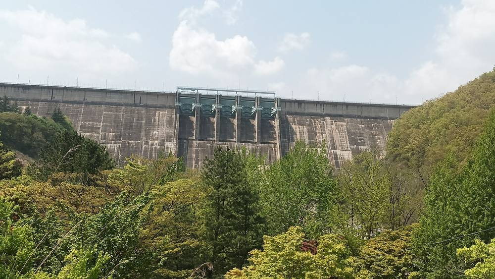
일본 후쿠이 미하마 정, 호숫가 시설 지붕 태양광으로 충전하는 '전지 추진 유람선' 승객 5만 명 넘어…적자로 출자 법인 물러난 뒤 정이 직영
2023년 4월 개업한 미카타고코 네이처 크루즈, 레이크센터 지붕 태양광→축전지→배로 전기 공급…2025년 1월부터 정 직영으로 여행사 영업·SNS 홍보 늘려
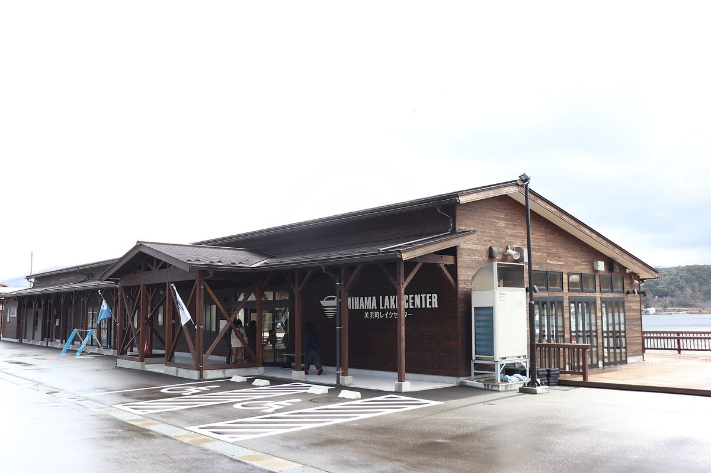
프랑스 플루이지 풍력단지, 2009년 주민 10명이 세 기 중 한 기에 출자…17년 뒤 "다른 투자보다 덜 위험"
한 사람 한 주 200유로, 주주 당좌계정 이자는 연 8%에서 시작…생브리외 지역 에너지기후청, 출자 주민 경험 나누는 견학 열어
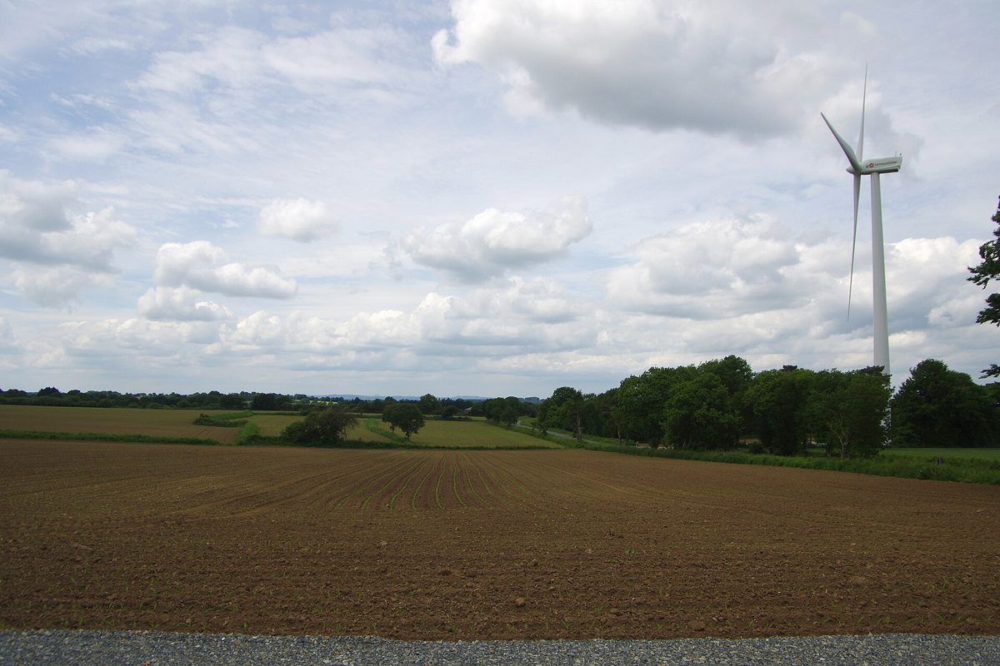
에든버러 공동체 태양광 협동조합, 113만 파운드 시민 출자 모집…25파운드부터, 공공·공동체 건물 10곳에 설치
왕립 커먼웰스 수영장·학교 5곳 포함, 예상 연 수익률 5%…2015년 출범 뒤 30곳 설치·조합원 700명 가까이, 공동체 기금으로 10만 파운드 넘게 나눠
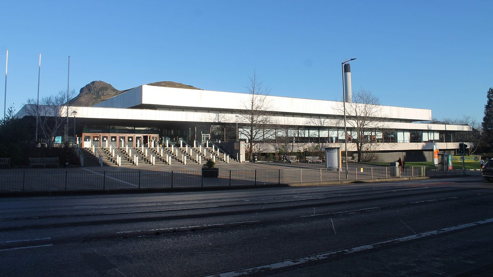
전북개발공사, 재생에너지 사업 키우려 '에너지본부'·2029년까지 자본금 926억 원 출자 추진…도의회 상임위 "설명 부족" 상정 보류
에너지사업처를 본부로 올리고 정원 103명→151명, 2027년 300억·2028년 300억·2029년 326억 원 단계 출자 구상…구상대로면 수권자본금 2,500억 원 한도까지, 12월 임시회에 다시 올릴 방침
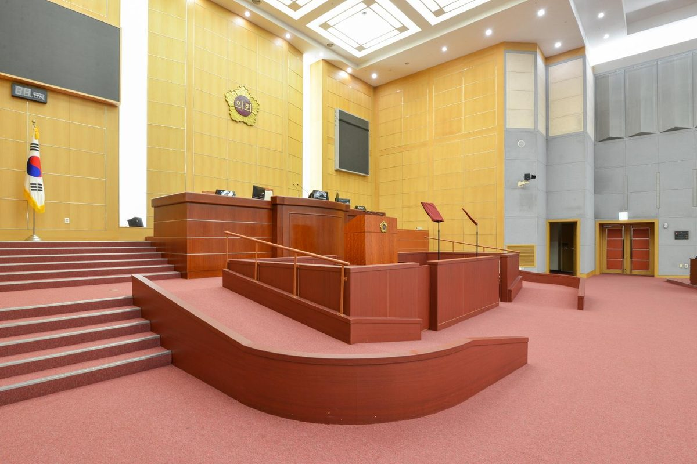
정부 '주민참여 우수사례' 한림해상풍력, 주민 몫 REC 수익에서 주민 회사채 이자 먼저 뗐다…로펌 3곳 "법 위반" 자문 의견
주민법인 3곳이 산 회사채 300억 원의 연 7% 이자를 가중치 0.3 추가 REC 수익에서 충당, 남은 돈만 '이익공유'로 지급…에너지공단 "절차 진행 중", 기후부 "문제 확인되면 개선", 사업자 "주민과 약정, 당국과 협의 중"

최동익 전남광주통합특별시의원, 통합 재정지원으로 2조 원 햇빛소득마을 육성기금 만들자 제안
5분 자유발언서 매년 5,000억 원씩 4년간 적립해 마을 자기자본·장기저리 융자 지원하고 상환금은 다른 마을에 다시 빌려주는 구조 제시…대출 의존이 주민 소득 깎는다고 지적, 집행부 답변은 아직 없어
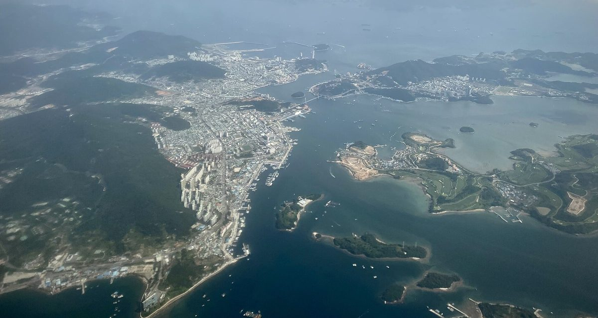
프랑스 랑드 생폴레닥스, 옛 폐기물 적치장에 4.57MWc 시민 태양광…주민 투자 조직 CIER40 따로 꾸려
코뮌·에네르코프 누벨아키텐 등이 사업 회사에 참여하고 대출·공공 자본·시민 참여를 섞어 400만 유로 넘게 투자…랑드도는 태양광 1,413MW로 프랑스 도 가운데 1위지만 에너지 소비 감축은 4.2%에 그쳐

서천군의회, 농어촌 기본소득 지원·기금 조례 의결…기금 쓰임새에 '주민 수익형 재생에너지 사업' 넣어
의원 발의 조례 2건 원안 가결, 기본소득은 지역화폐로 주고 기금은 2031년 말까지 일반회계 전입금·운용 수익금·기부금으로 꾸려…지급액·대상 규모·지급 개시일은 아직 정해지지 않아
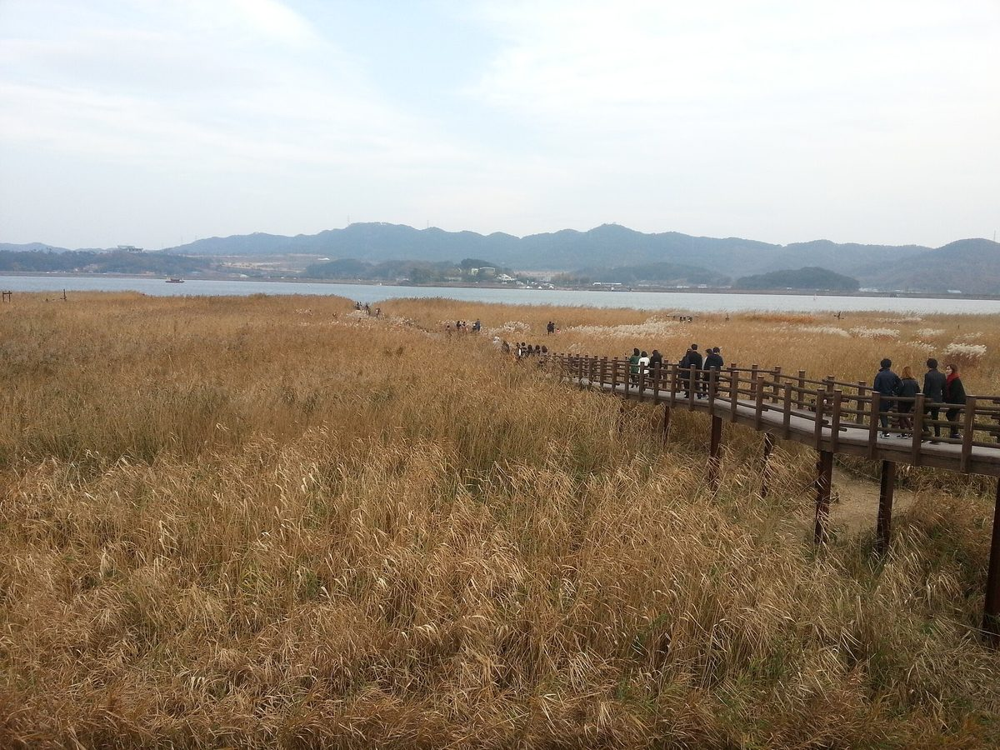
루마니아 오크나무레슈시, 시 태양광으로 한 해 590MWh 만들어 시 소비 444MWh 넘겼지만 요금은 다 못 덜어…EU 현대화기금에 1.72MWh 저장장치 사업 신청
낮에 kWh당 0.40~0.65레이에 내보내고 밤에는 1~1.30레이에 사는 값 차이 때문…약 50만 유로 사업은 사실상 전액 무상 지원을 노리고, 시장은 배터리를 가득 채우면 가로등을 하룻밤 넘게 켤 수 있다고 설명
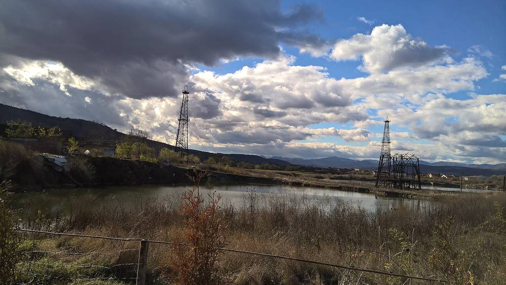
독일 치메츠하우젠 풍력 14기, 투자사는 '30년 최대 2,300만 유로' 계산서…시장은 반대, 가구당 전기 할인은 연 45유로
가동 첫 15년은 영업세 거의 없고 토지 임대료는 사유지 주인 몫…법정 분담금 연 약 28만2,000유로는 마을이 내는 군 분담금 240만 유로의 10분의 1 남짓

독일 바이에른 에겐호펜 주민, 뮌헨 시영 전력사가 짓는 7.2MW 풍력발전기에 협동조합 '고정 이자 대출'로 참여 길 열려
이웃 마을 시민에너지협동조합 '마이자허 란트', 5월 총회서 활동 지역 넓혀 에겐호펜 주민 우선 모집…첫 설명회에 40여 명, 발전기는 연말연초 가동 예정
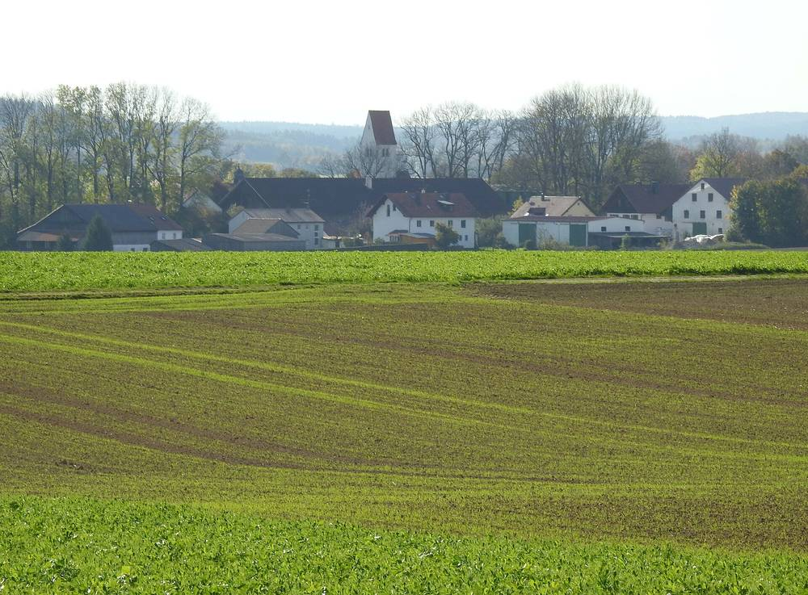
프랑스 낭트 경기장 주차장에 태양광 그늘막 6기…지자체 회사 3기·시민 출자회사 3기 나눠 짓는다
라 보주아르 주차장 패널 4,500㎡·연 1.1GWh 추정, 지름 2km 원 안 기업에 고정 요금 판매 추진…시민 주주 150명, 7개 시·읍 공영주차장 9곳으로 넓힌다

아르헨티나 부에노스아이레스주, 전기협동조합이 조합원 쓸 재생에너지 직접 생산하는 '법 15.665' 시행…주립은행 장기 저리 융자 길 열어
시 배전 영업권 가진 협동조합·혼합경제회사에 '공동체 자가발전자' 지위…생산 전기는 배전 공공서비스로 보고 여러 조합 공동 발전 허용, 남는 전기 팔려면 주식회사 형태 필요

벨기에 주민 60여 명 마을 오메제, 협동조합이 700m 목재칩 열망 추진…지분 1구좌 250유로로 시민 출자 모집
'에네르지 포지티브 오메제', 이웃 숲 목재 부산물로 주택 10여 채·특수학교·청소년 시설·성당 난방 계획…허가 앞두고 사업비 일부 못 구해, 열망에 연결 안 되는 사람도 조합원 가능
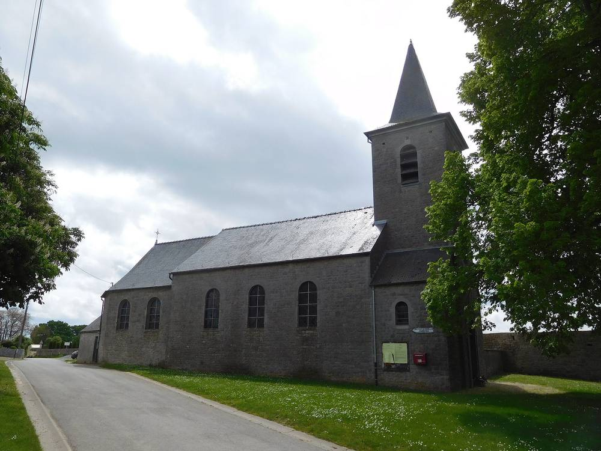
수원서 '햇빛냉장고' 연구세미나…"시민 햇빛발전 수익을 공유냉장고 43곳 먹거리 나눔으로", '햇빛 먹거리 연대기금' 제안
수원지속가능발전협의회 30일 세미나, 전기료·수리비를 공모사업·후원에 기대는 공유냉장고와 시민 출자 발전소 잇는 방안 논의…에너지협동조합·시민햇빛발전 사회적협동조합·수원시 미래에너지팀장 토론, 운영협의체·소규모 시범사업은 후속 과제
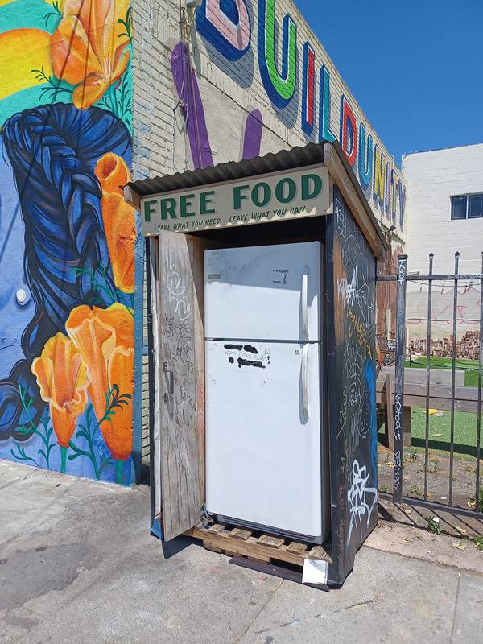
영암군의회 "햇빛소득마을, 수익 나누기 전에 자부담·대출 상환 기준부터"…죽정마을 태양광 500kW·ESS 1.5MWh에 14억 원
주요사업장 현장방문 결과보고서에서 지방소멸대응기금·대출 이자 지원·저금리 금융 협약 검토 요구…영암은 10개 마을 9개 사업 조건부 선정, 보고서 속 수익 계획은 마을기금·취약계층 지원 각 40%
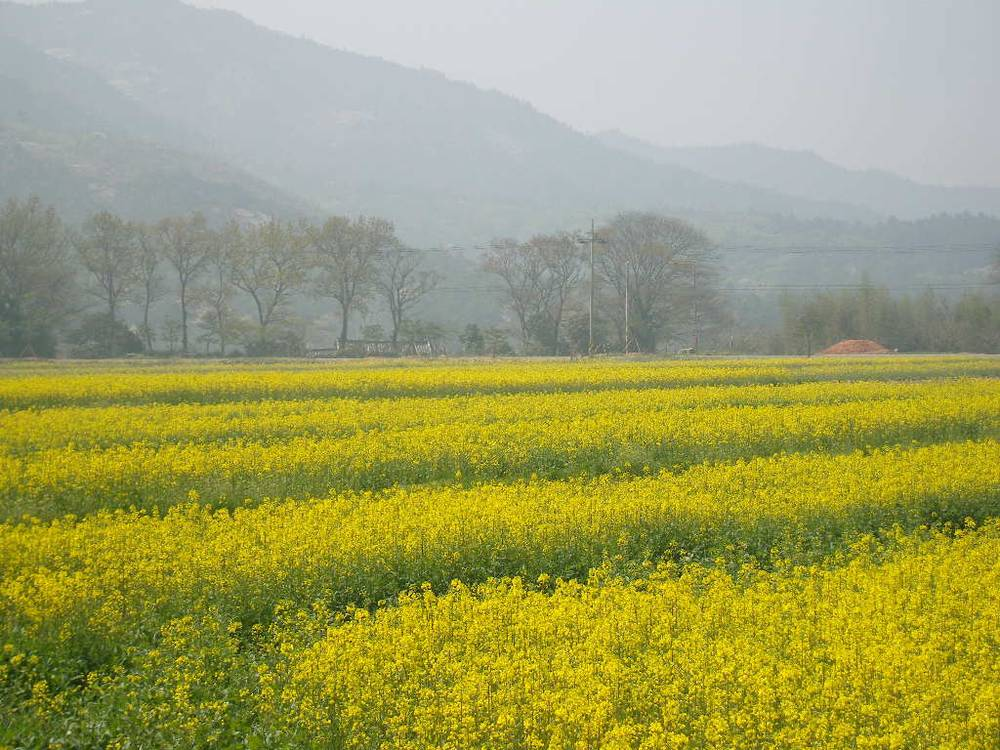
영등포 시민햇빛발전협동조합, 공영주차장·공공건물 옥상에 주민 출자 햇빛발전소 제안…구청장 측 설치 가능 여부 확인하겠다
구는 공간 발굴·사용허가만 맡고 건설비·대부료·철거비는 조합과 주민이 지는 구조…발전수익 일부는 반지하 등 취약계층 주거 개선에 쓰겠다는 구상, 대림3동 공영주차장·신길 환승주차장 거론
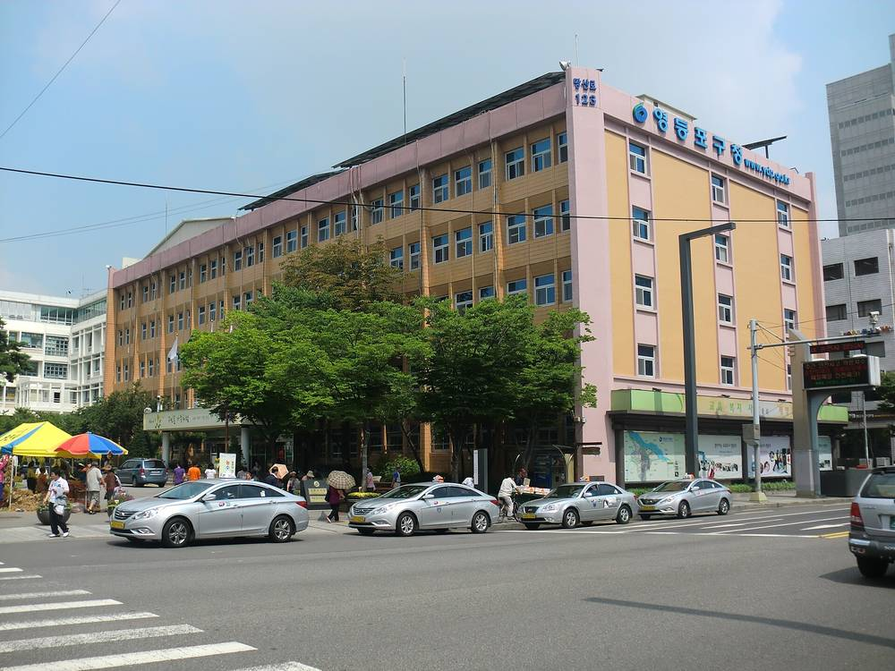
신한자산운용, 주민수익공유 펀드·에너지 인프라 성장 펀드 합계 약 5,000억 원 결성…주민 펀드 첫 투자처로 대규모 해상풍력 주민참여 사업 확보
발전단지 인근 주민·주민조합에 지분·채권 투자 자금을 대고 발전수익 일부를 배당·이자로 돌려주는 구조…주민 펀드 단독 금액, 첫 투자 사업 이름, 주민 금리·배당 조건은 발표에 없어

제주 한림해상풍력 주민 투자 300억 원 가운데 200억 원은 공단 정책융자…투자 배당과 도민 공공 환원을 나누자는 제안 나와
인근 3개 마을 주민 1,009명 협동조합 투자, 저리 융자 대상은 거리·거주 기간·어업권 피해로 제한…추자해상풍력 '주민 우선, 도민 확대' 구상엔 금융비용 격차·배당 소외 우려, 지역 일간지 기획 연재 마무리 제안
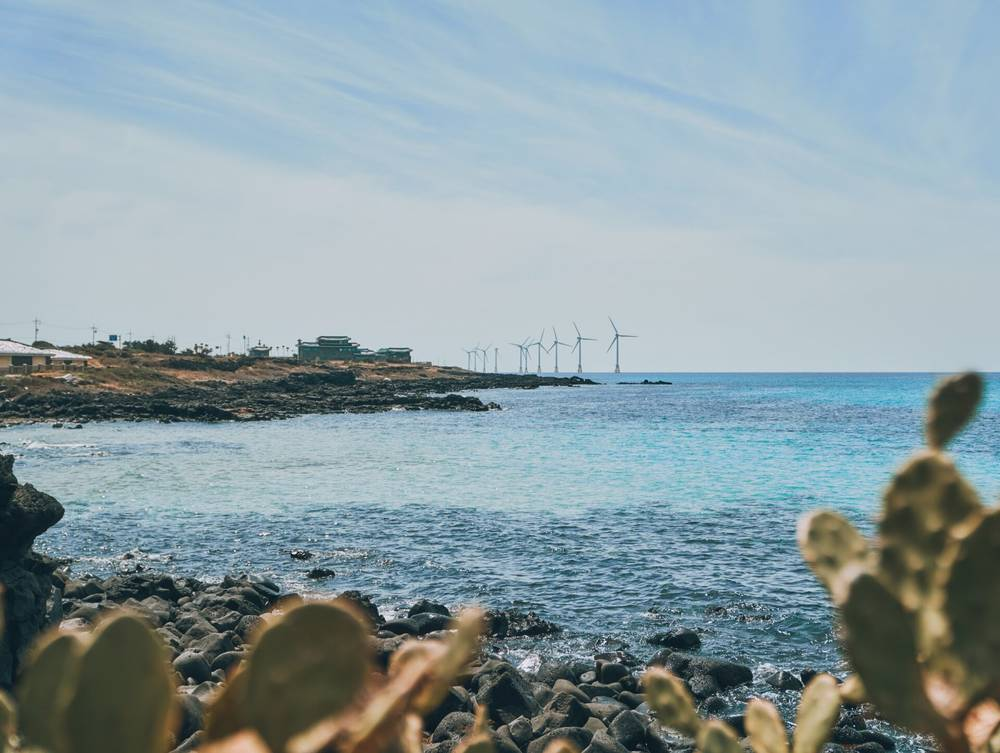
제주 햇빛소득마을 2곳 첫발…제주도, 마을 자부담 15% 가운데 약 70%를 지방소멸대응기금으로 지원 추진
내년 예산에 3억7,000만 원 반영, 2030년까지 10곳가량 목표…애월 용흥리 317.985kW는 보전지구에 막혀 용도 변경 심의 중, 남원읍 마을 495kW는 내년 8월 상업운전 계획, 30일 마감 3차 공모엔 도내 신청 없을 듯
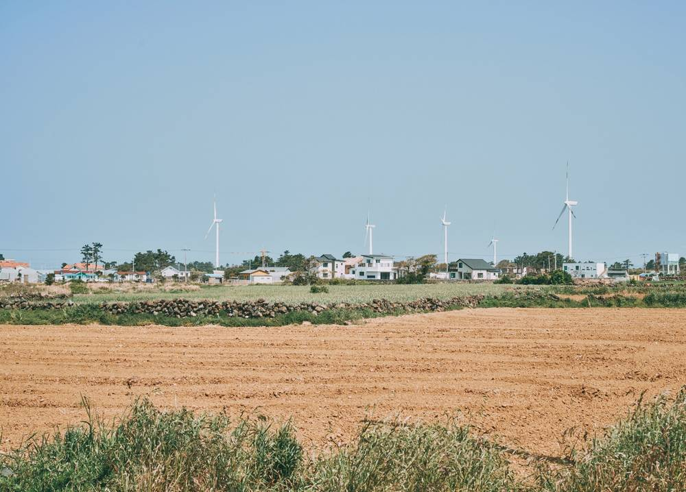
미국 미줄라 시민 기후기금, 연방 지원 끊긴 자리 메워…비영리 자재점 60kW 태양광에 모자란 8,000달러 보태
클라이밋 스마트 미줄라 '기후 촉매 기금', 개인 기부와 지역 신용협동조합 출연으로 탄소 감축 사업의 마지막 공백 채워…저소득 공공임대 12세대 열펌프 차액도 지원
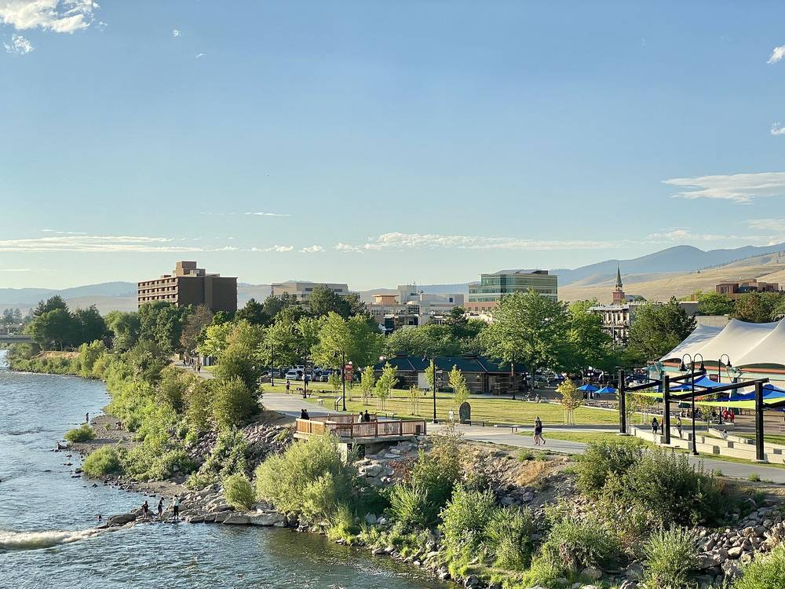
프랑스 시민 가스 협동조합 '가즈쿱', 출자 모집 일주일 만에 조합원 100여 명이 15만6,000유로
전력협동조합 에네르쿠프 사람들이 세운 협동조합형 가스 공급사…공급부터 시작해 생산 설비로 넓히고, 천연가스 혼합 여부는 조합원이 정하기로
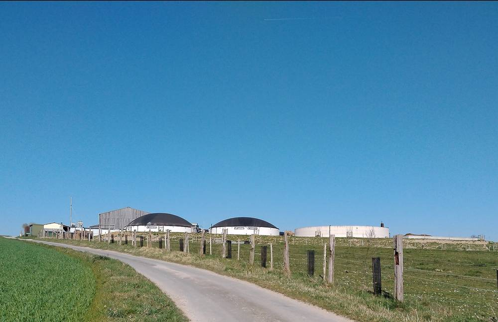
프랑스 협동조합 은행 라네프·전력협동조합 에네르쿠프, 재생에너지 예금통장 내놔…10유로부터, 이자 최대 100% 에너지 빈곤 단체에 기부
예금은 라네프 전체 대출 재원으로 들어가 지역에 뿌리내린 시민 운영 사업을 우선 지원…라네프 2025년 재생에너지 72개 사업에 3,900만 유로 대출

베를린 공영 지역난방 회사 BEW, 유럽투자은행서 5억 유로 대출 한도…"2030년 석탄 끝내고 하수 열 대형 히트펌프로"
첫 2억5,000만 유로 서명·최장 25년…KfW 대출 10억 유로에 이어 2030년까지 약 35억 유로 투자, 상수도공사 하수 열·청소공사 소각장 증기 활용

미국 입스위치 시영 전력, 집 단열·히트펌프 비용 먼저 대고 전기요금으로 10년 무이자 회수…내년 1월 'ReInvest' 시작
농무부 대출 500만 달러로 약 200가구 예상…절감액이 비용의 80% 이상 메울 공사만 지원, 이사 가면 남은 부담은 다음 거주자에게
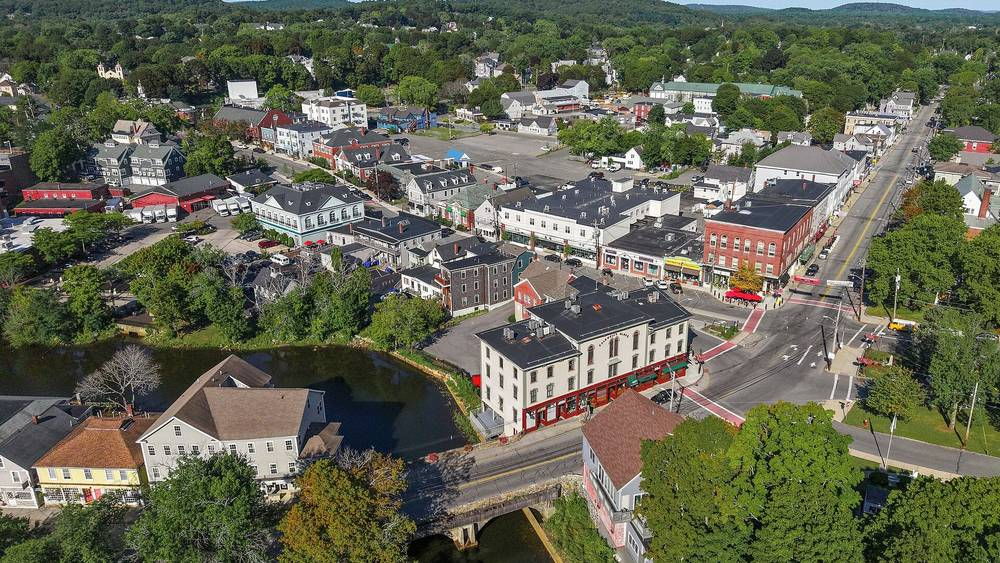
아르헨티나 산후안주, 광산 기금으로 이글레시아에 '공동체 하이브리드 태양광 단지' 입찰…태양광 10MWp·배터리 30MWh
베라데로 광산 인프라 신탁기금이 건설비 전액 부담, 첫 추정 투자액 186억 페소 넘어…주 전력규제기관이 취약계층 우선 주민 혜택 방식 정할 예정, '전국 첫 사례'는 주정부 설명
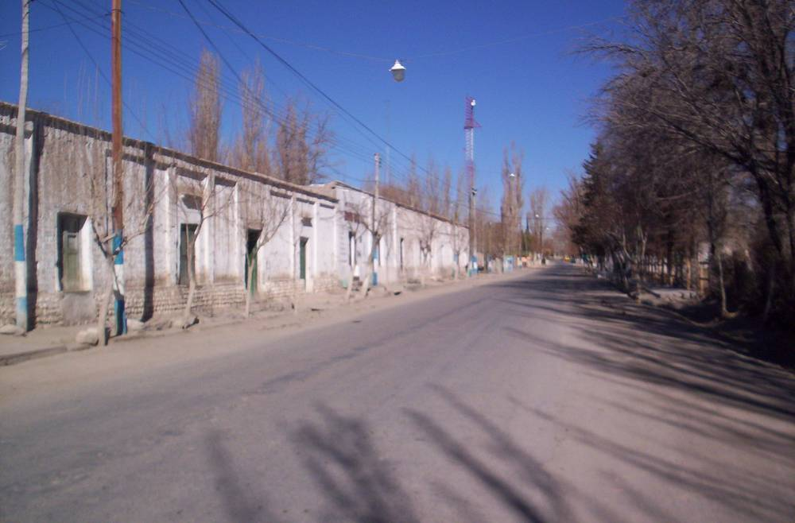
독일 튀빙겐 시영 에너지회사, 첫 시민 직접 투자 상품 내놔…트라우프비젠 태양광 단지에 500유로부터, 자사 에너지 고객 연 4%
'swt-시민투자'는 기간 7~10년 후순위 대출 방식, 그 밖 시민은 연 3.5%…첫 이자 2027년 12월 31일, 연방도로 B27 따라 1km 넘게 이어진 회사 최대 지상 태양광·배터리 단지
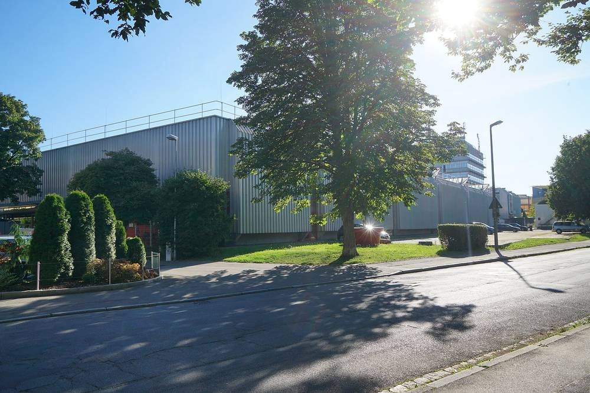
환경운동연합, 재생에너지 공공성 보고서 내고 3MW 넘는 발전 허가권 지방 이양·이익공유 지역사회 기금화 제안
주민 사전고지 최소 21일로, 주민참여 법인 경영공시 의무화…설비 약 90% 민간 소유 구조 바꾸려 발전공기업 통합 법인을 전환 주체로
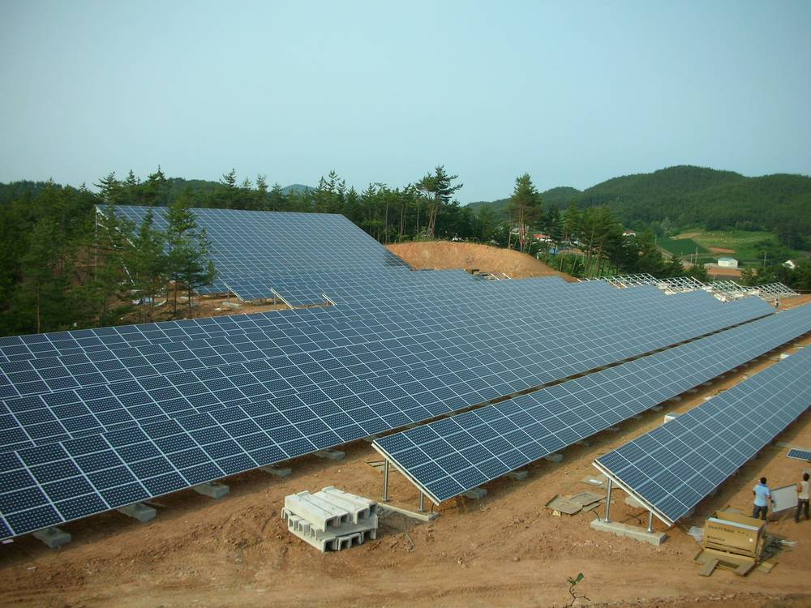
네덜란드 위트레흐트주, 공공 열 회사 'Uwarmte' 설립 추진…1,930만 유로 출자 요청, 10년간 약 1만5,000가구 연결
주 20%·배전사 자회사 40%·국영 열투자사 40% 공동 지배 구조…12월 16일 주의회 표결 앞둬, 주민 열 공동체와 "경쟁 아닌 분담" 약속
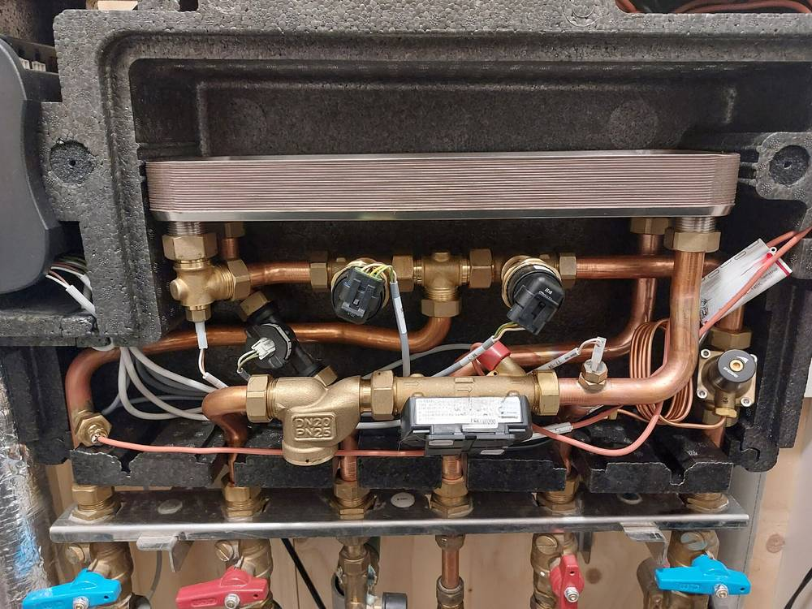
공공주도 해상풍력 전북 철회·제주 유찰 잇따라…인천 IC1 680MW 6조4,612억 원, 사업자 미정 속 재원에 '주민조합대출' 2,584억 원
서부발전 컨소시엄 부안 1GW 참여 철회, 추자 2.37GW·제주 서부 181MW 유찰…iH 자기자본 15%·일반대주단 81%·주민조합대출 4% 계획, 출자 한도는 약 1조1,875억 원
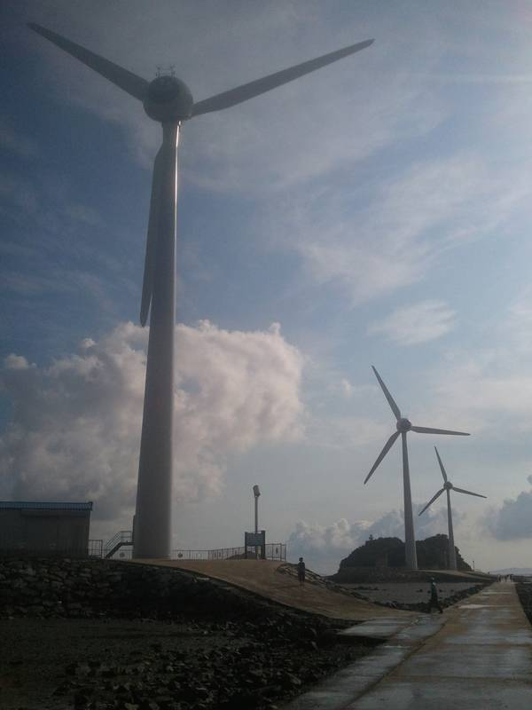
화성 농산물산지유통센터 옥상에 299kW 시민발전소…시가 지붕 내주고 시민이 출자한 'RE빛 제4호' 준공
화성시민재생에너지발전협동조합 "화성 첫 시유지 시민에너지발전소"…시장은 공공시설 옥상·주차장으로 시민참여형 태양광 확대, 조합은 장안면 석포6리 햇빛소득마을 추진
"공영주차장 태양광, 시민은 펀드 투자자 아닌 사업 주체로"…장시정 염전골햇빛발전협동조합 이사장, 인천 40MW 공공 SPC에 협동조합 참여 요구
필자 "인천시 2027년 상반기 SPC 설립 계획…설계 단계부터 시민협동조합 넣어야", 수원 동부버스 공영차고지 협동조합 발전소 본보기로…시의회·시민발전협동조합네트워크 '지원 조례' 협의 중
오산시, 공영주차장 4곳에 태양광 1,217kW 시 직접 운영 추진…판매수익 담을 기후대응기금 조례안 마련
삼미·은계·독산성동문·은빛개울공원 주차장 대상, 공공건축물로 넓힐 계획…에너지 조례 전부개정안엔 '시민참여형 에너지 사업 지원 강화' 담겨
영산강유역환경청, 상수원 마을 햇빛소득마을 2030년까지 140곳 계획 설명…마을당 500kW 설치비 7억 원 수계기금 지원
전남댐주민연합회 토론회서 2027년부터 해마다 35곳 조성 계획·2027년 정부안 245억 원 소개…땅 임대료·인허가는 마을 몫, 주민 쪽은 수계기금 여유자금 약 900억 원을 주민 소득에 쓰자고 제안
기후부, 2027년 예산 요구안에 햇빛소득마을 이차보전 29억 원·바람소득마을 26억 원 담아…송전단 ESS에는 5,724억 원 요구
재생에너지 2조6,600억 원·메가 프로젝트 1조9,000억 원을 국회에 요구…재생에너지 융자·금융지원 1조5,108억 원, 풍력보급지원사업 새로 만들어, 확정은 국회 심사 뒤
이탈리아 사르데냐 세라만나 시장, 발전소 있는 지자체에 주 재원 고정 배분하는 '에너지 생산지역 기금' 제안
영농형 태양광 준공식서 "보상 넘어 생산 이익을"…새 세금 대신 주가 이미 받는 에너지 세수 일부를 돌리자는 구상, 비옥한 농지 지키는 입지 계획도 요구
평창 운두령 21MW 풍력 업무협약 체결…600억 원 사업에 주민·군 일부 투자, 주민은 해마다 투자금의 10% 가량 이자
용평면 노동리 운두령 일대 풍력단지, 28일 풍력개발업체·평창군·주민 협약…이자 수익으로 마을 복지 꾸리는 공공주도형 사업 평창서 처음, 주민 투자 총액·참여 주민 수·투자 방식은 아직 안 나와

신한은행, 발전소 인근 주민 지분·채권 참여 자금 대는 1,700억 원 규모 주민수익공유펀드에 500억 원 투자
신한자산운용 조성, 주민이 주주·대주단으로 참여할 초기 투자금 조달 지원…금리·참여 한도·투자 대상 사업은 발표에 없어, 착공 전 개발 단계 겨냥한 3,000억 원 생산적금융펀드에도 2,000억 원
제주 한림해상풍력 인근 3개 마을, 총사업비 4.7% 투자해 배당…추자해상풍력은 '주민 1순위·도민 2순위' 투자 구상
기존 풍력은 당기순이익 17.5%를 공유화 기금으로…추자 재공모는 연 1,300억 원 고정 조건 대신 다른 방식 검토, 2.37GW 전력 육지 송전엔 해저연계선 900MW 한계
미국 켄터키 렉싱턴, 폐매립장 태양광에 '공동체 이익 협약'…저소득 가구 에너지비 지원·직업훈련 자금 의무화
시의회, 헤일리 파이크 매립장 개발사와 10월 22일 협약 승인…사업 관련 면허세 보고하게 해 수입 추적, 시는 "미국 최대 매립장 태양광" 주장
미국 캔자스 포트스콧, 시 정수장에 225kW 태양광·배터리 설치 의결…하수 기금에서 1% 이자로 빌려 짓는다
시 위원회 3 대 1 가결, 사업비 약 55만 달러 가운데 절반가량은 연방 직접지급으로 시 순부담 약 27만 달러…시공사 추산 연 3만 달러 절감·회수 약 8년, 2027년 말까지 가동해야
미국 미시간, 11월 3일 전력회사 정치자금 금지 주민투표…시민 56만 명 서명으로 올린 제안 2호
전력·가스 회사 PAC의 후보 직접 기부와 임원·이사·가족 기부까지 막는 안…찬성 측은 비싼 요금·잦은 정전이 전력회사 입김 탓, 반대 측은 표현의 자유 침해·영향력이 전국 거액 기부자로 옮겨갈 뿐

미국 오리건 유진, 대기업 부담 '클린에너지 기금' 주민투표 앞두고 찬성 72만7,000달러·반대 13만 달러 모금
주민 서명으로 투표에 오른 '메저 20-388', 대기업에 2% 부담금 매겨 기후 사업 기금 조성…반대 쪽 모금 이달 초의 5배로 늘었지만 격차 여전, '책임 없는 백지수표' 공방에 선거자금 진정까지
미국 브루클린 24세대 주택협동조합, 추가 분담금 없이 지붕 태양광…건물 통합계량 차익으로 23만2,000달러 대출 갚는다
선셋파크 '파크힐', 세대별 전력 계정 없애고 조합이 전기 한꺼번에 사서 조합원에게 소매요금 청구…재계량 수입 연 7,000달러·태양광 크레딧 연 7,000달러에 정부 지원금으로 상환, 갚은 뒤 쓰임은 이사회가 결정
미국 앤아버 시영 전력 투표 앞두고 자금 격차…주민단체 누적 현금 약 6만 달러, DTE 지원 반대 단체는 누적 지출 170만 달러 넘어
7월 21일~10월 18일 보고 기간 찬성 단체 주민 소액 기부로 2만7,000달러 넘게 모아…반대 단체는 같은 기간 현금 4만 달러에 DTE 현물 7만9,000달러 넘게 받고 투자자 소유 전력회사 단체도 가세, 투표는 11월 3일

스페인 시민단체, 해·바람 전기 수익으로 연금·공공주택 대는 '세대 에너지 기금' 제안…11월 29일 총선 앞두고 정당에 전달
HOPE 등 '임풀소 레헤네라티보', 노르웨이 석유 연금기금 본뜨되 국내 실물자산 갖는 영구 기금으로…재생에너지 사업 세금 일부는 면에 남기고 단지마다 면 단위 에너지공동체, 2040년 에너지 주권 목표
아일랜드 농촌부 장관, 재생에너지 지역이익기금 더 키워야…지금은 발전량 MWh당 2유로를 15년간 의무 출연
정부 새 농촌 발전 전략 발표 자리서 캘러리 장관이 운영사 출연금 인상 바란다고 밝혀, 인상 폭·시기는 안 내놔…마틴 총리는 5년간 전력망 180억 유로 투자로 농촌에 어려운 결정 온다고 말해
캐나다 최장수 영화관 패트리샤 극장 지붕에 24kW 시민소유 태양광…주민 최소 500달러 출자로 공동소유자 모집
BC주 카텟 지역 극장은 지붕만 내주고 전기를 사 써…솔셰어가 사업 맡고 노동자협동조합 VREC 솔라가 시공, 지역 주민 먼저 모집한 뒤 BC주 주민으로 넓혀 11월 4일 마감
반도체 도시 용인, 재생에너지 발전 2022년 소비량의 0.8%…1호 시민참여 햇빛발전소는 18억 원 중 9억1,000만 원 협동조합 출자
경기 31개 시·군 중 온실가스 배출 4위·신재생 발전량 27위, 1차 에너지계획 이행률 27.6%…공공시설 4곳 1,000kW급 주민참여형 태양광 설치 중, 조합원 200여 명 시민 햇빛협동조합도 창립
천주교 교구 에너지 전환 제각각…대전교구 신자 출자 햇빛협동조합, 조합원 2,982명·성당 발전소 42기 3,250kW
15개 교구 질의 결과 수원교구 자가발전은 목표 22MW의 약 12%, 대전교구는 탄소중립 본당 인증제 운영…교구별 실적을 같은 기준으로 모으는 한국교회 공통 집계 체계는 확인 안 돼
이탈리아 이브레아 125년 에너지협동조합 Aeg, 가스 배관망 이탈가스에 넘기고 매각 대금 전부 카나베세 지역에 재투자하기로
조합원 약 2만 명, 지난 2년 요금 환급으로 100만 유로 돌려줘…광역 입찰 제도로 배관망 운영 접고 재생에너지·사회 사업 담은 산업계획 마련 중, 매각 금액은 비공개
영국 웨일스 랜이드로스 주민 에너지 클럽, 정부 기금 94만1,280파운드 받아 사회적 가상발전소 넓힌다…10가구 더 무상 태양광·배터리
고등학교·주민센터·청소년클럽에 재생에너지 설비…웨일스 정부, 참여 가구 전기요금 연평균 368파운드 절감 추산, 공동체 기금으로 해마다 약 1만4,000파운드 예상
미국 뉴멕시코 라스크루시스 공립학교, 주 기금 350만 달러로 학교 4곳 주차장에 태양광…콘리 초교 226kW
주 재정청 '지역 태양광 접근 기금'에서 초교 3곳 100만 달러씩·고교 50만 달러 승인…교체 앞둔 지붕 대신 주차장 차양 택해, 유지관리는 교육청 몫
루마니아 탄광지대 고르지·돌지 군, 에너지공동체에 EU 기금 98% 무상 지원 공모…시민·아파트 주민회도 직접 신청
고르지 4,157만6,941유로·돌지 352만9,411유로 배정, 신청은 2027년 3월 31일까지…그린피스 루마니아, 40가구 아파트 한 동이면 자부담 8,000유로 예시 들며 11월 주민 워크숍

영국 셰필드시, 시영주택 최대 5,257채 지붕 빌려줘 태양광·배터리 설치 추진…212채는 기후투자채권 등 167만 파운드로
2030년 4월까지 모든 시영주택 에너지등급 C 이상 의무…외부 기업이 투자하는 '서비스형 에너지' 방식, 세입자 연락관 두고 추운 집부터
스코틀랜드 니어트나가오이스 해상풍력 공동체기금, 동래머뮤어 주민단체 3곳에 11만 파운드 넘게…주택 단열에 4만5,000파운드
주민 심사단이 주민이 만든 '지역 장소 계획' 목표에 맞춰 배분…이번 회차는 가구 에너지효율과 생물다양성에 집중
보성농협 조합장, 영농형 태양광 걸림돌로 담보 대출·고령 주민 자부담 꼽아…농협이 자부담 맡는 방식 언급
농협이 7년 전 설치한 벼농사 영농형 태양광 현장…선로 확보·햇빛마을 금융지원·규제 개선이 과제로
새만금희망태양광 99MW, 주민참여 두 갈래 검토했지만 전북도민 펀드는 금감원 지역 제한 지적에 막혀
총사업비 1,575억 원, 2021년 12월 상업운전…반경 1km 주민 약 63억 원 규모 주민법인 투자 추진, 회사는 연 6억6,100만 원 지역 기부·전북 중고생 장학금 설명
루마니아 탄광 도시 루페니 시, EU 기금으로 1MW 태양광 발전소 완공…지우 계곡 첫 태양광, 연말 계통 연결 예정
사업비 약 400만 레이 전액 EU 기금, 연결 공사비 65만 레이 이상은 시 예산…시장은 가로등·청사 전기요금 매달 20만 레이 넘게 아낄 것이라 밝혀, 저장 배터리·두 번째 1MW 발전소도 추진
벨기에 브뤼헤시, 지자체 공동 에너지회사 통해 제브뤼헤항 풍력 8기에 최대 약 767만 유로 출자 추진…26일 시의회 표결
사업회사 포르트피네코가 모으는 1,533만5,000유로 가운데 절반은 제피어, 절반은 항만공사 몫…브뤼헤 몫은 최소 약 308만 유로, 시는 추가 배당 기대하고 다년도 재정계획엔 부담 없다고 설명
내년 RPS 대신할 재생에너지 새 계약시장, 해상풍력 투자·주민참여 사업 수익성 쟁점…REC 가중치 역할 이어받을지가 관건
정부가 발전원별 물량·상한가격 제시 뒤 경쟁입찰·한전 장기 고정가격 계약…해상풍력 단가 kWh당 330원대에서 2035년 150원 이하 목표, 업계는 먼바다 비용 반영 요구
수원도시공사의 시민햇빛발전 특수목적법인 출자 동의안, 시의회 상임위 통과…28일 본회의 의결 예정
환경안전위 22일 원안가결, 출자 금액·지분율은 공개 안 돼…수원시는 4월 협약 때 공영주차장·공공 유휴부지 20MW 이상 태양광과 시민 투자자 우선 배당 방식 제시
독일 크레펠트 에너지협동조합, 더 많은 시민 참여 위해 출자 1좌 가격 절반으로 내린다
2018년 설립, 조합원 120명 출자로 지붕 태양광 5곳 운영…옛 벨벳 공장 14kWp에서 노인요양시설 80kWp까지
오스트리아 부르겐란트 주 에너지회사, 풍력·태양광 들어선 31개 마을 주민에게 500유로부터 출자 문 열어…연 3% 고정 5년
부르겐란트 에너지 주민 참여 2026, 500·2,500·5,000유로 세 묶음에 만기 때 원금 100% 상환…발전량과 무관한 고정 이자형, 야당은 나머지 140개 마을 배제 비판
호주 빅토리아주 셀비 주민센터, 태양광·배터리 갖춘 '회복력 거점'으로…배전회사·지역 공동체 은행 6만 호주달러 지원
정전 때도 건물 스스로 전기 쓰는 설비, 내년 초 가동 목표…건물 손상으로 10개월 문 닫았던 센터는 다시 열어
영국 웨일스 케어필리 '광부센터', 지역에너지 기금 Ynni Cymru에서 31만2,000파운드 받아 태양광·전기차 충전기 단다
겨울 난방비 세 배·폭염 땐 방 20개 중 2개만 쉼터로…웨일스 정부 이번 차수 24개 사업에 827만 파운드, 2023년 이후 누적 3,100만 파운드
독일 니스테탈 시민에너지협동조합 DEiN, 조합원 303명에 5% 배당…풍력단지 증설에 42만 유로 출자
2025년 순이익 9만9,207유로·대차대조표 268만 유로로 최고…태양광 10기 운영하며 풍력단지 3곳 지분 보유, 출자는 1인당 연 20좌로 제한
영산강유역환경청, 상수원관리지역 햇빛소득마을 9곳 등 6개 시군 11개 사업에 수계기금 92억 원 지원
2027년 새로 도입하는 재생에너지 특별지원사업…햇빛소득마을 73억 원·가구와 마을 공동시설 히트펌프 19억 원, 공모 예산 264억 원 중 남은 몫은 연내 추가 공모
캐나다 토론토 바이오가스 협동조합 ZooShare, 시민 공동체 채권으로 400만 달러 넘게 모아
동물원 분뇨와 안 팔린 식료품으로 전기 생산…첫 모집 220만 달러에 약 300명 참여, 조합원 약 800명이 1인 1표로 운영
김병준 한국폴리텍대학 학과장, 멈춘 울산 해상풍력에 발전수익 공유·지역기금을 사업 설계 단계부터 넣자고 주장
기고에서 초기 투자비·금리·인허가·전력망·주민수용성이 얽힌 좌초 원인 짚어…지자체·발전사업자·지역기업·대학·주민이 함께하는 상설 추진기구 제안
미국 벨빌시, 버려진 묘지 땅 공동체 태양광 임대계약 해지 나서…투자자 빠져 사업 무산
1달러에 사들인 마운트호프 묘지 옆 숲 약 20에이커 베어 태양광 지으려다 주민 소송…계통 보강 대금 160만 달러 납부 이틀 전 주 투자자 이탈
캐나다 토론토 동물원 옆 바이오가스 협동조합, 시민 채권으로 400만 달러 넘게 모아 발전소 운영
조쉐어 협동조합 첫 모집 220만 캐나다달러에 약 300명 참여…조합원 약 800명·1인 1표, 연 약 1만5,000t 음식물·분뇨로 약 250가구분 전력
곡성군, SK이터닉스·유선기업과 육상풍력·태양광 협약…군민펀드 도입 검토
기업은 사업 개발·입지, 군은 행정 지원 맡기로…발전용량·사업비·부지·수익 배분 방식은 아직 정해지지 않아
미국 포틀랜드, 옛 매립지에 저소득 140가구 위한 공동체 태양광…시 청정에너지기금으로 추진
82번가 부지에 태양광 어레이 7개, 가구당 연 약 300달러 절감 추산…내년 2월 완공 예정, 가입 자리 130곳 모집
김해시, 공영주차장 14곳·정수장에 태양광…발전 수익 재투자하는 재정 순환 구조 만든다
2028년까지 공영주차장 2,700kW 설치, 7곳은 직영·7곳은 민간 임대…삼계정수장 500kW는 12월 준공 목표
셰틀랜드 바이킹 풍력 공동체기금, 지난 회계연도 76개 사업에 214만 파운드 지원
80만 파운드 이상은 주택 에너지효율 개선 등 생활비 경감에…2024년 9월 출범 뒤 누적 380만 파운드 넘어
발전 5사 통합 특별법 국회 심사 본격화…한전 자회사냐 정부 직접 출자냐
최기상안은 한전 100% 자회사 한국발전, 다른 의원안은 정부 전액·51% 이상 출자…정부는 2027년 10월 출범 목표

도서관 지붕 30kW로 시작한 안산시민햇빛발전협동조합, 13년 만에 조합원 2,400명·출자금 130억 원
공공건물 지붕·주차장 빌려 발전소 60곳 준공…신협 상생협력대출로 담보 없이 건설자금 마련, 수백 건 거래에 연체 0건
신안 주민참여 태양광, 가입비 1만 원에 수백만 원 배당…주민 실투자 비중은 낮아
안좌도·자라도 120MW, 주민 몫 140억 원은 협동조합 대출로…거리 따라 1인 연 68만~204만 원
金融
江原道の境界地域4郡「軍の遊休地・日差し・水でエネルギー連帯を」…営農型太陽光の郡民ファンド、発電収益を基本所得に
鉄原・華川・楊口・麟蹄の政策フォーラム…「鉄原の農地の6割は外部所有、発電収益が外へ流出」、鉄原の太陽光と華川の揚水発電を結ぶ「境界地域エネルギー協力圏」構想
南オーストラリアの集合住宅住民にも「共同太陽光・蓄電池」…連邦・州政府が1,780万豪ドル支援、設置費の半額補助と残りは無利子融資
「StrataCharge」事業、1物件あたり補助金・融資それぞれ最大4万7,500豪ドル…所有者も賃借人も電気料金を節約、南オーストラリアでは12人に1人が区分所有建物に居住
海外の化石燃料に37兆ウォン融資の韓国、国際気候資金は7兆7,600億ウォン…緑色連合「拠出実績は世界最下位圏」
2018～2022年の化石燃料金融は気候資金の4.8倍…損失と損害基金は30.7%、緑の気候基金は23.3%のみ拠出
蔚山375MW浮体式洋上風力「イーストブルーパワー」、東西発電・オーシャンウィンズ・錦陽グリーンパワーが技術・金融協力を点検
12日に技術交流会・経営陣懇談会…ポルトガル・フランスの運営経験を共有、国内企業の参加や保守人材の育成も議論
済州のイ・チャンフム初代気候経済副知事「風と日差しの利益を道民の所得に」…住民参加型事業を道民ファンドへ拡大
2035年炭素中立目標、約2GWの楸子洋上風力を最優先…新規発電事業に住民が債券・ファンドで投資、共有化基金は脆弱層・共同体の財源に
蔚山の750MW浮体式洋上風力「文武バラム」の親会社、25日に清算可否の株主総会…資金確保がカギ
スウェーデンのヘキシコン、取締役会は存続を提案も「運転資金調達に重大な不確実性」と明記…監査人は意見を表明せず
独バイエルン州イーゼンの市民風力協同組合、組合員470人・出資金80万ユーロ…「着工は数年後、今は準備段階」
「市民エネルギー・イーゼンタール」が経験共有イベント…住民所有の風車7基を運営するフクスタールの元村長「お金が村に残る」
「水原ひだまり発電」の青写真…公営駐車場13カ所5MWから20MW・328億ウォン、公共の配当は気候対応基金に
水原市・水原都市公社・エネルギー協同組合が参加、市民ファンドで利益分配…16日に市議会で設立説明会
カナダ・カルガリーの電気・ガス小売会社、利益の100％を地域の性的少数者団体へ…「料金が共同体の基金に」
社会的企業Q-TILITIES、代表は無給で5年以内に10万ドル以上の還元目標
ドイツの組合員4万2,000人のエネルギー協同組合プロコンに通信会社も出資…1,266口・6万3,300ユーロ、「配当も再出資」
アミバ運営のSTROTH Telecomが組合員に…「持分数に関係なく1人1票の民主的な仕組みにひかれた」
江原道が108億ウォンを現物出資した大関嶺風力団地、年間純利益3億ウォンにとどまる…道議会の監査で「経済性と住民被害を改めて検証せよ」
江原開発公社が運営する団地の予想売上は21億ウォン…維持補修費や人件費が上がれば収益はさらに減る恐れ、騒音・低周波・シャドーフリッカーなど社会的費用も指摘
雪国・長岡で市民65人が「市民共同発電所」…出資金で屋根や農地の上に太陽光、収益は出資者へ
2023年設立の一般社団法人「ながおか自然エネルギー」、学校への出前授業や小水力体験も…「年間日射量は関東の約8割」
スコットランドの送電会社による500万ポンドの「ネットゼロ基金」、住民主導の26事業の支援を完了…「1ポンドで社会的価値2.85ポンド」
SPエナジー・ネットワークスの基金、中部・南部のコミュニティ建物の断熱・低炭素暖房・環境配慮型交通を支援…ワークショップ32回に450人超、22団体に専門助言、CO2を2万5,000トン以上削減
公共が先導する済州・羅州のエネルギー転換…風力共有化基金・羅州型太陽光年金で利益を分け合うも電力網の飽和が課題
済州エネルギー公社が風力59.53MWを運営・翰林洋上風力では住民1,009人が1人年351万ウォン…羅州では許可を得ても建てられない太陽光約2,700カ所
スコットランドのSSENトランスミッション、送電設備近くの住民に162万ポンドの地域基金の設計について意見を求める
レアーグ・ロガート住民対象のアンケートは11月16日〜12月14日、説明会3回…「サウス・ロッホ・シン地域基金」は2027年開始予定
英ナショナル・グリッド、ブライス変電所の増設地域に最大106万ポンドのコミュニティー基金…使い道は住民の意見を聞いて決める
データセンターとバーウィック・バンク洋上風力をつなぐ変電所の第1・2段階に53万ポンドずつ、12月6日まで4週間の意見募集…基金は来年夏に始動
龍仁市政研究院「半導体のRE100需要を市民の所得に」…市民投資・住民参加・公共資産太陽光を盛り込んだ利益共有モデルを提案
イシューリポート「YRI Insight 119号」…発電収益の共有、施工・保守への住民参加、政策金融と市民投資の連携、隣接市郡との広域協力など5つの方策
韓国の信用協同組合「信協」、市民太陽光から洋上風力・「日差し所得村」まで再エネ金融を拡大…村の発電施設資金を最大85％融資
安山市民太陽光発電協同組合の発電所60カ所建設を支えた経験を生かし、高敞洋上風力に1,000億ウォンの連携融資、エネルギー公団の利子補給で村の負担軽減
豪研究者「再エネの地域便益は一時的な支援でなく長く残る遺産に」…地域基金は2030年に2億1,300万豪ドルの見通し
シドニー工科大学の分析「地元雇用の効果はまだはっきりしない」…先住民への持ち分・収益5％共有の入札枠、地元研修、営農型太陽光の計画上の位置づけを提案
佐賀市、市が52％出資する地域新電力を設立…清掃工場の電気を公共施設113カ所へ直接販売
資本金5,000万円のうち市が2,600万円・民間6社が400万円ずつ…年約1万6,000MWhを販売、市外に流れていた電気料金を地域に残す
チェコの風力の村3カ所「騒音・健康の懸念は現実にならず」…収益は投資家と結んだ条件次第、ごみ手数料を廃止した村と一度きりで終わった村
グルナは2006年から4基・ヴェジュニツェは2009年から2基・アネンスカー・ストゥダーンカは6基、住民の苦情なし…景観への反対は残り、3村とも「着工前の住民との対話と投資家選びが最も重要」
平昌・雲頭嶺風力、600億ウォンの事業に住民30億・郡18億ウォンを出資…住民は年4億～5億ウォンの収益で7年で元本回収見込み
4.2MW×5基の21MW、太白・加徳山方式の「住民主導型」業務協約…郡は2029年の稼働から年3億ウォンの収益、10年以内に年200億ウォンのベーシックインカム財源を目標
豪サファイア風力発電所の地域基金、インヴェレル地域の15事業に約14万2,000豪ドル…救助隊の装備や学校の遊び場を支援
申請23件のうち15件を選定、最大の2万豪ドルはバッテリー式救助装備に…次回の申請は2027年1月11日から
スコットランド・ベリーバーン風力の地域基金、住民団体など17件に8万7,814ポンド…村の庭園の太陽光やボランティア車両を支援
29基の風力発電所の運営会社が毎年物価連動で26万6,187ポンドを拠出、地域住民11人が審査…今回で38回目の配分
アプリで集めた個人投資家2万2,000人、工場屋根の太陽光7,000カ所に4,000億ウォン超を投資
エイチエナジー「モヘッ」、投資金で協同組合を設立し工場屋根に発電所…企業は安い電気、投資家は売電収益の配当
スコットランド・アーガイル＆キンタイア送電線地域基金が初の支援…9団体に59万2,770.85ポンド、住民代表6人が審査
送電会社SSENの320万ポンド基金、村のホール・青少年施設・低炭素暖房などに配分
華城市民出資の「RE光 第4号市民エネルギー発電所」が竣工…農産物産地流通センター屋上に299kW
華城市民再生エネルギー発電協同組合が主管、市長・道議会議員・組合員ら約120人が出席
市民と社会連帯経済の組織が共同出資する「価値金融信協」設立へ…11日に国会でフォーラム
社会住宅・医療介護・再生可能エネルギーに資金を供給する構想…国会議員5人が共催、行政安全部・信協中央会が後援
梁山・院洞面のテリ・ソンリ・チャンソン村、洛東江水系基金で太陽光所得村を推進…行政安全部の公募申請が残る
洛東江水系管理委員会「2027年再生可能エネルギー特別支援事業」の対象に…設備はテリ360kW・ソンリ999.45kW・チャンソン998.46kW、住民同意率90%・72.9%・71%、来年度の支援予定額20億2,700万ウォン
麗水のチェ・ドンイク議員「太陽光所得村育成基金2兆ウォンを造成しよう」…市議会5分発言で提案
4年間毎年5,000億ウォン、住民の初期自己資本と長期低利融資に充て、返済金は別の村に再貸付
イタリアのエネルギー協同組合ènostra、2029年までに自前の発電を3倍・組合員2万8,000人目標…新規発電投資450万ユーロは組合員の出資で
10月末の組合員向けウェビナーで2026~2029年戦略計画を発表…顧客への供給電力は約60GWh→100GWh、出所を追跡できる電力の比率は20%→40%、「社会的企業」への転換も検討
スコットランドのホワイトロー・ブレー陸上風力、地域に共同体利益基金年28万5,000ポンドと住民の持ち分購入機会を約束…年内に系統接続
Thrive RenewablesとTopCashbackの合弁会社が所有、年最大14万9,400MWhの発電見込み…差額決済契約第7回入札で落札後にSmartestEnergyと電力購入契約、持ち分の規模・時期はまだ示されず
福岡県古賀市、地元企業・銀行など16者で出資した地域エネルギー会社「コガネイロ」を設立
5月25日設立・7月23日に記念式典、資本金990万円…電力取次・太陽光PPA・脱炭素支援プラットフォームの運営を担い、社長は市内のエネルギー支出年約150億円の一部でも地域に還元したいと表明
ルーマニア・ガラツィ県、公正な移行基金770万ユーロで再生可能エネルギー共同体を公募…県議会が市町村の共同事業を主導
太陽光・太陽熱・ヒートポンプ・蓄電・系統接続を支援、85%はEUの公正な移行基金・15%は国家予算…脆弱世帯を優先、2027年3月31日まで申請受付
モルドバ議会、エネルギー共同体法を第2読会で可決…住民・自治体・マンション所有者協会が参加する非営利団体、利益の配当を禁じ再投資へ
会員の自治体は所有する不動産やエネルギーインフラを共同体に使わせることが可能に…官報掲載の1か月後に施行、既存の共同体は24か月以内に新規定へ再編
フランス・サン＝ルイ市、サン＝シャルル教会の屋根を20年間市民太陽光協同組合に提供…約35kWcの設備に市民出資1万5,000～1万7,000ユーロを募集
年3万5,000kWhで13世帯分の消費量、総事業費5万5,000～6万ユーロ…2027年下半期の稼働目標、市長「市の施設がこの電気を使うことに関心」
全南光州市議会、大統領直属の基本社会委員会と懇談会…新安の太陽光年金の全域拡大・共有富基金の造成を議論
日差し・風を生かしたエネルギー基本所得、AI時代の共有富配当・国富ファンドも取り上げ…ソン・ヒョンゴン議長は条例制定・基金造成など自治立法の推進を表明、具体案はまだ
3兆5,000億ウォン規模の莞島・張保皐洋上風力、全南開発公社の出資金不足で公共持ち分縮小の懸念
全南光州市議会の行政監査で、出資可能財源約1,300億ウォンのうち約1,000億ウォンが必要と指摘…議員試算の住民収益は莞島で年267億・新安で216億ウォン、執行部は出資要請を受けていないと答弁
フランス・アルザスの「三国国境」住民4人、市民エネルギーの会EC3Fを結成…1株108ユーロの出資で屋根置き太陽光の共同所有めざす
2022年のサン＝ルイ広域連合の説明会で出会い2023年末に独立、市民協同組合「エネルジー・パルタジェ・アン・アルザス」の地域グループとして活動…月1回集まり太陽光を載せる屋根を探し、集団自家消費事業を準備
ポーランド・オドラヌフなど3自治体のエネルギークラスター、公的資金3,000万ズウォティで住民の太陽光627カ所…住民負担は設置費の10%
2027年6月までに蓄電設備も併設、市長「クラスター全体では1,500カ所近く」…3自治体は住民に再エネ設備を見せる「エネルギーアカデミー」も計画
英ウェールズ・ポートタルボット、ナショナル・グリッドの変電所2か所に伴う地域基金106万ポンド…使い道を住民アンケートで決める
タタ・スチール製鉄所の電炉に電力を送る「マーガム接続」事業に付随する補償的な基金、政府指針「変電所1か所当たり53万ポンド」と同水準…燃料費支援など6つの候補を示し11月26日まで意見募集、支給方法や審査主体は未定
米国11月3日の地域エネルギー住民投票、最初の集計…キトサップの公営電力・ツーソンの民間電力会社の営業権は反対優勢、ユージーンの大企業負担クリーンエネルギー基金は賛成が先行
キトサップ「提案1号」は反対約60.5%、民間電力会社240万ドル対賛成側約9,000ドル…ツーソン「提案421」は初期開票で反対53.3%、TEPの430万ドルの運動が劣勢に、ユージーン「メジャー20-388」は賛成約58%で発議側が勝利宣言、アナーバーの市営電力案は非公式集計で反対51.83%となり否決
韓国の祖国革新党、超広域特区法案を党論として発議…再生可能エネルギー事業では総事業費の4%以上を住民に投資機会として優先提供
住民・労働者が参加する相生協議会、送配電の共同接続設備への国の支援を盛り込み、週52時間制の例外や持株会社規制の緩和は除外…規制特例には5年の有効期間、発議段階
ニュージーランド・アシュバートン地区議会、上がる電気料金で太陽光を検討…年40万ドル節約に500万ドル超の先行投資で議員の意見割れる
年間電気代は約177万ドル、来週からの長期計画予算審議で部署ごとの太陽光案を検討…「その金は道路に回すべきか」対「建物の屋根に少しずつ」
スコットランドSSEN、スカイ送電線増強地域に546万ポンドの基金…申請は来年2月10日まで
初年度は最大180万ポンド、申請1件当たり最大10万ポンド…住宅・コミュニティ資産など5分野を優先審査
イタリア・ポンペイアーナ市、学校・市役所・公営駐車場の太陽光と再生可能エネルギー共同体（CER）を一括した民間投資入札…工事費65万7,099ユーロ、21年契約
コンセッション全体の推定価値141万1,638ユーロ、市が事業者に毎年2万9,585ユーロを支払う仕組み…応札は11月27日締め切り・30日開札、提案者の優先権はEU判決を受けて廃止
龍仁市政研究院「再生エネルギーの恩恵は市民に」…市民投資・住民の雇用・公共資産の太陽光を盛り込んだ「龍仁型利益共有モデル」を提案
イシューレポート「YRI Insight 119号」…半導体産業団地の電力設備は約15GWの見通し、市民協同組合・ファンドによる投資、送電網の影響を受ける住民への優先出資権を検討、公営駐車場51カ所のうち17カ所で太陽光計画提出
同じダムの水上太陽光、陜川は住民1,400人余りの投資で稼働し龍潭は止まった…羅州湖9年の対立に照らした「住民の意見を聞く順序」
陜川ダムは郡と共に25人の住民協議体をつくり説明会・公聴会を10回余り（水資源公社資料）、龍潭ダムは事業者主導の説明会への反発の末に中断を通知…羅州湖は許可申請の後にようやく意見照会、農漁村公社・事業者・羅州市の回答はまだ
福井・美浜町、湖畔施設の屋根の太陽光で充電する「電池推進遊覧船」の乗船者が5万人超…赤字で出資法人撤退後は町が直営
2023年4月開業の三方五湖ネイチャークルーズ、レイクセンター屋根の太陽光→蓄電池→船へ給電…2025年1月から町直営に、旅行会社への営業やSNS発信を強化
フランス・プルイジの風力発電所、2009年に住民10人が3基のうち1基に出資…17年後「ほかの投資よりリスクが低い」
1人1株・1株200ユーロ、株主当座勘定の利息は年8%から…サン・ブリユー地域エネルギー気候庁、出資住民の経験を伝える見学会
エディンバラのコミュニティ太陽光協同組合、113万ポンドの市民出資を募集…25ポンドから、公共・コミュニティ施設10カ所に設置
ロイヤル・コモンウェルス・プールや学校5校を含み、予想年利回り5%…2015年の発足以来30カ所に設置・組合員は700人近く、コミュニティ基金で10万ポンド超を分配
全北開発公社、再生可能エネルギー事業拡大へ「エネルギー本部」新設・2029年までに資本金926億ウォン出資を推進…道議会常任委「説明不足」で上程見送り
エネルギー事業処を本部に格上げし定員103人→151人、2027年300億・2028年300億・2029年326億ウォンの段階出資構想…構想どおりなら授権資本金2,500億ウォンの上限まで、12月の臨時会に再上程の方針
政府の「住民参加優良事例」翰林洋上風力、住民分のREC収益から住民社債の利息を先に差し引く…法律事務所3社が「法違反」との諮問意見
住民法人3社が購入した社債300億ウォンの年7%の利息を、加重値0.3の追加REC収益で賄い、残りだけを「利益共有」として支給…エネルギー公団「手続き中」、気候部「問題が確認されれば改善」、事業者「住民と約定、当局と協議中」
崔東益・全南光州統合特別市議員、統合財政支援で2兆ウォンの太陽光所得村育成基金を提案
5分間自由発言で毎年5,000億ウォンずつ4年間積み立て、村の自己資本と長期低利融資を支援し、返済金は別の村に再び貸し出す仕組みを提示…融資依存が住民所得を削ると指摘、執行部の答弁はまだない
フランス・ランド県サン＝ポール＝レ＝ダックス、旧廃棄物置き場に4.57MWcの市民太陽光…住民投資組織CIER40を別に設立
コミューンやエネルコープ・ヌーヴェル＝アキテーヌなどが事業会社に参加し、融資・公的資本・市民参加を組み合わせて400万ユーロ超を投資…ランド県は太陽光1,413MWでフランスの県で首位だが、エネルギー消費の削減は4.2%にとどまる
舒川郡議会、農漁村基本所得の支援・基金条例を議決…基金の使途に「住民収益型再生可能エネルギー事業」を盛り込む
議員提出の条例2件を原案可決、基本所得は地域通貨で支給し、基金は2031年末まで一般会計繰入金・運用収益・寄付金で運営…支給額・対象規模・支給開始日はまだ決まっていない
ルーマニア・オクナ・ムレシュ市、市営太陽光で年590MWhを発電し市の消費444MWhを上回るも電気代は相殺しきれず…EU近代化基金に1.72MWhの蓄電設備事業を申請
昼はkWh当たり0.40～0.65レイで送電し、夜は1～1.30レイで買う価格差が原因…約50万ユーロの事業は実質全額の無償支援を見込み、市長は満充電なら街灯を一晩以上点灯できると説明
独ツィーメッツハウゼンの風車14基、投資会社は「30年で最大2,300万ユーロ」と試算…町長は反対、世帯あたりの電気割引は年45ユーロ
稼働後15年間は営業税がほぼなく、土地賃料は私有地の所有者へ…法定の自治体分担金年約28万2,000ユーロは町が納める郡分担金240万ユーロの10分の1余り
独バイエルン州エーゲンホーフェンの住民、ミュンヘン市営電力会社が建設中の7.2MW風車に協同組合の「固定金利ローン」で参加へ
隣町の市民エネルギー協同組合「マイザッハー・ラント」、5月の総会で活動地域を広げエーゲンホーフェン住民を優先募集…初の説明会に40人余り、風車は年末年始ごろ稼働予定
フランス・ナントの競技場駐車場にソーラーシェード6基…自治体の会社が3基、市民出資会社が3基を分担
ラ・ボージョワール駐車場のパネル4,500㎡・年1.1GWhと推計、直径2kmの円内の企業へ固定料金での販売を目指す…市民株主150人、7市町の公営駐車場9カ所に拡大へ
アルゼンチン・ブエノスアイレス州、電力協同組合が組合員向け再生可能エネルギーを自ら発電できる「法15.665」施行…州立銀行の長期低利融資に道
市から配電事業権を得た協同組合・混合経済会社に「共同体自家発電者」の地位…発電した電気は配電公共サービスとみなし複数組合の共同発電も容認、余剰電力の販売には株式会社形態が必要
住民60人余りのベルギー・オメゼ村、協同組合が700mの木質チップ熱導管網を計画…1口250ユーロで市民出資を募集
「エネルジー・ポジティブ・オメゼ」、近隣の森の木材残渣で住宅10戸余り・特別支援学校・青少年施設・教会を暖房する計画…許可を前に事業費の一部はまだ未調達、熱導管網につながらない人も組合員に
水原で「ひだまり冷蔵庫」研究セミナー…「市民太陽光の収益をコミュニティ冷蔵庫43カ所の食の分かち合いに」、「ひだまり食料連帯基金」を提案
水原持続可能発展協議会が30日にセミナー、電気代・修理費を公募事業や寄付に頼るコミュニティ冷蔵庫と市民出資の発電所をつなぐ案を議論…エネルギー協同組合・市民太陽光社会的協同組合・水原市未来エネルギーチーム長が討論、運営協議体・小規模モデル事業は今後の課題
霊岩郡議会「ひだまり所得村、収益を分ける前に自己負担・ローン返済の基準を」…竹亭村の太陽光500kW・ESS 1.5MWhに14億ウォン
主要事業所の現地視察結果報告書で地方消滅対応基金・ローン利子支援・低金利の金融協約の検討を要求…霊岩では10村・9事業が条件付き選定、報告書の収益計画は村基金・弱者支援が各40%
ソウル永登浦の市民太陽光発電協同組合、公営駐車場・公共建物の屋上に住民出資の太陽光発電所を提案…区庁長側は設置の可否を確認へ
区は空間の発掘と使用許可のみ、建設費・貸付料・撤去費は組合と住民が負担する仕組み…発電収益の一部は半地下住宅など脆弱層の住まい改善に充てる構想、大林3洞公営駐車場・新吉乗り換え駐車場が候補に
新韓資産運用、住民収益共有ファンドとエネルギーインフラ成長ファンドを計約5,000億ウォンで結成…住民ファンドの初の投資先に大規模洋上風力の住民参加事業を確保
発電団地周辺の住民・住民組合に持分・債券投資資金を供給し、発電収益の一部を配当・利息で還元する仕組み…住民ファンド単独の金額、初の投資事業名、住民向け金利・配当条件は発表されず
済州・翰林洋上風力の住民投資300億ウォンのうち200億ウォンは公団の政策融資…投資配当と道民への公共還元を分けるべきとの提案
近隣3集落の住民1,009人が協同組合で投資、低利融資の対象は距離・居住期間・漁業権被害で限定…楸子洋上風力の「住民優先、道民へ拡大」構想には金融コストの格差や配当から外れる懸念、地元日刊紙の企画連載最終回での提案
済州の「日差し所得村」2カ所が始動…済州道、村の自己負担15%のうち約70%を地方消滅対応基金で支援へ
来年度予算に3億7,000万ウォンを計上、2030年までに10カ所程度を目標…涯月・龍興里の317.985kWは保全地区に阻まれ用途変更の審議待ち、南元邑の村の495kWは来年8月の商業運転を計画、30日締め切りの第3次公募には道内から申請がない見通し
米ミズーラの市民気候基金、途絶えた連邦支援の穴を埋める…非営利資材店の60kW太陽光に不足していた8,000ドルを補填
クライメート・スマート・ミズーラの「気候触媒基金」、個人寄付と地域の信用協同組合の拠出で炭素削減事業の最後の空白を埋める…低所得者向け公営住宅12戸のヒートポンプ差額も支援
フランスの市民ガス協同組合「ガズクープ」、出資募集から1週間で組合員約100人が15万6,000ユーロ
電力協同組合エネルクープの関係者が設立した協同組合型ガス供給会社…供給から始めて生産設備へ広げ、天然ガスの混合は組合員が決める
フランスの協同組合銀行ラ・ネフと電力協同組合エネルコープ、再エネ預金口座を発売…10ユーロから、利息の最大100％をエネルギー貧困支援団体に寄付
預金はラ・ネフ全体の融資原資となり、地域に根ざし市民が運営する事業を優先支援…ラ・ネフは2025年に再エネ72事業へ3,900万ユーロを融資
ベルリンの公営地域暖房会社BEW、欧州投資銀行から5億ユーロの融資枠…「2030年に石炭をやめ、下水熱の大型ヒートポンプへ」
第1弾2億5,000万ユーロに署名・最長25年…KfWの融資10億ユーロに続き2030年までに約35億ユーロを投資、上下水道公社の下水熱・清掃公社の焼却施設の蒸気を活用
米イプスウィッチの町営電力、住宅の断熱・ヒートポンプ費用を立て替え電気料金で10年無利子回収…来年1月「ReInvest」開始
農務省の融資500万ドルで約200世帯を見込む…節約額が費用の80％以上を賄う工事に限定、転居すれば残りの負担は次の居住者へ
アルゼンチン・サンフアン州、鉱山基金でイグレシアに「コミュニティー型ハイブリッド太陽光団地」を入札…太陽光10MWp・蓄電池30MWh
ベラデロ鉱山インフラ信託基金が建設費を全額負担、当初の推定投資額は186億ペソ超…州電力規制機関が最も弱い立場の層を優先した住民向け優遇の方式を決める予定、「国内初」は州政府の説明
ドイツ・テュービンゲン市営エネルギー会社、初の市民直接投資商品…トラウフヴィーゼン太陽光発電所に500ユーロから、自社エネルギー顧客は年4%
「swt市民投資」は期間7～10年の劣後ローン方式、それ以外の市民は年3.5%…初回利払いは2027年12月31日、連邦道路B27沿いに1km以上続く同社最大の地上設置太陽光・蓄電池発電所
環境運動連合、再生可能エネルギー公共性報告書を発表し3MW超の発電許可権の地方移譲と利益共有の地域社会基金化を提案
住民への事前告知を最低21日に、住民参加法人の経営公示を義務化…設備の約90％が民間所有の構造を変えるため発電公企業の統合法人を転換の主体に
オランダ・ユトレヒト州、公共熱供給会社「Uwarmte」設立へ…1,930万ユーロの出資を要請、10年で約1万5,000戸を接続
州20%・配電会社子会社40%・国営熱投資会社40%の共同支配構造…12月16日の州議会採決を前に、住民の熱コミュニティと「競争ではなく分担」を約束
公共主導の洋上風力、全北で撤回・済州で不調が相次ぐ…仁川IC1は680MW・6兆4,612億ウォン、事業者未定のまま財源に「住民組合融資」2,584億ウォン
西部発電コンソーシアムが扶安の1GWから撤退、楸子2.37GW・済州西部181MWは不調…iH自己資本15%・一般融資団81%・住民組合融資4%の計画、出資限度は約1兆1,875億ウォン
華城市の農産物産地流通センター屋上に299kWの市民発電所…市が屋根を提供し市民が出資した「REビッ第4号」が竣工
華城市民再生エネルギー発電協同組合「華城初の市有地市民エネルギー発電所」…市長は公共施設の屋上・駐車場で市民参加型太陽光を拡大、組合は長安面石浦6里の「ひなた所得村」を推進
「公営駐車場の太陽光、市民はファンドの投資家ではなく事業の主体に」…チャン・シジョン塩田谷太陽光発電協同組合理事長、仁川40MWの公共SPCへの協同組合参加を求める
筆者「仁川市は2027年上半期にSPC設立の計画…設計段階から市民協同組合を入れるべき」、水原の東部バス公営車庫の協同組合発電所を手本に…市議会と市民発電協同組合ネットワークが「支援条例」を協議中
烏山市、公営駐車場4カ所に太陽光1,217kWを市直営で推進…売電収益を積み立てる気候対応基金の条例案を用意
サンミ・ウンゲ・トクサンソン東門・ウンビッケウル公園の駐車場が対象、公共建築物へも拡大へ…エネルギー条例の全部改正案に「市民参加型エネルギー事業への支援強化」
韓国・栄山江流域環境庁、上水源地域の太陽光所得村を2030年までに140か所とする計画を説明…1村あたり500kW、設置費7億ウォンを水系基金で支援
全南ダム住民連合会の討論会で2027年から毎年35か所の造成計画と2027年政府案245億ウォンを紹介…土地の賃料・許認可は村の負担、住民側は水系基金の余裕資金約900億ウォンを住民所得に使うよう提案
韓国気候部、2027年予算要求案に太陽光所得村の利子補給29億ウォン・風力所得村26億ウォンを盛り込む…送電端ESSには5,724億ウォンを要求
再生可能エネルギー2兆6,600億ウォン・メガプロジェクト1兆9,000億ウォンを国会に要求…再エネ融資・金融支援1兆5,108億ウォン、風力普及支援事業を新設、確定は国会審査後
イタリア・サルデーニャ州セッラマンナ市長、発電所のある自治体に州財源を固定配分する「エネルギー生産地域基金」を提案
営農型太陽光の竣工式で「補償を超えて生産の利益を」…新税ではなく州がすでに受け取るエネルギー税収の一部を回す構想、肥沃な農地を守る立地計画も要求
平昌・雲頭嶺21MW風力の業務協定を締結…600億ウォンの事業に住民と郡が一部出資、住民は毎年投資額の10%程度を利子として受け取る
龍坪面老洞里の雲頭嶺一帯の風力団地、28日に風力開発業者・平昌郡・住民が協定…利子収入で集落の福祉を担う公共主導型事業は平昌で初めて、住民の投資総額・参加住民数・投資方式はまだ明らかでない
新韓銀行、発電所周辺住民の持分・債券参加資金を賄う1,700億ウォン規模の住民収益共有ファンドに500億ウォン投資
新韓資産運用が組成、住民が株主・貸付団として参加するための初期投資資金の調達を支援…金利・参加上限・投資対象事業は発表になし、着工前の開発段階を狙う3,000億ウォンの生産的金融ファンドにも2,000億ウォン
済州・翰林洋上風力の周辺3集落、総事業費の4.7%を出資して配当…楸子洋上風力は「住民が第1順位・道民が第2順位」の出資構想
既存の風力は当期純利益の17.5%を共有化基金に…楸子の再公募は年1,300億ウォンの固定条件に代わる方式を検討、2.37GWの電力を本土へ送るには海底連系線900MWの壁
米ケンタッキー州レキシントン、閉鎖埋立地の太陽光に「コミュニティ利益協定」…低所得世帯のエネルギー費支援・職業訓練資金を義務化
市議会、ヘイリー・パイク埋立地の開発事業者との協定を10月22日に承認…事業関連の職業ライセンス税を報告させ収入を追跡、市は「米国最大の埋立地太陽光」と主張
米カンザス州フォートスコット、市の浄水場に225kWの太陽光と蓄電池を設置へ…下水基金から1%の利息で借りて建設
市委員会が3対1で可決、事業費約55万ドルの半分ほどを連邦の直接支払いで賄い市の実質負担は約27万ドル…施工会社の試算で年3万ドルの節約・回収約8年、2027年末までの稼働が条件
米ミシガン州、11月3日に電力会社の政治献金を禁じる住民投票…市民56万人の署名で実現した提案2
電力・ガス会社のPACによる候補者への直接献金、役員・取締役・家族の献金まで禁止する案…賛成側は高い料金と頻繁な停電は電力会社の影響力のせい、反対側は表現の自由の侵害、影響力が全国の大口献金者に移るだけと主張
米オレゴン州ユージーン、大企業負担の「クリーンエネルギー基金」住民投票を前に賛成派72万7,000ドル・反対派13万ドルを集める
住民の署名で投票にかけられた「メジャー20-388」、大企業に2%の負担金を課して気候事業基金を創設…反対派の資金は今月初めの5倍に増えたが差は依然大きく、「説明責任のない白紙小切手」論争に選挙資金の申し立てまで
米ブルックリンの24戸の住宅協同組合、追加負担金なしで屋根に太陽光…建物一括計量の差益で23万2,000ドルの融資を返済
サンセットパークのパークヒル、戸別の電力契約をなくし組合が電気を一括購入して組合員に小売料金で請求…再計量収入年7,000ドル・太陽光クレジット年7,000ドルと政府支援で返済、返済後の使い道は理事会が決定
米アナーバー、市営電力の住民投票を前に資金格差…住民団体の累計現金は約6万ドル、DTEが支える反対団体は累計支出170万ドル超
7月21日～10月18日の報告期間に賛成団体は住民の少額寄付で2万7,000ドル超を集める…反対団体は同期間に現金4万ドルとDTEの現物7万9,000ドル超を受け、投資家所有電力会社の団体も参加、投票は11月3日
スペインの市民団体、太陽と風の電力収益で年金・公営住宅を支える世代エネルギー基金を提案…11月29日総選挙を前に政党へ送付
HOPEなどのインプルソ・レヘネラティボ、ノルウェーの石油年金基金にならいつつ国内に実物資産を持つ恒久基金に…再エネ事業の税の一部を自治体に残し、発電所ごとに自治体単位のエネルギー共同体、2040年のエネルギー主権が目標
アイルランド農村相、再生可能エネルギーの地域利益基金を大きくすべきと発言…現在は発電量1MWhあたり2ユーロを15年間義務拠出
政府の新たな農村振興戦略の発表の場でキャラリー大臣が事業者の拠出金引き上げを望むと表明、引き上げ幅や時期は示さず…マーティン首相は5年間で送電網に180億ユーロを投じ農村に難しい決断が迫られると発言
カナダ最古の映画館パトリシア劇場の屋根に24kWの市民所有太陽光…住民が最低500ドルの出資で共同所有者に
BC州カセット地域の劇場は屋根を貸して電気を買う…ソルシェアが事業を担い労働者協同組合VREC Solarが施工、まず地元住民から募りBC州住民に広げて11月4日締め切り
半導体都市・龍仁、再エネ発電は2022年消費量の0.8%…市民参加の太陽光1号発電所は18億ウォンのうち9億1,000万ウォンを協同組合が出資
京畿道31市・郡で温室効果ガス排出4位・新再生エネ発電量27位、第1次エネルギー計画の履行率27.6%…公共施設4カ所で1,000kW級の住民参加型太陽光を設置中、組合員200人余りの市民太陽光協同組合も発足
韓国カトリック教区のエネルギー転換はまちまち…大田教区の信者出資の太陽光協同組合、組合員2,982人・聖堂発電所42基3,250kW
15教区への質問で、水原教区の自家発電は目標22MWの約12%、大田教区は小教区の炭素中立認証制を運営…教区ごとの実績を同じ基準で集める韓国教会共通の集計体制は確認されず
イタリア・イヴレーアの125年続くエネルギー協同組合Aeg、ガス配管網をイタルガスに譲渡し売却代金をすべてカナヴェーゼ地域に再投資へ
組合員約2万人、過去2年に料金還元で100万ユーロを返還…広域入札制度で配管網の運営から撤退、再生可能エネルギー・社会事業を盛り込んだ事業計画を策定中、売却額は非公表
英ウェールズ・スランイドロースの住民エネルギークラブ、政府基金94万1,280ポンドで社会的仮想発電所を拡大…さらに10世帯に太陽光・蓄電池を無償設置
高校・コミュニティーセンター・ユースクラブに再エネ設備…ウェールズ政府は参加世帯の電気代を年平均368ポンド節約と試算、地域基金として毎年約1万4,000ポンドを見込む
米ニューメキシコ州ラスクルーセス公立学校、州基金350万ドルで4校の駐車場に太陽光…コンリー小は226kW
州財政庁「地域太陽光アクセス基金」から小学校3校に100万ドルずつ・高校に50万ドルを承認…改修を控えた屋根ではなく駐車場キャノピーを選択、維持管理は学区の負担
ルーマニアの炭鉱地帯ゴルジュ・ドルジュ両県、エネルギー共同体にEU基金98％を無償支援する公募…市民やマンション住民組合も直接申請可能に
ゴルジュに4,157万6,941ユーロ、ドルジュに352万9,411ユーロを配分、申請は2027年3月31日まで…グリーンピース・ルーマニア、40世帯のマンション1棟なら自己負担8,000ユーロとの例を示し11月に住民向けワークショップ
英シェフィールド市、公営住宅最大5,257戸の屋根を貸し出し太陽光・蓄電池の設置を推進…212戸は気候投資債など167万ポンドで
2030年4月までに全公営住宅にエネルギー性能C以上を義務化…外部企業が投資する「サービスとしてのエネルギー」方式、入居者連絡担当を置き寒い家から
スコットランドのニアト・ナ・ガイヒ洋上風力コミュニティー基金、イースト・ラマミュアの住民団体3つに11万ポンド超…住宅断熱に4万5,000ポンド
住民がつくった「地域プレイス計画」の目標に沿って住民審査団が配分…今回は家庭のエネルギー効率と生物多様性に重点
宝城農協の組合長、営農型太陽光の壁に担保融資と高齢住民の自己負担を挙げる…農協が自己負担を担う方式に言及
農協が7年前に設置した稲作の営農型太陽光の現場…送電線の確保、太陽光村への金融支援、規制改善が課題に
セマングム希望太陽光99MW、住民参加の2つの方式を検討も、全羅北道民ファンドは金融監督院の地域制限の指摘で頓挫
総事業費1,575億ウォン、2021年12月に商業運転…半径1km以内の住民による約63億ウォン規模の住民法人の投資を推進、会社は年6億6,100万ウォンの地域寄付と全羅北道の中高生への奨学金を説明
ルーマニアの炭鉱都市ルペニ市、EU基金で1MWの太陽光発電所が完成…ジウ渓谷初の太陽光、年末に系統接続の予定
事業費約400万レイは全額EU基金、接続工事費65万レイ超は市の予算…市長は街路灯・庁舎の電気料金を毎月20万レイ以上節約できると説明、蓄電池と2基目の1MW発電所も推進
ベルギー・ブルッヘ市、自治体共同エネルギー会社を通じゼーブルッヘ港の風力8基に最大約767万ユーロ出資へ…26日に市議会で採決
事業会社ポルトフィネコが集める1,533万5,000ユーロの半分をゼフィール、残り半分を港湾公社が負担…ブルッヘの持ち分は最低約308万ユーロ、市は追加配当を見込み中期財政計画への負担はないと説明
来年RPSに代わる再エネの新契約市場、洋上風力投資と住民参加事業の収益性が争点…REC加重値の役割を引き継げるかが鍵
政府が電源別の導入量と上限価格を示した後に競争入札・韓電と長期固定価格契約…洋上風力の発電単価を1kWh当たり330ウォン台から2035年150ウォン以下に下げる目標、業界は遠い海のコスト反映を求める
水原都市公社の市民太陽光発電特別目的法人への出資同意案、市議会常任委を通過…28日の本会議で議決予定
環境安全委が22日に原案可決、出資額・持分比率は公表されず…水原市は4月の協約で公営駐車場・公共遊休地での20MW以上の太陽光と市民投資家への優先配当方式を提示
ドイツ・クレーフェルトのエネルギー協同組合、より多くの市民が参加できるよう出資1口の価格を半額に
2018年設立、組合員120人の出資で屋根置き太陽光5カ所を運営…旧ビロード工場の14kWpから高齢者施設の80kWpまで
オーストリア・ブルゲンラント州のエネルギー会社、風力・太陽光が立つ31の自治体の住民に500ユーロから出資の門戸…年3％固定・5年
ブルゲンラント・エネルギーの「住民参加2026」、500・2,500・5,000ユーロの3口で満期に元本100％返還…発電量と無関係の固定利息型、野党は残る140自治体の排除を批判
豪ビクトリア州セルビーのコミュニティハウス、太陽光・蓄電池を備えた「レジリエンス拠点」に…配電会社と地域コミュニティ銀行が6万豪ドルを支援
停電時も建物が自力で電気を使える設備、来年初めの稼働を目指す…建物の損傷で10カ月閉鎖していたハウスは再開
英ウェールズ・ケアフィリーの「マイナーズセンター」、地域エネルギー基金Ynni Cymruから31万2,000ポンド…太陽光・EV充電器を設置へ
冬は暖房で光熱費3倍、猛暑時は20室中2室しか避暑所に使えず…ウェールズ政府は今回24事業に827万ポンド、2023年以降の累計3,100万ポンド
独ニーステタールの市民エネルギー協同組合DEiN、組合員303人に5％配当…風力発電所の増設に42万ユーロを出資
2025年の純利益9万9,207ユーロ・貸借対照表268万ユーロで過去最高…太陽光10基を運営し風力発電所3カ所に出資、出資は1人年20口まで
栄山江流域環境庁、上水源管理地域の太陽光所得村9か所など6市郡11事業に水系基金92億ウォンを支援
2027年に新設する再生可能エネルギー特別支援事業…太陽光所得村に73億ウォン、世帯と村の共同施設のヒートポンプに19億ウォン、公募予算264億ウォンの残りは年内に追加公募
カナダ・トロントのバイオガス協同組合ZooShare、市民のコミュニティ債で400万ドル超を調達
動物園のふん尿と売れ残り食品で発電…初回募集220万ドルに約300人が参加、組合員約800人が1人1票で運営
韓国ポリテク大学のキム・ビョンジュン学科長、停滞する蔚山の洋上風力には発電収益の共有・地域基金を事業設計の段階から組み込むべきと主張
寄稿で初期投資・金利・許認可・送電網・住民の受容性が絡み合った頓挫の原因を指摘…自治体・発電事業者・地元企業・大学・住民が参加する常設推進機構を提案
米ベルビル市、放棄された墓地の土地でのコミュニティ太陽光の賃貸契約解除へ…投資家離脱で事業頓挫
1ドルで取得したマウントホープ墓地脇の森約20エーカーを伐採し太陽光を建てる計画に住民が提訴…系統増強費160万ドルの支払い2日前に主要投資家が撤退
カナダ・トロント動物園そばのバイオガス協同組合、市民債で400万ドル超を集め発電所を運営
ズーシェア協同組合の初回募集220万カナダドルに約300人が参加…組合員約800人・1人1票、年約1万5,000tの食品廃棄物・ふん尿で約250世帯分の電力
米ポートランド、旧埋立地に低所得140世帯のためのコミュニティー・ソーラー…市のクリーンエネルギー基金で推進
82番街の敷地に太陽光アレイ7基、1世帯あたり年約300ドル節約の見込み…来年2月完成予定、加入枠130件を募集
金海市、公営駐車場14カ所と浄水場に太陽光…発電収益を再投資する財政循環の仕組みづくり
2028年までに公営駐車場に2,700kWを設置、7カ所は直営・7カ所は民間賃貸…三渓浄水場の500kWは12月竣工を目指す
シェトランドのバイキング風力コミュニティー基金、前会計年度に76事業へ214万ポンドを支援
80万ポンド以上は住宅のエネルギー効率改善など生活費の軽減に…2024年9月の発足以来の累計は380万ポンド超
図書館の屋根30kWから始まった安山市民太陽光発電協同組合、13年で組合員2,400人・出資金130億ウォンに
公共施設の屋根・駐車場を借りて発電所60カ所を竣工…信協の相生協力融資で担保なしに建設資金を調達、数百件の取引で延滞ゼロ
新安の住民参加型太陽光、加入費1万ウォンで数百万ウォンの配当…住民の実投資比率は低く
安佐島・チャラ島の120MW、住民分140億ウォンは協同組合の融資で…距離に応じて1人年68万〜204万ウォン
金融
江原道边境四郡：以军队闲置用地、阳光和水资源结成“能源联盟”…提议设立农光互补郡民基金、发电收益转为基本收入
铁原、华川、杨口、麟蹄政策论坛…“铁原60%农地归外地人所有，发电收益外流”，提出连接铁原光伏与华川抽水蓄能的“边境地区能源合作圈”
南澳公寓居民也能用上“共享光伏和电池”…联邦与州政府拨款1,780万澳元，补贴一半安装费、其余提供无息贷款
“StrataCharge”计划每处物业补贴与贷款各最高4万7,500澳元…业主和租户都能节省电费，南澳每12人中就有1人住在分层产权建筑
韩国向海外化石燃料提供37万亿韩元融资，国际气候资金仅7.76万亿韩元…绿色联合：“缴款记录全球垫底”
2018至2022年化石燃料融资是气候资金的4.8倍…损失与损害基金只缴30.7%，绿色气候基金只缴23.3%
蔚山375兆瓦浮式海上风电“东蓝电力”项目：东西发电、Ocean Winds、锦阳绿色电力检视技术与融资合作
12日举行技术交流会和高管座谈会…分享葡萄牙、法国运营经验，并讨论国内企业参与和运维人才培养
济州首任气候经济副知事李昌钦：“让风和阳光的收益成为道民收入”…把居民参与型项目扩大为道民基金
以2035年碳中和为目标，优先推进约2吉瓦楸子海上风电…新发电项目由居民以债券、基金投资，共享基金用于弱势群体和社区
德国巴伐利亚伊森市民风电合作社：成员470人、出资80万欧元…"开工还要几年，现在是准备阶段"
"伊森塔尔市民能源"举办经验分享会…运营7台居民所有风机的富克斯塔尔前镇长："钱留在村里"
“水原阳光发电”蓝图出炉…从13处公营停车场5MW起步，规模20MW、328亿韩元，公共分红纳入气候应对基金
水原市、水原城市公社与能源合作社参与，以市民基金分享收益…16日在市议会举行创立说明会
德国拥有4.2万名社员的能源合作社Prokon迎来电信企业入股…1,266股、6.33万欧元，“分红也继续入股”
Amiva运营商STROTH Telecom成为社员…“看重不论股数多少一人一票的民主结构”
江原道以108亿韩元实物出资的大关岭风电场年净利润仅3亿韩元…道议会监察："重新审视经济性和居民受害"
江原开发公社运营的风电场预计年销售额21亿韩元…维修费和人工成本上涨可能进一步压缩利润，噪音、低频、阴影闪烁等社会成本也被提及
日本雪国长冈65名市民建“市民共同发电所”…以出资在屋顶和农田上方装太阳能，收益回馈出资者
2023年成立的一般社团法人“长冈自然能源”，还到学校上课、开展小水电体验…“年日照量约为关东的80%”
苏格兰输电公司500万英镑"净零基金"完成资助26个社区主导项目…"每投入1英镑产生2.85英镑社会价值"
SP能源网络基金支持中部和南部社区建筑保温、低碳供暖和绿色交通…32场研讨会450余人参加，22个团体获专业咨询，减排二氧化碳逾2.5万吨
公共部门引领的济州、罗州能源转型：以风电共有化基金和罗州型阳光年金分享收益，但电网饱和成难题
济州能源公社运营风电59.53MW，翰林海上风电1,009名居民人均年获351万韩元；罗州获许可却无法开工的光伏约2,700处
苏格兰SSEN输电公司就162万英镑地方基金设计征求输电设施附近居民意见
面向莱格、罗加特居民的问卷11月16日至12月14日开放，另有3场说明会…“南欣湖地方基金”预计2027年启动
英国国家电网为布莱斯变电站扩建地区设立最高106万英镑社区基金，用途听取居民意见后决定
连接数据中心和伯威克滩海上风电的变电站一、二期各分配53万英镑，征求意见4周至12月6日，基金明年夏季启动
龙仁市政研究院：“把半导体RE100需求转化为市民收入”…提出包含市民投资、居民参与和公共资产光伏的利益共享模式
专题报告《YRI Insight 第119期》…提出发电收益共享、居民参与施工与运维、政策性金融与市民投资联动、与邻近市郡广域合作等5项方案
韩国信用合作社“信协”将可再生能源金融从市民光伏扩展至海上风电和“阳光收入村”…村级发电设施资金最高可贷85%
凭借支持安山市民阳光发电合作社建成60座电站的经验，参与高敞海上风电1,000亿韩元联合贷款，能源公团贴息减轻村庄利息负担
澳大利亚研究人员："可再生能源的地方收益应是持久遗产而非一时甜头"…社区基金2030年预计达2亿1,300万澳元
悉尼科技大学分析称"本地就业效果尚不明显"…建议原住民股权与收益5%共享招标、本地培训，并在规划中承认农光互补
日本佐贺市成立市政府出资52%的地方电力公司…将清扫工厂电力直接售给113处公共设施
注册资本5,000万日元中市政府出资2,600万日元、6家民企各400万日元…年售电约1万6,000兆瓦时，把流向市外的电费留在本地
捷克三个风电村庄："噪音和健康担忧并未成真"…收益取决于与投资者谈定的条件，有的取消垃圾费，有的只拿到一次性补偿
格鲁纳自2006年起4台、韦日尼采自2009年起2台、阿嫩斯卡·斯图丹卡6台，均无居民投诉…景观反对声仍在，三村一致认为"开工前与居民沟通、选择投资者最重要"
平昌云头岭风电600亿韩元项目，居民出资30亿、郡出资18亿韩元…居民预计年获4亿至5亿韩元收益，约7年收回本金
4.2MW风机5台共21MW，沿用太白加德山模式签署"居民主导型"业务协议…郡政府预计2029年投运起年收益3亿韩元，目标10年内每年筹集200亿韩元基本收入财源
澳大利亚蓝宝石风电场社区基金向因弗雷尔地区15个项目拨款约14万2,000澳元…支持救援队装备和学校游乐场
23份申请中选出15个，最大一笔2万澳元用于电池式救援装备…下一轮申请2027年1月11日开始
苏格兰贝里伯恩风电社区基金向17个项目拨款8万7,814英镑…支持村庄花园光伏和志愿者用车
29台风机的风电场运营商每年缴纳与物价挂钩的26万6,187英镑，由11名当地居民评审…本次为第38轮分配
通过应用程序募集的2万2,000名个人投资者，向7,000处工厂屋顶太阳能投入逾4,000亿韩元
H Energy"Mohaet"用投资款成立合作社在工厂屋顶建电站…企业用上便宜电力，投资者获得售电收益分红
梁山院洞面Dae-ri、Seon-ri、Jangseon三村借洛东江水系基金推进阳光收入村…尚待申请行政安全部公开征选
列入洛东江水系管理委员会“2027年可再生能源特别支援事业”对象…装机Dae-ri 360kW、Seon-ri 999.45kW、Jangseon 998.46kW，居民同意率90%、72.9%、71%，明年预计支援20亿2,700万韩元
意大利能源合作社ènostra提出到2029年自有发电量增至3倍、社员达2万8,000人目标…450万欧元新增发电投资由社员出资筹集
10月底在面向社员的网络研讨会上发布2026~2029年战略计划…向客户供电由约60GWh增至100GWh，可追溯来源电力占比由20%升至40%，并研究转型为"社会企业"
苏格兰怀特洛布雷陆上风电承诺每年向当地提供28.5万英镑社区利益基金并让居民有机会购买股份…年内并网
由Thrive Renewables与TopCashback的合资公司所有，预计年发电量最多14万9,400MWh…在第7轮差价合约招标中标后与SmartestEnergy签订购电协议，股份规模和时间尚未公布
日本福冈县古贺市与当地企业、银行等共16方出资成立地区能源公司"コガネイロ"
5月25日成立、7月23日举行纪念仪式，注册资本990万日元…负责电力代理、光伏PPA和脱碳支援平台运营，社长表示要把市内每年约150亿日元能源支出中的一部分留在本地
罗马尼亚加拉茨县以770万欧元公正转型基金征集可再生能源社区项目…县议会牵头市镇联合申报
资助光伏、光热、热泵、储能和并网，85%来自欧盟公正转型基金、15%来自国家预算…优先弱势家庭，申报截至2027年3月31日
摩尔多瓦议会二读通过能源社区法…居民、地方政府和公寓业主协会共同参与的非营利协会，禁止分红、利润再投资
作为成员的地方政府可把自有不动产和能源基础设施交给社区使用…在政府公报刊登一个月后施行，现有社区须在24个月内按新规改组
法国圣路易市把圣查理教堂屋顶出借给市民光伏合作社20年…约35千瓦峰值设备向市民募资1.5万至1.7万欧元
年发电3.5万千瓦时，相当于13户家庭用电量，总投资5.5万至6万欧元…目标2027年下半年投运，市长称“市属设施有意使用这些电力”
全南光州市议会与总统直属基本社会委员会座谈…讨论将新安阳光年金推广至全域、设立共享财富基金
还谈及利用阳光和风的能源基本收入、AI时代共享财富分红和主权财富基金…议长Song Hyung-gon表示将推进制定条例、设立基金等自治立法，具体方案尚未出台
规模3.5万亿韩元的莞岛张保皋海上风电，因全南开发公社出资金不足恐致公共股份缩水
全南光州市议会行政监查指出，约1,300亿韩元可出资财源中需投入约1,000亿韩元…议员估算居民收益莞岛每年267亿、新安216亿韩元，执行部门称未收到出资请求
法国阿尔萨斯"三国边境"4名居民组建市民能源团体EC3F…以每股108欧元入股共同拥有屋顶光伏
2022年在圣路易城市共同体说明会上相识、2023年底独立，作为市民合作社"阿尔萨斯共享能源"的地方小组活动…每月聚会一次寻找可装光伏的屋顶，筹备集体自用项目
波兰奥多拉努夫等3个地方政府组建能源集群，以3,000万兹罗提公共资金为居民安装627处光伏…居民只需承担10%安装费
2027年6月前同步安装储能设备，市长称"整个集群将近1,500处"…三地还计划设立向居民展示可再生能源设施的"能源学院"
英国威尔士塔尔伯特港，国家电网两座变电站配套社区基金106万英镑…用途由居民问卷决定
属于为塔塔钢铁厂电弧炉供电的"马格姆连接"项目附带的补偿性基金，与政府指引"每座变电站53万英镑"水平相同…提出燃料费补助等6项候选用途，征求意见至11月26日，发放方式和评审主体未定
美国11月3日地方能源公投首轮计票…基察普公营电力、图森民营电力公司特许经营权反对票领先，尤金由大企业负担的清洁能源基金赞成票领先
基察普"1号提案"反对约60.5%，民营电力公司240万美元对支持方约9,000美元…图森"421号提案"初步计票反对53.3%，TEP的430万美元宣传落后；尤金"20-388号提案"赞成约58%，发起方宣布胜利；安娜堡市营电力提案在非官方计票中以反对51.83%被否决
韩国祖国革新党以党论提出超广域特区法案…可再生能源项目须优先向居民提供总投资4%以上的投资机会
设立居民和劳动者参与的共生协议会，国家支持输配电共同接入设施，删除每周52小时工作制例外和控股公司规制放宽…规制特例设5年有效期，仍处提案阶段
新西兰阿什伯顿区议会因电费上涨研究光伏…年省40万元需先投入逾500万元，议员意见分歧
年电费约177万元，下周起的长期规划预算审议将讨论各部门光伏方案…"这笔钱是否该用在道路上"对"在建筑屋顶上一点点装"
意大利蓬佩亚纳镇将学校、镇政府和公共停车场光伏与可再生能源社区（CER）打包进行社会资本招标…工程投资65.7099万欧元，合同21年
特许经营总估值141.1638万欧元，镇政府每年向运营商支付2.9585万欧元…11月27日截止投标、30日开标，依欧盟法院判决取消发起人优先权
龙仁市政研究院："可再生能源的好处应归市民"…提出包含市民投资、居民就业、公共资产光伏的"龙仁型收益共享模式"
议题报告《YRI Insight》第119期…预计半导体产业园区电力设施约15GW，提出市民合作社和基金投资、研究向受输电网影响居民提供优先出资权，51处公营停车场中17处已提交光伏计划
同样是大坝水上太阳能，陕川靠1,400余名居民投资投运，龙潭却停摆…以罗州湖9年纷争对照"征求居民意见的顺序"
陕川大坝与郡政府一起组建25人居民协议体，举办说明会和听证会10余次（水资源公社资料）；龙潭大坝在企业主导的说明会遭反对后通报中止…罗州湖在申请许可后才征求意见，农渔村公社、企业和罗州市尚未回应
日本福井县美滨町用湖畔设施屋顶光伏充电的"电池推进游船"乘客突破5万人…出资法人因亏损退出后由町直营
2023年4月开业的三方五湖自然游船，由湖畔中心屋顶光伏发电→蓄电池→向船供电…2025年1月起改为町直营，加强对旅行社的推销和社交媒体宣传
法国普卢伊西风电场，2009年10名居民出资建成三台风机中的一台…17年后称"比其他投资风险更低"
每人一股、每股200欧元，股东往来账户利息从年8%起…圣布里厄地方能源气候署组织参观，分享出资居民经验
爱丁堡社区光伏合作社募集113万英镑市民入股…25英镑起，装在10处公共和社区建筑上
包括皇家联邦游泳馆和5所学校，预期年收益率5%…2015年成立以来已装30处、社员近700人，社区基金累计分出逾10万英镑
全北开发公社为扩大可再生能源业务推进设立"能源本部"、2029年前注资926亿韩元…道议会常任委以"说明不足"暂缓审议
能源事业处升格为本部、编制从103人增至151人，计划2027年300亿、2028年300亿、2029年326亿韩元分阶段注资…按计划将达到授权资本2,500亿韩元上限，拟于12月临时会议再次提交
政府"居民参与优秀案例"翰林海上风电从居民应得REC收益中先扣居民所购公司债利息…三家律师事务所咨询意见认为"违法"
三家居民法人认购的300亿韩元公司债年息7%由加权0.3的追加REC收益支付，余额才以"收益共享"名义发放…能源公团称"程序进行中"，气候部称"发现问题将改进"，企业称"与居民有约定，正与主管部门协商"
全南光州统合特别市议员崔东益提议利用统合财政支援设立2万亿韩元阳光收入村培育基金
在5分钟自由发言中提出每年筹集5,000亿韩元、连续4年，支援村庄自有资本和长期低息贷款，还款再借给其他村庄…指出依赖贷款会侵蚀居民收入，执行部门尚未答复
法国朗德省圣保罗-莱达克斯在旧废弃物堆放场建成4.57MWc市民光伏电站…另设居民投资组织CIER40
市镇与新阿基坦Enercoop等参与项目公司，结合贷款、公共资本和市民参与投资逾400万欧元…朗德省光伏装机1,413MW居法国各省之首，但能源消费仅减少4.2%
舒川郡议会通过农渔村基本收入支援与基金条例…基金用途纳入居民收益型可再生能源项目
两项议员提案条例按原案通过，基本收入以地区货币发放，基金至2031年底由一般会计转入资金、运营收益和捐款组成…发放金额、对象规模和开始发放日期尚未确定
罗马尼亚奥克纳穆列什市的市营光伏一年发电590MWh、超过全市用电444MWh，电费却未能完全抵消…向欧盟现代化基金申请1.72MWh储能项目
原因在于白天以每kWh 0.40至0.65列伊上网、夜间以1至1.30列伊买电的价差…约50万欧元的项目力争获得几乎全额无偿资助，市长表示电池充满后可让路灯亮一整夜以上
德国齐梅茨豪森14台风机，投资方算出‘30年最多2,300万欧元’…镇长反对，每户电费优惠一年仅45欧元
投运后头15年几乎没有营业税，土地租金归私人地主…法定地方分成每年约28万2,000欧元，仅相当于该镇缴纳的县分摊款240万欧元的十分之一多
德国巴伐利亚埃根霍芬居民可通过合作社"固定利率贷款"参与慕尼黑市政电力公司在建的7.2MW风机
邻镇公民能源合作社"迈萨赫地区"在5月大会上扩大活动范围，优先招募埃根霍芬居民…首场说明会40余人到场，风机预计年底年初投运
法国南特球场停车场建6座光伏遮阳棚…地方政府公司与市民出资公司各建3座
博茹瓦尔停车场光伏板4,500㎡、预计年发电1.1GWh，计划以固定价格卖给直径2公里圆圈内的企业…市民股东150人，将扩大到7个市镇的9处公共停车场
阿根廷布宜诺斯艾利斯省"第15.665号法"生效，电力合作社可为社员自行生产可再生能源…省立银行将提供长期低息贷款
持有市级配电特许经营权的合作社和混合所有制公司获得"社区自发电者"地位…所发电力视为配电公共服务，允许多家合作社联合发电，出售余电须采用股份公司形式
比利时60余人小村奥梅泽，合作社推进700米木屑供热管网…每股250欧元向市民募集出资
"积极能源奥梅泽"计划用邻近森林的木材剩余物为10余户住宅、特殊学校、青少年机构和教堂供暖…许可在即但部分资金尚未落实，不接入管网的人也可成为社员
水原举行"阳光冰箱"研究研讨会："把市民光伏收益用于43处共享冰箱的食物分享"，提议设立"阳光食物团结基金"
水原可持续发展协议会30日召开研讨会，讨论把依赖公开征集项目和捐助支付电费、维修费的共享冰箱与市民出资电站连接起来…能源合作社、市民阳光发电社会合作社和水原市未来能源组组长参加讨论，运营协议体和小规模试点列为后续课题
灵岩郡议会："阳光收入村分配收益前，先定自付和贷款偿还标准"…竹亭村光伏500kW、储能1.5MWh投资14亿韩元
主要项目现场考察结果报告要求研究利用地方消亡应对基金、贷款贴息和低息金融协议…灵岩10个村9个项目获有条件入选，报告中的收益计划为村基金和弱势群体支援各40%
首尔永登浦市民光伏发电合作社提议在公营停车场和公共建筑屋顶建居民出资光伏电站…区厅长方面表示将确认能否安装
区政府只负责寻找空间和发放使用许可，建设费、租用费和拆除费由合作社与居民承担…设想将部分发电收益用于改善半地下住房等弱势群体居住条件，大林3洞公营停车场和新吉换乘停车场被提及
新韩资产运用设立居民收益共享基金与能源基础设施成长基金，合计约5,000亿韩元…居民基金首个投资对象锁定大型海上风电居民参与项目
向发电园区周边居民和居民组合提供股权、债券投资资金，并以分红、利息形式返还部分发电收益…居民基金单独规模、首个投资项目名称及居民利率和分红条件均未公布
济州翰林海上风电居民投资300亿韩元中200亿来自公团政策贷款…有提议将投资分红与面向全体道民的公共返还分开
周边3个村庄1,009名居民以合作社方式投资，低息贷款对象按距离、居住年限和渔业权受损情况限定…楸子海上风电"居民优先、再扩大到道民"构想面临融资成本差距和分红排斥的担忧，为当地日报系列报道收官篇的建议
济州两个"阳光收入村"起步…济州道拟用地方消亡应对基金承担村庄自付15%中的约70%
明年预算编列3亿7,000万韩元，目标到2030年建成约10个…涯月龙兴里317.985kW因保护区受阻、正待用途变更审议，南元邑村庄495kW计划明年8月商业运行，30日截止的第三轮征集预计济州无村庄申请
美国米苏拉市民气候基金填补联邦支持缺口…为非营利建材店60kW光伏补上短缺的8,000美元
"气候智慧米苏拉"的"气候催化基金"以个人捐款和地方信用合作社出资填补减碳项目的最后缺口…还为低收入公共租赁住房12户补贴热泵差价
法国公民燃气合作社Gazcoop开放入股一周内，约100名社员认缴15.6万欧元
由电力合作社Enercoop人士创办的合作社型燃气供应商…先做供应再扩展到生产设施，是否掺入天然气由社员决定
法国合作银行La Nef与电力合作社Enercoop推出可再生能源储蓄账户…10欧元起存，利息最多可100%捐给能源贫困救助组织
存款纳入La Nef整体贷款资金，优先支持扎根地方、由市民运营的项目…La Nef 2025年向72个可再生能源项目贷款3,900万欧元
柏林公营区域供热公司BEW获欧洲投资银行5亿欧元贷款额度，"2030年告别煤炭，改用污水热大型热泵"
首批2.5亿欧元已签署、期限最长25年；继KfW 10亿欧元贷款之后，2030年前投资约35亿欧元，利用供水公司污水热和清洁公司焚烧厂蒸汽
美国伊普斯威奇市营电力先行垫付住宅保温和热泵费用，通过电费10年无息收回，"ReInvest"明年1月启动
以农业部500万美元贷款预计惠及约200户；只支持节省费用可抵消成本80%以上的工程，搬家后剩余负担由下一位住户承接
阿根廷圣胡安省用矿业基金为伊格莱西亚“社区混合光伏园区”招标…光伏10MWp、电池30MWh
贝拉德罗矿业基础设施信托基金承担全部建设费，初步估算投资超过186亿比索…省电力监管机构将优先照顾最弱势群体来确定居民优惠方式，“全国首例”为省政府说法
德国图宾根市营能源公司推出首个市民直接投资产品…投资特劳夫维森光伏电站500欧元起，本公司能源客户年息4%
“swt市民投资”为期限7至10年的次级贷款形式，其他市民年息3.5%…首笔利息2027年12月31日支付，电站沿B27联邦公路绵延1公里以上，是该公司最大的地面光伏加储能电站
韩国环境运动联合发布可再生能源公共性报告，提议将3MW以上发电许可权下放地方、利益共享改为社区基金
居民事先告知期至少延长至21天，居民参与法人经营公示义务化；为改变约90%设施由民间持有的结构，主张以发电国企合并法人为转型主体
荷兰乌得勒支省推动成立公共供热公司“Uwarmte”…申请出资1,930万欧元，10年内连接约1万5,000户
省20%、配电公司子公司40%、国有热力投资公司40%共同治理…12月16日省议会表决在即，承诺与居民热力社区“分工而非竞争”
公共主导海上风电在全北遭撤出、在济州接连流标…仁川IC1项目680MW、6兆4,612亿韩元，运营商未定，资金计划中含"居民合作社贷款"2,584亿韩元
西部发电联合体退出扶安1GW项目，楸子2.37GW和济州西部181MW流标…iH自有资本15%、普通银团81%、居民合作社贷款4%，出资上限约1兆1,875亿韩元
华城农产品产地流通中心屋顶建成299kW市民发电站…市政府提供屋顶、市民出资的"RE光第4号"竣工
华城市民再生能源发电合作社称"华城首座市有地市民能源发电站"…市长表示将在公共设施屋顶和停车场扩大市民参与型光伏，合作社推进长安面石浦6里"阳光收入村"
“公营停车场光伏，市民应是项目主体而非基金投资者”…盐田谷阳光发电合作社理事长张时正要求仁川40MW公共SPC吸纳合作社参与
作者称“仁川市计划2027年上半年设立SPC…应从设计阶段纳入市民合作社”，以水原东部公交公营车场合作社电站为范例…市议会与市民发电合作社网络正协商“支援条例”
乌山市推进由市政府直接运营4处公营停车场1,217kW光伏…拟订把售电收益纳入气候应对基金的条例草案
对象为三美、恩溪、秃山城东门、银光溪公园停车场，计划扩大到公共建筑…能源条例全面修订案写入“加强支持市民参与型能源项目”
韩国荣山江流域环境厅介绍上游水源地阳光收入村计划，至2030年建成140个…每村500千瓦、安装费7亿韩元由水系基金承担
在全南水库居民联合会讨论会上介绍自2027年起每年建设35个的计划及2027年政府预算案245亿韩元…土地租金和审批由村庄承担，居民方提议将约900亿韩元水系基金结余用于增加居民收入
韩国气候部2027年预算要求案列入阳光收入村贴息29亿韩元、风力收入村26亿韩元…输电端储能要求5,724亿韩元
向国会要求可再生能源预算2万6,600亿韩元、超大型项目1万9,000亿韩元…可再生能源融资与金融支持1万5,108亿韩元，新设风电推广支持项目，须经国会审议方能确定
意大利撒丁岛塞拉曼纳市长提议设立"能源生产地区基金"，向有电站的市镇固定拨付大区财政资金
在农光互补电站落成仪式上称"不止于补偿，要分享生产收益"…不开新税，而是把大区已获得的能源税收划出一部分；同时要求制定保护肥沃农田的选址规划
韩国平昌云头岭21MW风电项目签署业务协议…600亿韩元项目由居民和郡政府出资一部分，居民每年可获约10%投资额的利息
龙坪面老洞里云头岭一带风电场，28日风电开发商、平昌郡与居民签约…以利息收入开展村庄福利的公共主导型项目在平昌尚属首次，居民投资总额、参与人数和投资方式尚未公布
新韩银行向1,700亿韩元规模居民收益共享基金投资500亿韩元，为发电站周边居民参与股权和债券筹措资金
由新韩资产运用设立，支持居民以股东或贷款团身份参与所需的初期投资资金…利率、参与上限和投资项目未在公告中披露，另向瞄准开工前开发阶段的3,000亿韩元生产性金融基金投入2,000亿韩元
济州翰林海上风电周边3个村庄出资总事业费4.7%获得分红…楸子海上风电构想由岛民第一顺位、道民第二顺位投资
既有风电将当期净利润的17.5%纳入共享基金…楸子重新招标研究取代每年1,300亿韩元固定条件的方式，2.37GW电力送往本土受制于900MW海底联网线
美国肯塔基州列克星敦为填埋场光伏项目签订"社区利益协议"…强制资助低收入家庭能源开支和职业培训
市议会10月22日批准与黑利派克填埋场开发商的协议…要求申报项目相关职业执照税以追踪收入，市方称其为"全美最大填埋场光伏"
美国堪萨斯州斯科特堡决定在市净水厂安装225kW光伏和储能…从污水基金以1%利息借款建设
市委员会以3比1通过，约55万美元的项目费用约一半由联邦直接支付承担，市政府净负担约27万美元…施工方估算每年节省3万美元、约8年回本，须在2027年底前投运
美国密歇根州11月3日就禁止电力公司政治献金举行公投…56万市民联署推上票选的第2号提案
禁止电力和燃气公司的政治行动委员会直接向候选人捐款，连高管、董事及其家属的捐款也一并禁止…支持方称电价高、停电频繁都源于电力公司的影响力，反对方称侵犯言论自由、只会把影响力转给全国大金主
美国俄勒冈州尤金市由大企业出资的清洁能源基金公投在即，支持方筹得72万7,000美元、反对方13万美元
经居民联署进入投票的20-388号议案，向大企业征收2%费用设立气候项目基金…反对方筹款增至本月初的5倍以上但差距依旧悬殊，围绕不受问责的空白支票展开交锋并引发竞选资金投诉
美国布鲁克林24户住房合作社不加摊派建成屋顶光伏…以整栋统一计量的差价偿还23.2万美元贷款
日落公园的Park Hill取消分户电力账户、由合作社统一购电再按零售电价向成员收费…以每年7,000美元转计量收入、每年7,000美元光伏抵扣额和政府补助还款，还清后用途由理事会决定
美国安娜堡市营电力公投前资金差距悬殊…居民团体累计现金约6万美元，DTE支持的反对团体累计支出逾170万美元
7月21日至10月18日申报期内，支持方团体靠居民小额捐款筹得逾2.7万美元…反对方同期获现金4万美元及DTE逾7.9万美元实物捐助，投资者所有电力公司的行业协会也加入，投票定于11月3日
西班牙公民团体提议设立以风光电力收益支撑养老金和公共住房的世代能源基金…11月29日大选前递交各政党
HOPE等组成的再生推动联盟，仿效挪威石油养老基金但设计为在国内持有实物资产的永久基金…可再生能源项目税收部分留给市镇，每个电站配套一个市镇级能源社区，目标2040年实现能源主权
爱尔兰农村部长称应扩大可再生能源社区收益基金…目前按每兆瓦时发电量2欧元强制缴纳15年
在政府新农村发展战略发布会上，Calleary部长表示希望提高运营商缴款，但未提出提高幅度和时间…总理Martin称未来5年将向电网投资180亿欧元，农村将面临艰难抉择
加拿大最长寿电影院帕特里夏剧院屋顶装设24kW市民所有光伏…居民最低出资500加元即可成为共同所有者
BC省qathet地区剧院只提供屋顶并购买所发电力…SolShare负责项目、工人合作社VREC Solar施工，先向当地居民招募再扩大到全省居民，11月4日截止
半导体城市龙仁可再生能源发电仅占2022年用电量的0.8%…首座市民参与光伏电站18亿韩元中9.1亿由合作社出资
在京畿道31个市郡中温室气体排放居第4、新再生能源发电量居第27，第1次能源计划执行率27.6%…4处公共设施正在建设1,000kW级居民参与型光伏，约200名社员的市民光伏合作社也已成立
韩国天主教各教区能源转型进度不一…大田教区信徒出资的阳光发电合作社社员2,982人、教堂发电站42座3,250kW
对15个教区的问询显示，水原教区自用发电仅达22MW目标的约12%，大田教区实行堂区碳中和认证制…尚未发现以统一标准汇总各教区数据的韩国教会共同统计体系
意大利伊夫雷亚125年能源合作社Aeg将燃气管网移交意大利燃气公司，出售所得将全部再投资于卡纳韦塞地区
社员约2万人，过去2年通过电费返还退还100万欧元…因区域招标制度退出管网运营，正在制定涵盖可再生能源和社会项目的产业计划，出售金额未公开
英国威尔士兰伊德洛斯居民能源俱乐部获政府基金94.128万英镑，扩建社会虚拟电厂…再为10户免费安装光伏和电池
为高中、社区中心和青年俱乐部安装可再生能源设施…威尔士政府估算参与家庭电费年均节省368英镑，预计每年为社区基金带来约1.4万英镑
美国新墨西哥州拉斯克鲁塞斯公立学校获州基金350万美元，在4所学校停车场建光伏…康利小学226kW
州财政局"地方太阳能准入基金"批准3所小学各100万美元、1所高中50万美元…不选即将翻修的屋顶而选停车场车棚，运维由学区负担
罗马尼亚煤矿区戈尔日、多尔日两县推出能源社区专项招募，欧盟基金无偿补助98%…市民和公寓业主协会也可直接申请
戈尔日获配4,157万6,941欧元、多尔日获配352万9,411欧元，申请截至2027年3月31日…绿色和平罗马尼亚举例称40户公寓楼自付约8,000欧元，11月将为居民办研讨会
英国谢菲尔德市拟出租最多5,257套市政住房屋顶安装太阳能和电池，其中212套由气候投资债券等167万英镑出资
2030年4月前所有市政住房须达到能效C级以上；采用外部企业投资的"能源即服务"模式，设租户联络员，优先照顾寒冷住房
苏格兰尼尔特纳盖赫海上风电社区基金向东拉默缪尔3个居民团体拨款逾11万英镑，其中4.5万英镑用于住宅保温
由居民评审团按居民制定的"地方场所规划"目标分配；本轮聚焦家庭能效和生物多样性
新万金希望太阳能99MW曾研究两种居民参与方式，面向全罗北道居民的基金因金融监督院提出地域限制问题而受阻
总投资1,575亿韩元，2021年12月商业运行…曾推进由半径1公里内居民成立约63亿韩元规模居民法人进行投资，公司称每年向地方捐赠6亿6,100万韩元并为全罗北道初高中生提供奖学金
罗马尼亚煤矿城市卢佩尼用欧盟基金建成1MW太阳能电站…日乌河谷首座太阳能电站，计划年底并网
约400万列伊项目费用全部来自欧盟基金，65万列伊以上的并网工程费由市预算支付…市长称每月可节省路灯和市政楼电费20万列伊以上，并推进储能电池和第二座1MW电站
比利时布鲁日市拟通过市镇联合能源公司向泽布吕赫港8台风机出资最多约767万欧元…26日市议会表决
项目公司Portfineco筹集的1,533万5,000欧元中一半由Zefier承担、一半由港务公司承担…布鲁日份额最少约308万欧元，市政府称可望获得额外分红且不影响多年度财政计划
明年取代RPS的可再生能源新合同市场引发海上风电投资与居民参与项目收益争议，关键在于能否接替REC权重的作用
政府公布各电源装机量和上限价格后进行竞争招标，中标者与韩电签订长期固定价格合同…目标将海上风电成本从每kWh 330韩元级降至2035年150韩元以下，业界要求反映远海成本
水原都市公社向市民阳光发电特殊目的法人出资的同意案通过市议会常任委员会…预计28日全体会议表决
环境安全委员会22日原案通过，出资金额与持股比例未公开…水原市在4月协议中提出在公营停车场和公共闲置用地建设20MW以上太阳能及向市民投资者优先分红的方式
奥地利布尔根兰州能源公司向建有风电和光伏的31个市镇居民开放出资，500欧元起，年固定收益3%、期限5年
布尔根兰能源公司“居民参与2026”，分500、2,500、5,000欧元三档，到期返还100%本金…收益与发电量无关的固定利息型，反对党批评其余140个市镇被排除
澳大利亚维多利亚州塞尔比社区之家将建成配备光伏和电池的韧性枢纽…配电公司与地方社区银行资助6万澳元
停电时建筑也能自行供电的设施目标明年初投运…因建筑受损关闭10个月的社区之家重新开放
英国威尔士卡菲利"矿工中心"获地方能源基金Ynni Cymru 31.2万英镑，将安装光伏和电动车充电桩
冬季供暖使能源账单涨三倍、热浪时20个房间只有2个能用作避暑点…威尔士政府本轮以827万英镑支持24个项目，2023年以来累计3,100万英镑
德国尼斯特塔尔公民能源合作社DEiN向303名社员派发5%红利…出资42万欧元参与风电场扩建
2025年净利润99,207欧元、资产负债表总额268万欧元创新高…运营10座光伏并持有3座风电场股份，每人每年出资限20股
荣山江流域环境厅向水源管理地区9个阳光收入村等6个市郡11个项目提供92亿韩元水系基金
2027年新设的可再生能源特别支援项目…阳光收入村73亿韩元，农户和村庄公共设施热泵19亿韩元，264亿韩元招募预算的剩余部分将于年内追加招募
韩国理工大学学科长Kim Byung-jun：停滞的蔚山海上风电应从项目设计阶段就纳入发电收益共享和地区基金
在投稿中指出初期投资、利率、审批、电网和居民接受度交织导致项目受挫…提议设立由地方政府、发电企业、本地企业、大学和居民共同参与的常设推进机构
美国贝尔维尔市着手解除废弃墓地土地社区光伏租约…投资者撤出致项目流产
以1美元购得的Mount Hope墓地旁约20英亩树林原拟砍伐建光伏，遭居民起诉…主要投资者在缴纳160万美元电网改造费前两天撤出
加拿大多伦多动物园旁的沼气合作社，靠市民债券筹得400多万加元运营电站
ZooShare合作社首期募集220万加元约300人参与…社员约800人、一人一票，每年用约1万5,000吨厨余和粪便发电，约供250户用电
美国波特兰在旧垃圾填埋场建设面向140户低收入家庭的社区太阳能，由市清洁能源基金推动
82街地块设7组太阳能阵列，预计每户每年节省约300美元，明年2月完工，现开放130个加入名额
韩国五大发电公司合并特别法进入国会审议，韩电子公司还是政府直接出资成焦点
Choi Ki-sang议员案为韩电100%子公司韩国发电，其他议员案主张政府全额或51%以上出资，政府目标2027年10月成立
从图书馆屋顶30kW起步，韩国安山市民阳光发电合作社13年发展到社员2,400人、出资130亿韩元
租用公共建筑屋顶和停车场建成60座电站，通过信协共生合作贷款无抵押筹集建设资金，数百笔交易零逾期
Finance
Four Gangwon border counties urged to form an 'energy alliance' of idle military land, sun and water, with a citizens' agrivoltaics fund paying a basic income
Cheorwon-Hwacheon-Yanggu-Inje policy forum: '60% of Cheorwon farmland is owned by outsiders, so power profits leak out'; proposal for a border-region energy zone linking Cheorwon solar and Hwacheon pumped storage
South Australian apartment residents to get shared solar and batteries: A$17.8 million federal-state package covers half the cost with grants, the rest with zero-interest loans
Under the StrataCharge program, grants and loans are each capped at A$47,500 per property; owner-occupiers and tenants both save on bills, and one in 12 South Australians lives in strata
Korea lent 37 trillion won to overseas fossil fuels but gave 7.76 trillion won in climate finance, Green Korea says
Fossil fuel finance was 4.8 times climate finance in 2018-2022; only 30.7% of loss-and-damage pledge and 23.3% of Green Climate Fund pledge paid
Partners review technology and financing for Ulsan's 375 MW 'East Blue Power' floating offshore wind project
Korea East-West Power, Ocean Winds and Keumyang Green Power met on the 12th, sharing experience from Portugal and France and discussing local supply chains and O&M training
Jeju's first climate-economy vice governor: 'Turn wind and sun into residents' income' with a province-wide citizens' fund
Aiming for carbon neutrality by 2035 with the ~2 GW Chuja offshore wind farm as top priority; residents to invest via bonds and funds, shared fund to support vulnerable households and communities
Parent of Ulsan's 750 MW floating offshore wind project Munmu Baram to vote on liquidation on the 25th; funding is key
Sweden's Hexicon board proposes continuing but cites 'material uncertainty' over working capital; auditor declines to give an opinion
Bavarian village wind cooperative in Isen reaches 470 members and €800,000: 'Construction is years away; we are preparing'
Bürgerenergie Isental hosts experience evening; former Fuchstal mayor, whose community runs seven citizen-owned turbines, says 'the money stays in the village'
Suwon Haetbit Power takes shape: 5MW on 13 public car parks first, 20MW and 32.8 billion won in total, with public dividends going to a climate fund
City, Suwon Urban Corporation and energy co-ops join; citizens share profits through a fund — founding briefing at city council on Nov. 16
Calgary power and gas retailer gives 100% of profits to local LGBTQ+ groups: 'bills become a community fund'
Social enterprise Q-TILITIES: founder takes no salary and aims to give back at least $100,000 within five years
Telecom firm joins German energy co-op Prokon, which has 42,000 members, with 1,266 shares worth €63,300
STROTH Telecom, the company behind Amiva, says the one-member-one-vote model won it over and will reinvest dividends
Daegwallyeong Wind Farm, Backed by 10.8 Billion Won of Gangwon Province Assets, Earns Only 300 Million Won a Year; Provincial Councillors Call for Review of Economics and Harm to Residents
The farm run by Gangwon Development Corporation expects 2.1 billion won in annual revenue; rising maintenance and labour costs could cut profit further, and noise, low-frequency sound and shadow flicker were raised as social costs
In snowy Nagaoka, 65 citizens build 'citizen co-owned power plants' with solar on roofs and farmland, returning revenue to investors
The Nagaoka Natural Energy association, founded in 2023, also runs school classes and micro-hydro demos; annual sunshine is about 80% of the Kanto region's
Scottish Grid Operator's £5 Million Net Zero Fund Completes Support for 26 Community-Led Projects, Returning £2.85 in Social Value per £1
SP Energy Networks fund backed insulation, low-carbon heating and greener transport for community buildings in central and southern Scotland; 450+ people joined 32 workshops, 22 groups got expert advice, over 25,000 tonnes of CO2 saved
Public-Led Energy Transitions in Jeju and Naju Share Gains Through a Wind Commons Fund and a 'Sunlight Pension,' but Grid Saturation Looms
Jeju Energy Corporation runs 59.53MW of wind; 1,009 residents earn about ₩3.51 million a year each from Hallim offshore wind; in Naju, some 2,700 licensed solar projects cannot be built
Scotland's SSEN Transmission Asks Residents Near Its Power Lines to Help Design a 1.62 Million Pound Local Fund
Survey for Lairg and Rogart residents runs from November 16 to December 14 with three sessions; the South Loch Shin Local Fund is due to open in 2027
National Grid Offers Up to 1.06 Million Pounds in Community Funding Around Blyth Substation Expansion, With Residents Asked How It Should Be Spent
530,000 pounds for each phase of a substation project connecting a data centre campus and the Berwick Bank offshore wind farm; four-week consultation runs to 6 December, with the fund due to launch next summer
Yongin Research Institute Proposes Turning Chipmakers' RE100 Demand Into Citizen Income Through a Profit-Sharing Model
Issue report YRI Insight No. 119 sets out five measures, including shared generation revenue, resident jobs in construction and maintenance, linking policy finance with citizen investment, and cooperation with neighbouring cities and counties
Korea's Shinhyup Credit Unions Widen Renewable Finance From Citizen Solar to Offshore Wind and 'Sunlight Income Villages', Lending Up to 85% of Village Plant Costs
Building on its support for the 60 plants of the Ansan citizens' solar cooperative, Shinhyup joins a 100 billion won syndicated loan for Gochang offshore wind, while an energy agency interest subsidy eases village borrowing costs
Australian Researchers Say Renewables Must Leave Regions "a Lasting Legacy, Not a Sugar Hit"; Community Benefit Funds Forecast to Reach A$213 Million by 2030
University of Technology Sydney analysis finds local jobs impact not yet clear; proposes First Nations equity and 5% revenue-sharing tenders, local training and planning recognition for agrivoltaics
Japan's Saga City Sets Up Local Power Company With 52% Municipal Stake to Sell Waste-Plant Electricity Directly to 113 Public Facilities
Of ¥50 million in capital, the city put in ¥26 million and six private firms ¥4 million each; about 16,000 MWh a year to be sold, keeping power bills that used to leave the city in the local economy
Three Czech Wind Villages Say Noise and Health Fears Never Materialised, but Benefits Depend on Terms Struck with Investors, from Abolished Waste Fees to a One-Off Payment
Gruna has had four turbines since 2006, Věžnice two since 2009 and Anenská Studánka six for nearly two decades, with no resident complaints; landscape objections remain, and all three say early communication and choice of investor matter most
Pyeongchang's Undu-ryeong Wind Project: Residents Invest 3 Billion Won and County 1.8 Billion Won in 60 Billion Won Venture, Villagers Expect to Recoup Stake in About Seven Years
Five 4.2MW turbines totalling 21MW under a "resident-led" agreement modelled on Taebaek's Gadeoksan; county expects 300 million won a year from 2029 and aims for 20 billion won a year in basic income funds within 10 years
Australia's Sapphire Wind Farm Community Fund Gives About A$142,000 to 15 Inverell Shire Projects, From Rescue Tools to a School Play Village
Fifteen of 23 applications approved, with the largest A$20,000 grant going to battery-powered rescue equipment; next round opens January 11, 2027
Scotland's Berry Burn Wind Community Fund Awards £87,814 to 17 Projects, Including Village Garden Solar and Volunteer Driving
Operator of the 29-turbine wind farm pays an index-linked £266,187 a year, with 11 local residents deciding the grants in the fund's 38th round
22,000 Retail Investors Recruited by App Have Put Over 400 Billion Won into Solar on 7,000 Factory Roofs
H Energy's 'Mohaet' sets up a cooperative with investors' money to build plants on factory roofs; firms get cheaper power and investors get dividends from sales
Iksan to Pair Agrivoltaics With Sunlight Income Villages, Offering Finance and Storage Support Ahead of December Law
Mayor Choi Jeong-ho says panels cover around 20% of farmland and power income outweighs the loss; permits, installation costs and grid connection remain hurdles
Argyll and Kintyre Transmission Line Local Fund Makes First Awards: £592,770.85 to Nine Groups, Chosen by Six Resident Representatives
SSEN's £3.2 million fund supports village halls, youth facilities and low-carbon heating
Cush Wind Farm in County Offaly, Ireland, Applies for 3 More Turbines... Proposes €2 per MWh Fund
Near Neighbour Scheme of €2,000 a year for homes within 1km also proposed... application stage
Citizen-funded 'RE-Bit No. 4' power plant completed in Hwaseong with 299kW on a farm produce center roof
Organized by the Hwaseong citizens' renewable energy cooperative; about 120 people including the mayor, a provincial councilor and members attend
Push to launch 'Value Finance Credit Union' co-owned by citizens and social solidarity economy groups; forum at National Assembly on the 11th
Plan to channel funds to social housing, health and care, and renewable energy; co-hosted by five lawmakers and backed by the interior ministry and the National Credit Union Federation
Three villages in Wondong-myeon, Yangsan, pursue Sunlight Income Villages with Nakdong River basin funds; application to interior ministry contest still ahead
Selected for the Nakdong River Basin Management Committee's 2027 renewable energy special support programme; planned capacity 360kW at Dae-ri, 999.45kW at Seon-ri and 998.46kW at Jangseon, resident consent 90%, 72.9% and 71%, with 2.027 billion won in support planned for next year
Yeosu lawmaker Choi Dong-ik proposes 2 trillion won "Sunlight Income Village Fund" in council floor speech
500 billion won a year for four years to cover residents' initial equity and long-term low-interest loans, with repayments relent to other villages
Italian energy cooperative ènostra aims to triple its own generation and reach 28,000 members by 2029, with €4.5 million of new generation funded by members
2026-2029 strategic plan presented to members in a late-October webinar: energy supplied to customers to rise from about 60GWh to 100GWh, traceable-source share from 20% to 40%, conversion to a 'social enterprise' under study
Scotland's Whitelaw Brae onshore wind farm pledges a £285,000-a-year community benefit fund and a chance for locals to buy a stake, with grid connection due this year
Owned by a Thrive Renewables-TopCashback joint venture and expected to generate up to 149,400MWh a year, the CfD Allocation Round 7 winner has signed a PPA with SmartestEnergy; the size and timing of the stake offer have not been set out
Japan's Koga City in Fukuoka sets up regional energy company Koganeiro with 16 investors including local firms and banks
Founded on May 25 with a ceremony on July 23 and capital of 9.9 million yen, it brokers electricity, sells solar power under PPAs and runs a decarbonisation support platform; its president aims to keep part of the city's roughly 15 billion yen annual energy spending in the area
Romania's Galați county opens a 7.7 million euro Just Transition Fund call for renewable energy communities, with the county council leading joint bids by towns and communes
The call funds solar PV and solar thermal, heat pumps, storage and grid connections; 85% comes from the EU Just Transition Fund and 15% from the state budget, vulnerable households come first, and applications close on 31 March 2027
Moldova's parliament passes energy community law at second reading: non-profit associations of residents, local governments and homeowners' associations, with no dividends and profits reinvested
Member local governments may let communities use their property and energy infrastructure; law takes effect one month after publication, and existing communities get 24 months to reorganise
France's Saint-Louis lends the Saint-Charles church roof to a citizen solar cooperative for 20 years; about 35 kWp system seeks 15,000-17,000 euros from local investors
35,000 kWh a year, equal to the consumption of 13 households, at a total cost of 55,000-60,000 euros; start-up targeted for the second half of 2027, with the mayor saying the city is interested in using the power
Jeonnam-Gwangju council meets presidential Basic Society Committee, discusses extending Sinan's sunlight pension region-wide and creating a common-wealth fund
Energy basic income from sun and wind, AI-era common-wealth dividends and a sovereign wealth fund were also raised; council chair Song Hyung-gon pledged ordinances and a fund, but no concrete plan yet
Concern that the public stake in the 3.5 trillion won Jangbogo offshore wind project off Wando could shrink as Jeonnam Development Corporation lacks investment funds
Council audit hears that about 100 billion won of roughly 130 billion won in available funds would be needed; a councillor estimates resident income of 26.7 billion won a year in Wando and 21.6 billion won in Sinan, while officials say no investment request has been received
Four residents of Alsace's 'Three Borders' area form citizen energy group EC3F, seeking shared ownership of rooftop solar through 108-euro shares
They met at a 2022 Saint-Louis agglomeration public meeting and went independent at the end of 2023 as a local group of the citizen cooperative Énergies partagées en Alsace; they meet monthly to find roofs for solar and are preparing collective self-consumption projects
Energy cluster of three Polish municipalities led by Odolanów installs 627 residential solar systems with 30 million zloty in public funds, residents pay 10% of costs
Energy storage to be added by June 2027 and the mayor says the cluster as a whole will have nearly 1,500 systems; the three municipalities also plan an "Energy Academy" to show residents how renewable installations work
Port Talbot, Wales, gets a £1.06 million community fund tied to two National Grid substations, with residents surveyed on how to spend it
The compensation-style fund comes with the 'Margam Connection' project powering Tata Steel's electric arc furnace and matches government guidance of £530,000 per substation; six options including help with fuel bills are on the table until November 26, while payment method and decision panel are undecided
First counts in US local energy ballots on November 3 — Kitsap public power and Tucson utility franchise trail, while Eugene's corporate-funded Clean Energy Fund leads
About 60.5% oppose Kitsap's Prop 1 after a private utility spent $2.4 million against supporters' roughly $9,000; Tucson's Prop 421 trails 53.3% against in early results despite TEP's $4.3 million campaign; Eugene's Measure 20-388 at about 58% yes as backers declare victory; Ann Arbor public power proposal fails with 51.83% against in unofficial results
Rebuilding Korea Party tables super-regional special zone bill as party policy, giving residents first right to invest at least 4% of total costs in renewable energy projects
Bill sets up co-prosperity councils with residents and workers and state support for shared grid connection facilities, while dropping the 52-hour workweek exemption and holding-company deregulation; regulatory exemptions would expire after five years, and the bill has only just been introduced
New Zealand's Ashburton council weighs solar as power bills rise, split over $5m-plus upfront cost to save $400,000 a year
Council spends about $1.77m a year on electricity; department solar proposals go to long-term plan budget talks next week — "spend it on roads?" versus "bite-size" rooftop panels
Scotland's SSEN opens 5.46 million pound fund for communities hosting Skye reinforcement; applications close Feb. 10
Up to 1.8 million pounds in the first year and up to 100,000 pounds per application; five priority areas including housing and community assets
Italy's Pompeiana bundles solar on its school, town hall and public car parks with a renewable energy community in one private-finance tender, with works of €657,099 and a 21-year contract
Concession valued at €1,411,638 overall, with the town paying the operator €29,585 a year; bids close on 27 November and open on the 30th, and the promoter's pre-emption right is dropped after an EU court ruling
Yongin Research Institute says renewable energy benefits should go to citizens, proposes a "Yongin-style profit-sharing model" with citizen investment, local jobs and solar on public assets
Issue report YRI Insight No. 119 projects about 15GW of power facilities for the chip industrial complexes and proposes citizen cooperative and fund investment, considers priority investment rights for residents affected by transmission lines, and notes solar plans submitted for 17 of 51 public car parks
Same dams, different outcomes for floating solar — 1,400 residents invested at Hapcheon while Yongdam stalled; what the "order of asking residents" means for Naju Lake's nine-year dispute
At Hapcheon Dam the water agency formed a 25-member residents' council with the county and held more than ten briefings and hearings (agency case material); at Yongdam a developer-led briefing met resistance and the project was halted. At Naju Lake residents were consulted only after the licence application, and the Rural Community Corporation, the developer and Naju City have yet to respond
Battery-powered tour boat charged by rooftop solar at lakeside facility in Mihama, Fukui, passes 50,000 passengers; town took over running it after investor-backed operator quit over losses
Mikata Goko Nature Cruise opened in April 2023 and draws power from solar panels on the Lake Center roof via storage batteries; under direct town management since January 2025, with more sales to travel agencies and social media promotion
Ten residents put money into one of three turbines at France's Plouisy wind farm in 2009; 17 years on, one calls it "less risky than other investments"
One share per person at 200 euros, with a shareholder current account whose interest started at 8% a year; the Saint-Brieuc local energy and climate agency held a site visit to share the investors' experience
Edinburgh community solar co-op seeks £1.13 million from residents, from £25 a share, for panels on 10 public and community buildings
Royal Commonwealth Pool and five schools included, projected annual return of 5%; since 2015 the co-op has installed at 30 sites, has nearly 700 members and has given more than £100,000 through its community fund
Jeonbuk Development Corporation seeks 'energy division' and 92.6 billion won capital injection by 2029 to expand renewables; provincial council committee holds off, citing lack of explanation
Plan upgrades its energy department to a division and raises headcount from 103 to 151, with injections of 30 billion won in 2027, 30 billion in 2028 and 32.6 billion in 2029, which would reach the 250 billion won authorised capital cap; corporation aims to resubmit at December session
Hallim offshore wind farm, a government 'model of resident participation', paid residents' bond interest out of their extra REC revenue; three law firms advised it breaches the law
The 7% annual interest on 30 billion won of bonds bought by three village corporations came out of revenue from the 0.3 REC bonus, with only the remainder paid as 'profit sharing'; energy agency says 'procedures under way', ministry says it will fix problems if confirmed, developer says it acted on an agreement with residents and is consulting authorities
Gwangju-Jeonnam councillor Choi Dong-ik proposes 2 trillion won Sunlight Income Village fund from integration subsidies
In a five-minute floor speech he outlined setting aside 500 billion won a year for four years to back village equity and long-term low-interest loans, with repayments relent to other villages; he warned loan dependence eats into residents' income, and the executive has yet to respond
Saint-Paul-lès-Dax in France's Landes builds 4.57MWc citizen solar plant on former waste storage site, with separate resident investment body CIER40
The commune, Enercoop Nouvelle-Aquitaine and others joined the project company, mixing loans, public capital and citizen participation in an investment of over 4 million euros; Landes leads French departments with 1,413MW of solar but has cut energy consumption by only 4.2%
Seocheon County Council passes rural basic income and fund ordinances, listing resident-profit renewable energy projects among the fund's uses
Two member-sponsored ordinances pass unamended; basic income would be paid in local currency and the fund, running to the end of 2031, would draw on general-account transfers, investment returns and donations, while payment amounts, eligible numbers and a start date remain undecided
Romania's Ocna Mureș produced 590MWh from its municipal solar park in a year, more than the city's 444MWh consumption, yet could not fully offset its power bills; it has applied to the EU Modernisation Fund for 1.72MWh of storage
The gap comes from exporting daytime power at 0.40 to 0.65 lei per kWh and buying it back at night for 1 to 1.30 lei; the roughly 500,000 euro project seeks near-full grant funding, and the mayor says full batteries could light the streets for a night or more
Investor pitches 'up to 23 million euros over 30 years' for 14 wind turbines in Germany's Ziemetshausen; the mayor is opposed and the household power discount comes to 45 euros a year
Almost no trade tax in the first 15 years of operation and land rent going to private landowners; the statutory municipal levy of about 282,000 euros a year is just over a tenth of the 2.4 million euros the town pays in district levy
Residents of Egenhofen, Bavaria, can join Munich municipal utility's 7.2MW wind turbine through a co-op's fixed-interest loan
Neighbouring citizen energy cooperative Maisacher Land extended its area at its May general meeting and gives Egenhofen residents priority; more than 40 attended the first information evening, and the turbine is due online around the turn of the year
Six solar canopies rise over a stadium car park in Nantes, France, split between a council energy company and a citizen-funded company
4,500 m² of panels at La Beaujoire expected to produce 1.1 GWh a year, to be sold at fixed prices to businesses within a circle 2 km in diameter; 150 citizen shareholders, with the programme set to cover nine public car parks in seven municipalities
Argentina's Buenos Aires province brings 'Law 15.665' into force, letting electricity cooperatives generate renewable power for their members, with long-term low-rate loans from the provincial bank
Cooperatives and mixed-economy companies holding municipal distribution concessions get 'community self-generator' status; their power counts as part of the public distribution service and joint generation is allowed, but selling surplus requires a public limited company
Belgian village of Omezée, home to about 60 people, plans 700-metre wood-chip heat network through a cooperative, selling 250-euro shares to citizens
'Energies positives Omezée' plans to heat a dozen homes, a special-needs school, a youth facility and the church with residues from nearby forests; permit expected soon but part of the funding still missing, and people who will not be connected can also join
Suwon seminar on a "solar fridge" model proposes using citizen solar revenue to stock 43 community fridges, with a "solar food solidarity fund"
The Suwon Council for Sustainable Development held the seminar on the 30th on linking community fridges, whose electricity and repair bills depend on grant programmes and donations, with citizen-funded solar plants; an energy cooperative, a citizen solar social cooperative and the city's future energy team leader took part, with an operating council and a small pilot named as next steps
Yeongam county council tells solar income villages to set self-funding and loan repayment rules before sharing revenue; Jukjeong village plans 500kW of solar and 1.5MWh of storage for 1.4 billion won
A site-visit report asks the county to consider its local-decline response fund, loan interest support and low-interest finance agreements; 10 villages in Yeongam were conditionally selected for nine projects, and the report's revenue plan puts 40% each into a village fund and support for vulnerable residents
Seoul's Yeongdeungpo citizen solar cooperative proposes resident-funded solar plants on public car parks and rooftops; district head's office to check feasibility
The district would only find sites and grant use permits, while the cooperative and residents cover construction, lease fees and removal costs; part of the revenue would go to improving semi-basement and other vulnerable housing, with the Daerim 3-dong public car park and Singil transfer car park among sites discussed
Shinhan Asset Management closes resident profit-sharing and energy infrastructure funds totaling about 500 billion won, securing a large offshore wind resident-participation project as the residents' fund's first investment
The fund supplies money for equity and bond stakes to residents and resident associations near large power complexes and returns part of the power revenue as dividends or interest; the residents' fund's own size, the name of its first project and residents' rate and dividend terms were not announced
Of 30 billion won invested by residents in Jeju's Hallim offshore wind farm, 20 billion came from a state agency's policy loans, prompting a proposal to separate investor dividends from public returns to all islanders
1,009 residents of three nearby villages invested through a cooperative, but low-interest loans are limited by distance, length of residence and fishing-rights damage; the province's "residents first, then all islanders" plan for Chuja offshore wind raises worries about financing-cost gaps and people left out of dividends, says a proposal closing a local daily's series
Jeju's first two Sunlight Income Villages get under way as the province moves to cover about 70% of villages' 15% self-funded share from its regional decline fund
370 million won set aside in next year's budget, with a goal of about 10 villages by 2030; Aewol's Yongheung-ri (317.985kW) is held up by a conservation zoning review, a Namwon-eup village (495kW) plans commercial operation next August, and no Jeju village is expected to apply in the third round closing on the 30th
Missoula citizen climate fund steps in where federal support was cut, covering the last $8,000 for a nonprofit materials store's 60 kW solar array
Climate Smart Missoula's Climate Catalyst Fund, built on individual donations and a local credit union, fills the final gap in carbon-cutting projects; it also paid the heat-pump difference for 12 low-income public housing units
French citizen gas cooperative Gazcoop raises 156,000 euros from about 100 members in under a week
Founded by people from electricity cooperative Enercoop, the co-op will start with supply before moving into production, and members will decide whether to blend in natural gas
French cooperative bank La Nef and power cooperative Enercoop launch renewable energy savings account from 10 euros, with up to 100% of interest donatable to an energy poverty charity
Deposits feed La Nef's overall lending, which prioritises locally rooted, citizen-run projects; La Nef lent 39 million euros to 72 renewable energy projects in 2025
Berlin's publicly owned district heating company BEW secures €500 million EIB loan facility to "end coal by 2030 and switch to large wastewater heat pumps"
First €250 million tranche signed with terms of up to 25 years; after €1 billion in KfW loans, about €3.5 billion to be invested by 2030, using wastewater heat from the water utility and steam from the city cleaning company's incinerator
Ipswich's municipal electric department to pay upfront for home insulation and heat pumps, recovered interest-free on bills over 10 years, as "ReInvest" starts in January
About 200 homes expected under a $5 million USDA loan; only upgrades whose savings cover at least 80% of their cost qualify, and any balance passes to the next occupant after a move
Argentina's San Juan Province tenders 'community hybrid solar park' in Iglesia funded by mining trust — 10 MWp of solar and 30 MWh of batteries
Veladero mining infrastructure trust fund covers the full construction cost, initially estimated at more than 18.6 billion pesos; provincial power regulator to set a resident benefit scheme prioritising the most vulnerable; 'first in the country' is the provincial government's description
Tübingen's municipal energy company launches its first direct citizen investment product, from 500 euros in the Traufwiesen solar park, paying its own energy customers 4% a year
swt-BürgerInvest takes the form of a subordinated loan running 7 to 10 years, with other citizens earning 3.5% a year; first interest due 31 December 2027 from the company's largest ground-mounted solar and battery park, stretching more than 1km along federal road B27
KFEM report on the public character of renewables proposes handing permits for plants over 3 MW to local governments and turning benefit sharing into community funds
Minimum 21-day advance notice to residents and mandatory disclosure by resident-participation companies; with about 90% of capacity privately owned, the group wants a merged state generator to lead the transition
Dutch province of Utrecht moves to set up public heat company Uwarmte, seeks EUR 19.3 million to connect about 15,000 homes over 10 years
Shares split 20% province, 40% grid operator subsidiary and 40% state heat investor so no party decides alone; provincial council votes on 16 December, and local heat communities are promised cooperation, not competition
Public-led offshore wind stalls in North Jeolla and Jeju; Incheon's 680MW IC1, a 6.46 trillion won project still without an operator, counts on 258.4 billion won in 'resident cooperative loans'
Western Power-led consortium quits 1GW Buan project, Chuja 2.37GW and Jeju West 181MW tenders fail; iH plans 15% equity, 81% bank syndicate and 4% resident cooperative loans, but its investment cap is about 1.19 trillion won
Citizens' 299kW solar plant opens on Hwaseong produce centre roof as city lends the roof and residents put up the money for 'RE-bit No. 4'
Hwaseong Citizens' Renewable Energy Cooperative calls it the city's first citizen power plant on city-owned property; the mayor pledges more citizen solar on public rooftops and car parks, and the cooperative is pursuing a sunlight income village in Seokpo 6-ri, Jangan-myeon
"Citizens should own public car park solar, not just buy into a fund": Jang Si-jeong of Yeomjeongol Solar Cooperative calls for co-ops in Incheon's 40MW public SPC
Writer says Incheon plans to set up an SPC in the first half of 2027 and co-ops must be in from the design stage, citing a cooperative plant at Suwon's Dongbu bus depot; city council and citizen power co-op network are discussing a support ordinance
Osan to run 1,217kW of solar on four public car parks itself and drafts ordinance for a climate fund to hold the power-sales revenue
Sammi, Eungye, Doksanseong East Gate and Eunbitgaeul Park car parks targeted, with public buildings to follow; overhaul of energy ordinance includes "stronger support for citizen-participation energy projects"
Yeongsan River Basin Environmental Office outlines plan for 140 Sunlight Income Villages in water-source areas by 2030, with river basin fund covering 700 million won installation cost per 500kW village plant
At a forum held by the South Jeolla dam residents' federation, officials presented a plan for 35 villages a year from 2027 and 24.5 billion won in the 2027 government budget proposal; land rent and permits fall to villages, while residents proposed using about 90 billion won in surplus fund money for local income
Korea's climate ministry seeks 2.9 billion won in interest subsidies for Sunlight Income Villages and 2.6 billion won for Wind Income Villages in 2027 budget request, alongside 572.4 billion won for transmission-side ESS
Requests to the National Assembly total 2.66 trillion won for renewables and 1.9 trillion won for mega projects; renewable loans and financial support of 1.5108 trillion won and a new wind deployment programme, with final figures set only after parliamentary review
Mayor of Serramanna in Sardinia proposes an "energy-producing territories fund" giving host municipalities a fixed share of regional money
At an agrivoltaic plant inauguration he called for benefiting from production, not just compensation; no new tax, but redirecting part of energy tax revenue the region already receives, plus siting rules to protect fertile farmland
Pyeongchang signs agreement on 21MW Undu-ryeong wind project; residents and county to invest part of 60 billion won cost, with residents receiving interest of about 10% of their investment a year
Wind farm around Undu-ryeong in Nodong-ri, Yongpyeong-myeon; developer, Pyeongchang County and residents sign on Oct. 28; first publicly led project in Pyeongchang to fund village welfare from interest income, but residents' total investment, number of participants and investment method not yet disclosed
Shinhan Bank puts 50 billion won into a 170 billion won resident profit-sharing fund that finances local residents' equity and bond stakes in power projects
Set up by Shinhan Asset Management to help residents near power plants raise the upfront money to join as shareholders or lenders; rates, individual limits and target projects were not announced, and a further 200 billion won goes into a 300 billion won fund for pre-construction development
Three villages near Jeju's Hallim offshore wind farm invest 4.7% of project cost and receive dividends; Chuja offshore wind plan envisions islanders first, other Jeju residents second as investors
Existing wind farms pay 17.5% of net profit into a sharing fund; the Chuja retender is weighing alternatives to a fixed 130-billion-won annual condition, and sending 2.37 GW to the mainland runs into a 900 MW subsea link limit
Lexington, Kentucky, attaches a community benefits agreement to landfill solar, requiring funds for low-income energy help and job training
Council approved the deal with the Haley Pike landfill developer on October 22; the company must report project-related occupational license fees so revenue can be tracked, and the city calls it the largest landfill-to-solar project in the U.S.
Fort Scott, Kansas, approves 225kW solar and battery system at city water plant, financed with a 1% loan from its wastewater fund
City Commission votes 3-1; a federal direct payment is expected to cover about half of the roughly $550,000 cost, leaving the city about $270,000; installer projects $30,000 in annual savings and an eight-year payback, with operation required by the end of 2027
Michigan votes November 3 on banning utility political money, with Proposal 2 put on the ballot by 560,000 signatures
Measure would bar utility-funded PACs from giving directly to candidates and stop utility executives, board members and their families from donating; supporters blame high bills and frequent outages on utility clout, opponents call it an attack on free speech that would only shift influence to wealthy national donors
Eugene, Oregon, clean energy fund backed by big-business fee heads to vote with supporters at $727,000 raised and opponents at $130,000
Measure 20-388, put on the ballot by residents' petition, would levy a 2% fee on large corporations to build a climate projects fund; opponents' fundraising is up more than fivefold since early this month but the gap remains wide, amid a "blank check" dispute and a campaign finance complaint
24-unit Brooklyn housing co-op adds rooftop solar without an extra assessment, repaying a $232,000 loan from the spread on a building-wide master meter
Sunset Park's Park Hill dropped individual utility accounts so the co-op buys power in bulk and bills shareholders at the retail rate; submetering revenue of $7,000 a year, $7,000 a year in solar credits and government incentives will repay the loan, after which the board decides how to use the money
Funding gap ahead of Ann Arbor public power vote: residents' group has raised about $60,000 in cash, DTE-backed opposition has spent more than $1.7 million
Supporters raised over $27,000 mostly in small resident donations in the 21 July to 18 October reporting period; opponents took in $40,000 cash plus over $79,000 in-kind from DTE in the same period, joined by the investor-owned utilities' trade group; the vote is on 3 November
Spanish civic groups propose a generational energy fund to pay for pensions and public housing from solar and wind revenue ahead of the 29 November election
HOPE-led Impulso Regenerativo would copy Norway's oil-funded pension fund but hold physical assets at home in a permanent fund; part of renewable project taxes would stay with municipalities and each plant would back a municipal energy community, with energy sovereignty targeted for 2040
Ireland's rural affairs minister wants bigger renewable energy community benefit funds, now set at 2 euros per MWh for 15 years
At the launch of the government's new rural development strategy, Minister Calleary said he would like operators to pay more but gave no figure or timing; Taoiseach Martin said 18 billion euros of grid investment over five years will bring difficult choices for rural communities
24kW community-owned solar goes onto the roof of Canada's longest-running cinema, the Patricia Theatre, with residents invited to buy in from $500
The theatre in BC's qathet region provides the roof and buys the power; SolShare runs the project and worker co-op VREC Solar installs it, with local residents offered shares first before the offer opens to all British Columbians until November 4
Chip city Yongin generated renewables equal to just 0.8% of its 2022 power use; cooperative put up 910 million of 1.8 billion won for its first citizen-backed solar plant
Yongin ranks 4th of Gyeonggi's 31 cities and counties for greenhouse gas emissions but 27th for renewable output, and carried out 27.6% of its first energy plan; 1,000 kW of resident-funded solar is going up at four public sites, and a citizen solar cooperative with some 200 members has launched
Korean Catholic dioceses move unevenly on energy transition; Daejeon's parishioner-funded solar co-op reaches 2,982 members and 42 church plants totalling 3,250 kW
Queries to 15 dioceses show Suwon's self-generation at about 12% of its 22 MW target and Daejeon running a carbon-neutral parish certification, but no common system for compiling diocesan data on the same basis was found
Ivrea's 125-year-old energy cooperative Aeg hands its gas network to Italgas and pledges to reinvest all proceeds in Italy's Canavese area
The cooperative of about 20,000 members returned 1 million euros through bill rebates over the past two years; forced out of network operation by area-wide tenders, it is drafting an industrial plan covering renewables and social projects, with the sale price undisclosed
Llanidloes residents' energy club in Wales wins £941,280 in government funding to expand its social virtual power plant, with free solar and batteries for 10 more homes
Renewable installations planned at the high school, community centre and youth club; Welsh Government estimates average household savings of £368 a year, and the scheme is forecast to raise around £14,000 a year for community projects
Las Cruces Public Schools in New Mexico to put solar over parking lots at four schools with $3.5 million in state funds; 226 kW at Conlee Elementary
State Finance Authority's Local Solar Access Fund approves $1 million each for three elementary schools and $500,000 for a high school; parking canopies chosen over roofs due for replacement, with maintenance left to the district
Romania's coal counties Gorj and Dolj open energy community call with 98% EU grant funding, letting citizens and apartment owners' associations apply directly
Gorj allocated €41,576,941 and Dolj €3,529,411, applications open until 31 March 2027; Greenpeace Romania cites a 40-household block paying €8,000 of its own money as an example and plans resident workshops in November
Sheffield plans to rent out roofs of up to 5,257 council homes for solar panels and batteries, with £1.67 million including climate investment bonds for 212 homes
All council homes must reach energy rating C by April 2030; the "energy as a service" model relies on outside business investment, and a tenant liaison officer will start with the coldest homes
Scotland's Neart na Gaoithe offshore wind community fund awards more than 110,000 pounds to three East Lammermuir groups, 45,000 pounds of it for home insulation
A panel of local residents allocates the money against goals in a resident-written Local Place Plan; this round focused on household energy efficiency and biodiversity
Boseong co-op head cites collateral and elderly residents' upfront costs as barriers to agrivoltaics, floats the co-op covering their share
At a rice-paddy agrivoltaic plant the agricultural cooperative installed seven years ago, grid lines, financing for solar villages and deregulation are named as tasks
Saemangeum Hope Solar's 99MW plant weighed two resident-participation routes, but a fund for North Jeolla residents was blocked by the financial regulator's regional-limit concerns
KRW 157.5 billion project in commercial operation since December 2021; a resident corporation of about KRW 6.3 billion for people within 1km was pursued, and the company says it donates KRW 661 million a year locally and funds scholarships for North Jeolla students
Romanian coal town Lupeni completes 1MW solar park with EU funds, the first in the Jiu Valley, with grid connection due by year-end
The roughly 4 million lei project was fully EU-funded while more than 650,000 lei in connection costs came from the city budget; the mayor says it will cut street lighting and municipal building bills by over 200,000 lei a month, and plans storage batteries and a second 1MW park
Bruges moves to put up to about €7.67 million into eight Zeebrugge port wind turbines through a joint municipal energy company; council votes on the 26th
Half of the €15,335,000 sought by project company Portfineco would come from Zefier and half from the port authority; Bruges' share is at least about €3.08 million, and the city expects extra dividends with no burden on its multi-year budget
Korea's new renewable contract market replacing the RPS next year puts offshore wind investment and resident-participation returns in question, with much riding on whether it takes over the role of REC multipliers
Government will set volumes and price caps by technology, followed by competitive auctions and long-term fixed-price contracts with KEPCO; target to cut offshore wind costs from around 330 won per kWh to below 150 won by 2035, while industry wants far-offshore costs reflected
Suwon council committee approves city corporation's investment in citizen solar special-purpose company, with plenary vote due on the 28th
Environment and Safety Committee passed the bill unamended on the 22nd, with no investment amount or stake disclosed; in April the city outlined 20MW-plus of solar on public car parks and idle public land and a dividend scheme that pays citizen investors first
Energy cooperative in Krefeld, Germany, to halve the price of a share so more residents can join
Founded in 2018, it runs five rooftop solar plants financed by its 120 members, from 14kWp on a former velvet mill to 80kWp on a care home
Austrian state energy company Burgenland Energie opens investment from 500 euros to residents of 31 municipalities hosting its wind and solar plants, at a fixed 3% a year for five years
The Citizen Participation 2026 offer has packages of 500, 2,500 or 5,000 euros with full repayment at maturity; returns are fixed regardless of output, and the opposition criticises the exclusion of the other 140 municipalities
Selby Community House in Victoria to become a solar-and-battery resilience hub, backed by 60,000 Australian dollars from a distribution company and a local community bank
The system, designed to keep the building powered during outages, is due to run early next year; the house has reopened after 10 months closed by building damage
Caerphilly Miners Centre in Wales gets £312,000 from Ynni Cymru community energy fund for solar panels and EV chargers
Winter heating triples energy bills and in heatwaves only two of 20 rooms could serve as cool hubs; Welsh Government's latest round backs 24 projects with £8.27 million, taking the total since 2023 to £31 million
German citizen energy co-op DEiN in Niestetal pays 5% dividend to 303 members and puts €420,000 into wind farm expansion
2025 net profit of €99,207 and record balance sheet of €2.68 million; co-op runs 10 solar arrays, holds stakes in three wind farms and still caps new shares at 20 per member a year
Yeongsan River Basin Environmental Office grants 9.2 billion won from its water system fund to 11 projects in 6 cities and counties, including 9 Sunlight Income Villages in water-source areas
A renewable energy support programme launching in 2027 puts 7.3 billion won into Sunlight Income Villages and 1.9 billion won into heat pumps for homes and village facilities; the rest of the 26.4 billion won budget goes to a second call this year
Toronto biogas co-op ZooShare raised more than $4 million through citizens' community bonds
It makes electricity from zoo manure and unsold groceries; about 300 people backed its first $2.2 million raise, and some 800 members run it on one member, one vote
Korea Polytechnics department head Kim Byung-jun argues stalled Ulsan offshore wind needs revenue sharing and community funds built in from the design stage
In an op-ed he traces setbacks to tangled upfront costs, interest rates, permitting, grid shortages and local acceptance, and proposes a standing body of local government, developers, local firms, universities and residents
Belleville, Illinois, moves to terminate lease for community solar on abandoned cemetery land after investor exit sinks project
City bought Mount Hope Cemetery for $1 and planned to clear about 20 acres of woods for solar, prompting a resident lawsuit; lead investor pulled out two days before a $1.6 million grid upgrade payment
Toronto Zoo biogas co-op runs its plant on more than 4 million dollars raised through community bonds
About 300 people backed ZooShare's first 2.2 million Canadian dollar raise; about 800 members with one vote each, turning some 15,000 tonnes of food waste and manure a year into power for about 250 homes
Pembrokeshire community wind turbine adds 10,000 pounds to local carbon-cutting grants
National park's Sustainable Development Fund opens new round closing December 3, funding only capital costs of community-led projects
Gokseong signs onshore wind and solar pact with SK Eternix and Yuseon, weighs a residents' fund
Companies to handle development and siting, county to provide administrative support; capacity, cost, sites and profit-sharing not yet set
Portland turns former landfill into community solar for 140 low-income households with city clean energy fund
Seven solar arrays on 82nd Avenue site expected to save each household about 300 dollars a year; completion due in February, 130 spots open
Construction starts on 800kW Sunlight Income Village solar at Yangpyeong's Gaegun park, with profits going to a village fund
County receives about 1.7 billion won under Han River water system fund pilot; completion targeted for end of 2026
Gimhae to put solar on 14 public car parks and a water plant, recycling power revenue into new projects
2,700kW across car parks by 2028, seven city-run and seven leased to private firms; 500kW at Samgye water treatment plant targets December completion
Shetland's Viking wind community fund awards 2.14 million pounds to 76 projects in a year
More than 800,000 pounds went to cutting living costs through home energy efficiency; total awards since September 2024 top 3.8 million pounds
Korea's bill to merge five power generators enters parliamentary review as KEPCO subsidiary vs direct state ownership is debated
Rep. Choi Ki-sang's bill makes Korea Power a wholly owned KEPCO subsidiary while rival bills call for full or 51%-plus state funding; government targets an October 2027 launch
Starting with 30 kW on a library roof, Ansan Citizen Solar Cooperative reaches 2,400 members and 13 billion won in capital in 13 years
60 plants built on leased public rooftops and parking lots; construction financed without collateral through credit union loans, with zero defaults across hundreds of transactions
Gimcheon citizens plan their own solar plants as energy cooperative holds founding meeting
Solar on public and idle land with earnings returned locally; construction after incorporation, completion targeted this year
Presidential planning committee weighs turning sunlight pensions into equity-based fund dividends
Limits of indirect investment through co-ops noted; asset managers worry about small project size and regional gaps in returns
Korea Green Economy Fund social cooperative launched to provide seed loans for citizen solar plants
Founding meeting held in Busan on October 25, 2024, aiming for more than 1,000 members within two years
Sinan's resident-participation solar pays millions of won for a 10,000-won fee, but residents' real stake is small
120MW on Anjwa and Jara islands; the 14 billion won resident share was borrowed by a co-op, with payouts of 680,000 to 2.04 million won a year by distance